-
DeviceOperationandAudit Module
0h 40m 29s+707ms
10:27:49 amDeviceOperationandAudit Module
01.05.2023 10:27:49 01.05.2023 11:08:19 0h 40m 29s+707ms@CirrusDCSVerify whether use is able to view Device Manager module and its sub modulescom.zkteco.cirrusdcs.stepDefinitions.CirrusDCS.i_initialize_drivers_for_DCS_automation()Driver InitializedGiven I visit CirrusDCS TenantLogin pageGiven I am in Tenant home pageWhen I perform mousehower on Device managerThen I verify the device manager module and its submodules are presentTC_02: Verify whether user is able to navigate to "Device Operations" submodulecom.zkteco.cirrusdcs.stepDefinitions.CirrusDCS.i_initialize_drivers_for_DCS_automation()Driver InitializedGiven I visit CirrusDCS TenantLogin pageGiven I am in Tenant home pageWhen I perform mousehower on Device managerAnd I click on Device Groups sub moduleThen I validate user navigation to device groups pageTC_03: Verify whether use is able to view below mentioned sections in Device Group pagecom.zkteco.cirrusdcs.stepDefinitions.CirrusDCS.i_initialize_drivers_for_DCS_automation()Driver InitializedGiven I visit CirrusDCS TenantLogin pageGiven I am in Tenant home pageWhen I perform mousehower on Device managerAnd I click on Device Groups sub moduleThen I validate the sections present in the device groups pageTC_04: Verify whether use is able to view below mentioned components in Device Group List Sectioncom.zkteco.cirrusdcs.stepDefinitions.CirrusDCS.i_initialize_drivers_for_DCS_automation()Driver InitializedGiven I visit CirrusDCS TenantLogin pageGiven I am in Tenant home pageWhen I perform mousehower on Device managerAnd I click on Device Groups sub moduleThen I validate the components present in the Device Group ListTC_05: verify whether user is able with below mentioned columnscom.zkteco.cirrusdcs.stepDefinitions.CirrusDCS.i_initialize_drivers_for_DCS_automation()Driver InitializedGiven I visit CirrusDCS TenantLogin pageGiven I am in Tenant home pageWhen I perform mousehower on Device managerAnd I click on Device Groups sub moduleThen I validate the columns present in device group tableTC_06: Verify whether use is able to view below mentioned components in Device Group information Sectioncom.zkteco.cirrusdcs.stepDefinitions.CirrusDCS.i_initialize_drivers_for_DCS_automation()Driver InitializedGiven I visit CirrusDCS TenantLogin pageGiven I am in Tenant home pageWhen I perform mousehower on Device managerAnd I click on Device Groups sub moduleThen I validate the tabs present in device group information sectionTC_07: verify whether user is able to view below mentioned Components in Basic Info tabcom.zkteco.cirrusdcs.stepDefinitions.CirrusDCS.i_initialize_drivers_for_DCS_automation()Driver InitializedGiven I visit CirrusDCS TenantLogin pageGiven I am in Tenant home pageWhen I perform mousehower on Device managerAnd I click on Device Groups sub moduleThen I validate the components present in the Device Group basic info tabTC_08: verify whether user is able to view below mentioned Components in Basic Info tabcom.zkteco.cirrusdcs.stepDefinitions.CirrusDCS.i_initialize_drivers_for_DCS_automation()Driver InitializedGiven I visit CirrusDCS TenantLogin pageGiven I am in Tenant home pageWhen I perform mousehower on Device managerAnd I click on Device Groups sub moduleThen I validate the components present in the Device Group basic info tabTC_09: Verify the Tables columns in Device Subscription tabcom.zkteco.cirrusdcs.stepDefinitions.CirrusDCS.i_initialize_drivers_for_DCS_automation()Driver InitializedGiven I visit CirrusDCS TenantLogin pageGiven I am in Tenant home pageWhen I perform mousehower on Device managerAnd I click on Device Groups sub moduleThen I click on device subscription tabThen I verify the tables and columns present in the device subscription tabTC_10: Verify whether use is able to create new Device Groupcom.zkteco.cirrusdcs.stepDefinitions.CirrusDCS.i_initialize_drivers_for_DCS_automation()Driver InitializedGiven I visit CirrusDCS TenantLogin pageGiven I am in Tenant home pageWhen I perform mousehower on Device managerAnd I click on Device Groups sub moduleThen I Click on New group buttonThen I enter all the details for creating device groupAnd I Click on save buttonThen I click on Yes buttonThen I validate the success messageThen I validate the device group creationTC_11: Verify whether use is able to create new Device Group on click of cancel buttoncom.zkteco.cirrusdcs.stepDefinitions.CirrusDCS.i_initialize_drivers_for_DCS_automation()Driver InitializedGiven I visit CirrusDCS TenantLogin pageGiven I am in Tenant home pageWhen I perform mousehower on Device managerAnd I click on Device Groups sub moduleThen I Click on New group buttonThen I enter all the details for creating device groupAnd I Click on cancel buttonThen I validate the device group creation on click of cancelTC_12:Verify whether use is able to filter the record by Group Codecom.zkteco.cirrusdcs.stepDefinitions.CirrusDCS.i_initialize_drivers_for_DCS_automation()Driver InitializedGiven I visit CirrusDCS TenantLogin pageGiven I am in Tenant home pageWhen I perform mousehower on Device managerAnd I click on Device Groups sub moduleThen I Click on New group buttonThen I enter all the details for creating device groupAnd I Click on save buttonThen I click on Yes buttonThen I enter device group code into search text fieldThen I click on device group search iconThen I validate the filter results for groupcodecom.zkteco.cirrusdcs.stepDefinitions.CirrusDCS.teardown(io.cucumber.java.Scenario)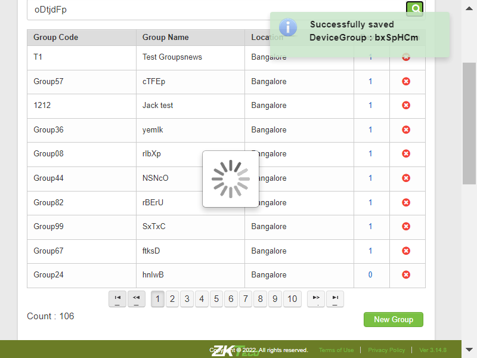TC_13:Verify whether use is able to filter the record by Group namecom.zkteco.cirrusdcs.stepDefinitions.CirrusDCS.i_initialize_drivers_for_DCS_automation()Driver InitializedGiven I visit CirrusDCS TenantLogin pageGiven I am in Tenant home pageWhen I perform mousehower on Device managerAnd I click on Device Groups sub moduleThen I Click on New group buttonThen I enter all the details for creating device groupAnd I Click on save buttonThen I click on Yes buttonThen I enter device group name into search text fieldThen I click on device group search iconThen I validate the filter results for groupnamecom.zkteco.cirrusdcs.stepDefinitions.CirrusDCS.teardown(io.cucumber.java.Scenario)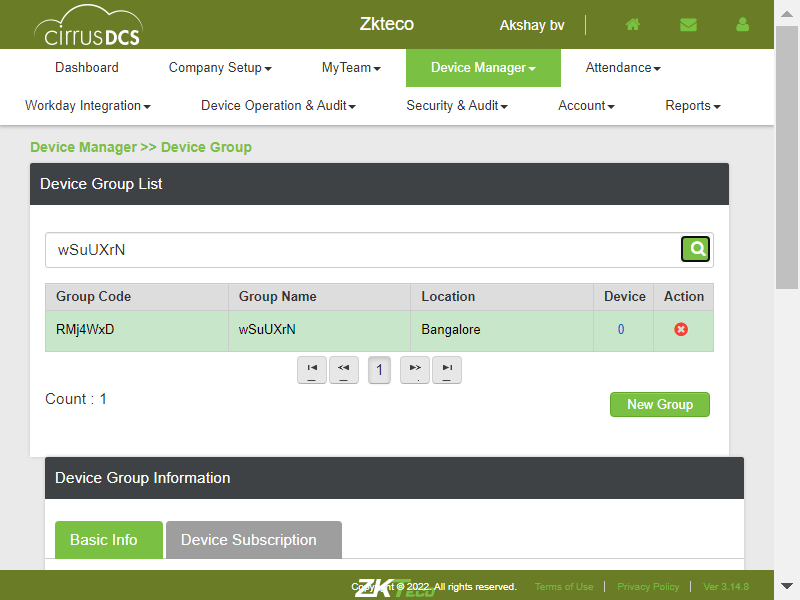TC_14:Verify whether use is able to filter the record by Group Code/Name with invalid datacom.zkteco.cirrusdcs.stepDefinitions.CirrusDCS.i_initialize_drivers_for_DCS_automation()Driver InitializedGiven I visit CirrusDCS TenantLogin pageGiven I am in Tenant home pageWhen I perform mousehower on Device managerAnd I click on Device Groups sub moduleThen I Click on New group buttonThen I enter all the details for creating device groupAnd I Click on save buttonThen I click on Yes buttonThen I enter invalid device group code into search text fieldThen I click on device group search iconThen I validate the search results for invalid datacom.zkteco.cirrusdcs.stepDefinitions.CirrusDCS.teardown(io.cucumber.java.Scenario)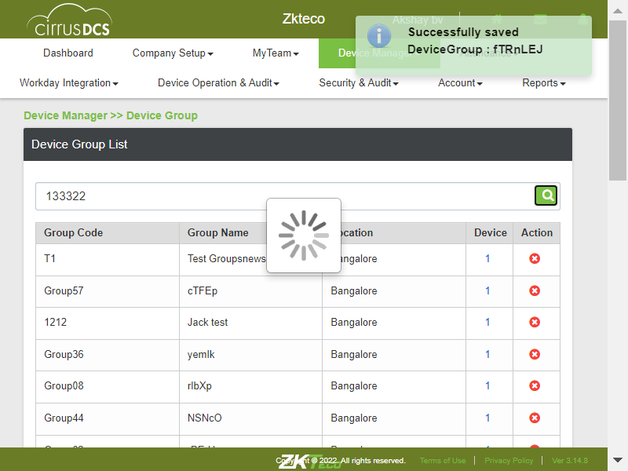TC_15: Verify whether use is able to edit Device Groupcom.zkteco.cirrusdcs.stepDefinitions.CirrusDCS.i_initialize_drivers_for_DCS_automation()Driver InitializedGiven I visit CirrusDCS TenantLogin pageGiven I am in Tenant home pageWhen I perform mousehower on Device managerAnd I click on Device Groups sub moduleThen I Click on New group buttonThen I enter all the details for creating device groupAnd I Click on save buttonThen I click on Yes buttonThen I enter device group code into search text fieldThen I click on device group search iconThen I select the device groupAnd I Click on Edit buttonThen I edit all the details for creating device groupAnd I Click on save buttonThen I click on Yes buttonThen I validate the device group creationTC_16: Verify whether use is able to view the count of Groups properly.com.zkteco.cirrusdcs.stepDefinitions.CirrusDCS.i_initialize_drivers_for_DCS_automation()Driver InitializedGiven I visit CirrusDCS TenantLogin pageGiven I am in Tenant home pageWhen I perform mousehower on Device managerAnd I click on Device Groups sub moduleThen I validate the device group reccords countcom.zkteco.cirrusdcs.stepDefinitions.CirrusDCS.teardown(io.cucumber.java.Scenario)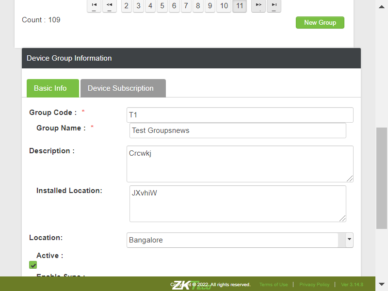TC_17: Verify whether use is able to delete Device Groupcom.zkteco.cirrusdcs.stepDefinitions.CirrusDCS.i_initialize_drivers_for_DCS_automation()Driver InitializedGiven I visit CirrusDCS TenantLogin pageGiven I am in Tenant home pageWhen I perform mousehower on Device managerAnd I click on Device Groups sub moduleThen I Click on New group buttonThen I enter all the details for creating device groupAnd I Click on save buttonThen I click on Yes buttonThen I enter device group code into search text fieldThen I click on device group search iconThen I click on deletion iconThen I click on Yes buttonStep skippedThen I validate the success messageStep skippedThen I validate the device group deletionStep skippedcom.zkteco.cirrusdcs.stepDefinitions.CirrusDCS.teardown(io.cucumber.java.Scenario)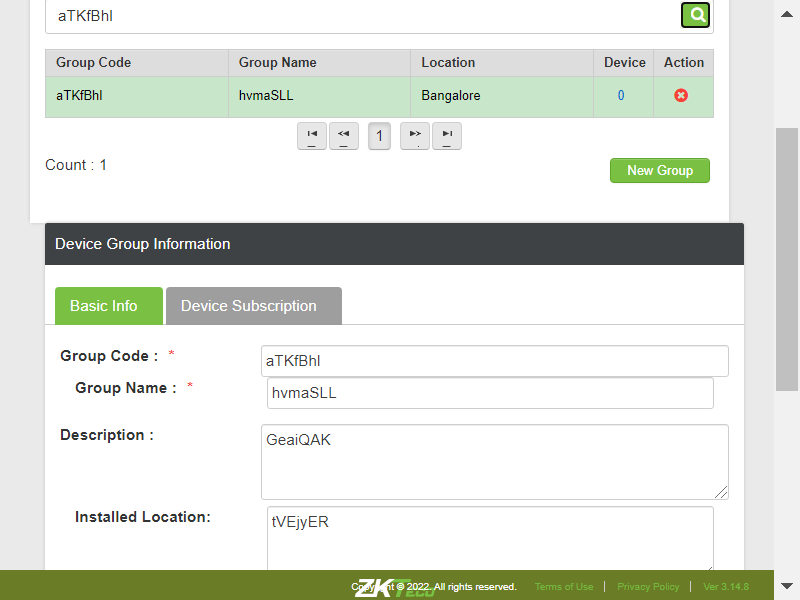TC_18: Verify whether User is able to view the below mentioned items in Assign Device to Device Group pop up windowcom.zkteco.cirrusdcs.stepDefinitions.CirrusDCS.i_initialize_drivers_for_DCS_automation()Driver InitializedGiven I visit CirrusDCS TenantLogin pageGiven I am in Tenant home pageWhen I perform mousehower on Device managerAnd I click on Device Groups sub moduleAnd I click on assigned device buttonThen I validate table & components in assign device popupcom.zkteco.cirrusdcs.stepDefinitions.CirrusDCS.teardown(io.cucumber.java.Scenario)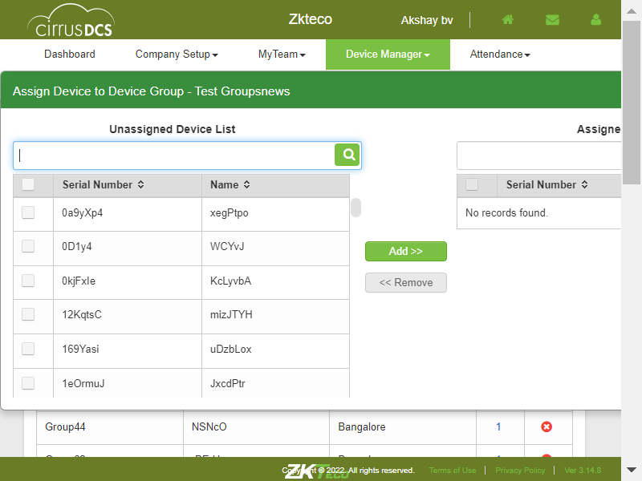TC_19: Verify whether User is able to assign and remove the Group to a devicecom.zkteco.cirrusdcs.stepDefinitions.CirrusDCS.i_initialize_drivers_for_DCS_automation()Driver InitializedGiven I visit CirrusDCS TenantLogin pageGiven I am in Tenant home pageWhen I perform mousehower on Device managerAnd I click on Device Setup sub moduleThen I click on new device buttonThen I enter the details and add the deviceThen I click on Yes buttonAnd I click on Device Groups sub moduleThen I Click on New group buttonThen I enter all the details for creating device groupAnd I Click on save buttonThen I click on Yes buttonThen I enter device group code into search text fieldThen I click on device group search iconAnd I click on assigned device buttonThen I select the device to add in unassignedtableThen I click on Add buttonThen I click on Yes buttonThen I validate the device adding in assigned device windowThen I select the device to add in assignedtableThen I click on Remove buttonThen I click on Yes buttonThen I validate the device removing in assigned device windowTC_20: Verify whether user is able to add subscription for device groupcom.zkteco.cirrusdcs.stepDefinitions.CirrusDCS.i_initialize_drivers_for_DCS_automation()Driver InitializedGiven I visit CirrusDCS TenantLogin pageGiven I am in Tenant home pageWhen I perform mousehower on Device managerAnd I click on Device Groups sub moduleThen I Click on New group buttonThen I enter all the details for creating device groupAnd I Click on save buttonThen I click on Yes buttonThen I enter device group code into search text fieldThen I click on device group search iconThen I select the device groupThen I click on device group subscription tabThen I click on add subscription buttonThen I add subscription for low and High temperatureThen I vaidate the whether the subscriptions are added or updated or deletedStep skippedcom.zkteco.cirrusdcs.stepDefinitions.CirrusDCS.teardown(io.cucumber.java.Scenario)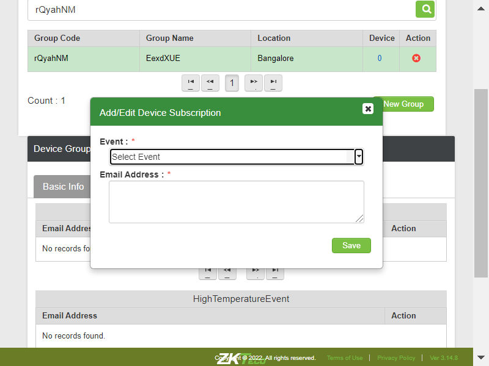TC_21: Verify whether User is able to edit the Subscribed Eventcom.zkteco.cirrusdcs.stepDefinitions.CirrusDCS.i_initialize_drivers_for_DCS_automation()Driver InitializedGiven I visit CirrusDCS TenantLogin pageGiven I am in Tenant home pageWhen I perform mousehower on Device managerAnd I click on Device Groups sub moduleThen I Click on New group buttonThen I enter all the details for creating device groupAnd I Click on save buttonThen I click on Yes buttonThen I enter device group code into search text fieldThen I click on device group search iconThen I select the device groupThen I click on device group subscription tabThen I click on add subscription buttonThen I add subscription for low and High temperatureThen I click on edit icon and update all the detailsThen I vaidate the whether the subscriptions are added or updated or deletedStep skippedcom.zkteco.cirrusdcs.stepDefinitions.CirrusDCS.teardown(io.cucumber.java.Scenario)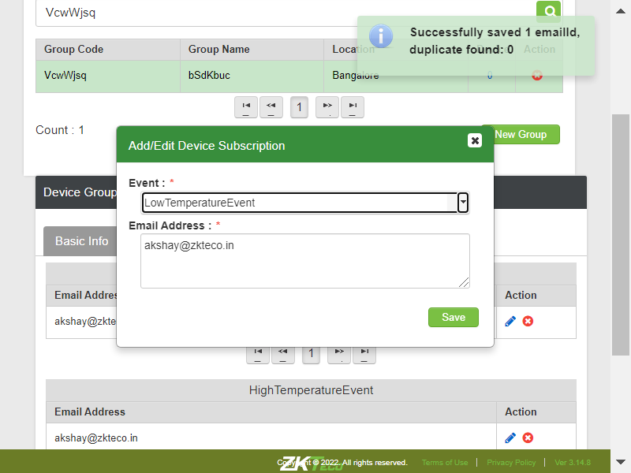TC_22: Verify whether User is able to delete the Subscribed Eventcom.zkteco.cirrusdcs.stepDefinitions.CirrusDCS.i_initialize_drivers_for_DCS_automation()Driver InitializedGiven I visit CirrusDCS TenantLogin pageGiven I am in Tenant home pageWhen I perform mousehower on Device managerAnd I click on Device Groups sub moduleThen I Click on New group buttonThen I enter all the details for creating device groupAnd I Click on save buttonThen I click on Yes buttonThen I enter device group code into search text fieldThen I click on device group search iconThen I select the device groupThen I click on device group subscription tabThen I click on add subscription buttonThen I add subscription for low and High temperatureThen I click on delete icon and validate the deletionThen I vaidate the whether the subscriptions are added or updated or deletedVerify whether User is able to view the Device operation & Audit modulecom.zkteco.cirrusdcs.stepDefinitions.CirrusDCS.i_initialize_drivers_for_DCS_automation()Driver InitializedGiven I visit CirrusDCS TenantLogin pageGiven I am in Tenant home pageThen I verify the Device manager module is displayedVerify whether User is able to view the all sub modules in the Device operation &Audit modulecom.zkteco.cirrusdcs.stepDefinitions.CirrusDCS.i_initialize_drivers_for_DCS_automation()Driver InitializedGiven I visit CirrusDCS TenantLogin pageGiven I am in Tenant home pageWhen I perform mousehower on Device managerThen I verify the device manager module and its submodules are presentVerify whether User is able to access the Device info sub module Device info page is displayedcom.zkteco.cirrusdcs.stepDefinitions.CirrusDCS.i_initialize_drivers_for_DCS_automation()Driver InitializedGiven I visit CirrusDCS TenantLogin pageGiven I am in Tenant home pageWhen I perform mousehower on Device managerAnd I click on tenant Device Info sub moduleThen I verify the page navigation to device info pageVerify whether the User is able to view the all section in the Device info pagecom.zkteco.cirrusdcs.stepDefinitions.CirrusDCS.i_initialize_drivers_for_DCS_automation()Driver InitializedGiven I visit CirrusDCS TenantLogin pageGiven I am in Tenant home pageWhen I perform mousehower on Device managerAnd I click on tenant Device Info sub moduleThen I validate the sections present in the device info pageVerify whether the User is able to view all the components in the Device list sectioncom.zkteco.cirrusdcs.stepDefinitions.CirrusDCS.i_initialize_drivers_for_DCS_automation()Driver InitializedGiven I visit CirrusDCS TenantLogin pageGiven I am in Tenant home pageWhen I perform mousehower on Device managerAnd I click on tenant Device Info sub moduleThen I validate the components present in the device list sectionVerify whether the User is able to view all the tabs in the Device Detailscom.zkteco.cirrusdcs.stepDefinitions.CirrusDCS.i_initialize_drivers_for_DCS_automation()Driver InitializedGiven I visit CirrusDCS TenantLogin pageGiven I am in Tenant home pageWhen I perform mousehower on Device managerAnd I click on tenant Device Info sub moduleThen I verify all the tabs in the Device DetailsVerify whether the User is able to view all the fields in below mentioned tabscom.zkteco.cirrusdcs.stepDefinitions.CirrusDCS.i_initialize_drivers_for_DCS_automation()Driver InitializedGiven I visit CirrusDCS TenantLogin pageGiven I am in Tenant home pageWhen I perform mousehower on Device managerAnd I click on tenant Device Info sub moduleThen I verify all the fields in device info pageVerify whether User is able to maximize or minimize the tabs by access the plus or minus buttoncom.zkteco.cirrusdcs.stepDefinitions.CirrusDCS.i_initialize_drivers_for_DCS_automation()Driver InitializedGiven I visit CirrusDCS TenantLogin pageGiven I am in Tenant home pageWhen I perform mousehower on Device managerAnd I click on tenant Device Info sub moduleThen I verify whether the device details tabs are getting minimized in device info pageVerify whether the User is able to search the device by using tenant/ device name /Device sncom.zkteco.cirrusdcs.stepDefinitions.CirrusDCS.i_initialize_drivers_for_DCS_automation()Driver InitializedGiven I visit CirrusDCS TenantLogin pageGiven I am in Tenant home pageWhen I perform mousehower on Device managerAnd I click on tenant Device Info sub moduleThen I verify whether the device details tabs are getting maximized in device info pageTC_10: Verify whether user is able to view the below mentioned columns, after searching the devicecom.zkteco.cirrusdcs.stepDefinitions.CirrusDCS.i_initialize_drivers_for_DCS_automation()Driver InitializedGiven I visit CirrusDCS TenantLogin pageGiven I am in Tenant home pageWhen I perform mousehower on Device managerAnd I click on tenant Device Info sub moduleThen I enter devicename into search fieldThen I click on Search IconThen I validate columns after search resultsVerify whether the User is able to select the device the device detail information is displayedcom.zkteco.cirrusdcs.stepDefinitions.CirrusDCS.i_initialize_drivers_for_DCS_automation()Driver InitializedGiven I visit CirrusDCS TenantLogin pageGiven I am in Tenant home pageWhen I perform mousehower on Device managerAnd I click on Device Setup sub moduleThen I click on new device buttonThen I enter the details and add the deviceThen I click on Yes buttonAnd I click on tenant Device Info sub moduleThen I enter devicesn into search fieldThen I click on Search IconThen I validate data auto autopopulation based on the selected device in device live log tabcom.zkteco.cirrusdcs.stepDefinitions.CirrusDCS.teardown(io.cucumber.java.Scenario)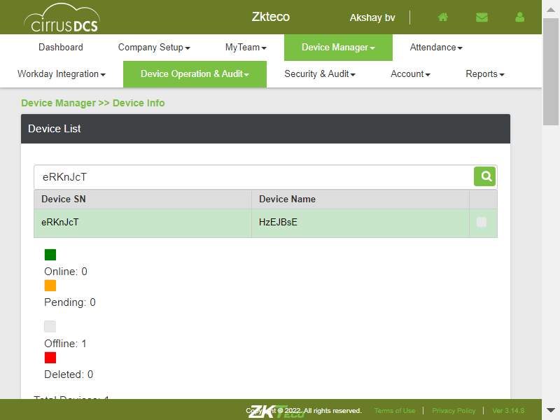Verify whether User is able to view the below mentioned components in device details pagecom.zkteco.cirrusdcs.stepDefinitions.CirrusDCS.i_initialize_drivers_for_DCS_automation()Driver InitializedGiven I visit CirrusDCS TenantLogin pageGiven I am in Tenant home pageWhen I perform mousehower on Device managerAnd I click on tenant Device Info sub moduleThen I enter devicesn into search fieldThen I click on Search IconThen I validate the components in device details section of device info pageTC_13: Verify whether user is able to search the device based on tenant name search criteriacom.zkteco.cirrusdcs.stepDefinitions.CirrusDCS.i_initialize_drivers_for_DCS_automation()Driver InitializedGiven I visit CirrusDCS TenantLogin pageGiven I am in Tenant home pageWhen I perform mousehower on Device managerAnd I click on tenant Device Info sub moduleThen I enter tenant name into search fieldThen I click on Search IconThen I validate the search resultsTC_14: Verify whether user is able to search the device based on device sn search criteriacom.zkteco.cirrusdcs.stepDefinitions.CirrusDCS.i_initialize_drivers_for_DCS_automation()Driver InitializedGiven I visit CirrusDCS TenantLogin pageGiven I am in Tenant home pageWhen I perform mousehower on Device managerAnd I click on tenant Device Info sub moduleThen I enter devicesn into search fieldThen I click on Search IconThen I validate the search resultsTC_15: Verify whether user is able to search the device based on device name search criteriacom.zkteco.cirrusdcs.stepDefinitions.CirrusDCS.i_initialize_drivers_for_DCS_automation()Driver InitializedGiven I visit CirrusDCS TenantLogin pageGiven I am in Tenant home pageWhen I perform mousehower on Device managerAnd I click on tenant Device Info sub moduleThen I enter devicename into search fieldThen I click on Search IconThen I validate the search resultsVerify whether the User is able to access the refresh button the page will be refreshcom.zkteco.cirrusdcs.stepDefinitions.CirrusDCS.i_initialize_drivers_for_DCS_automation()Driver InitializedGiven I visit CirrusDCS TenantLogin pageGiven I am in Tenant home pageWhen I perform mousehower on Device managerAnd I click on tenant Device Info sub moduleThen I enter devicesn into search fieldThen I click on Search IconThen I select the deviceThen I click on Refresh button and I validate the page refreshVerify the User is able to access the view options button Device options popup page is displayedcom.zkteco.cirrusdcs.stepDefinitions.CirrusDCS.i_initialize_drivers_for_DCS_automation()Driver InitializedGiven I visit CirrusDCS TenantLogin pageGiven I am in Tenant home pageWhen I perform mousehower on Device managerAnd I click on tenant Device Info sub moduleThen I enter devicesn into search fieldThen I click on Search IconThen I select the deviceThen I click on view options button in device info pageThen I verify view options popup is displayed on click of view options buttonVerify whether User is able to access the view bell schedule button Bell schedule popup page is displayedcom.zkteco.cirrusdcs.stepDefinitions.CirrusDCS.i_initialize_drivers_for_DCS_automation()Driver InitializedGiven I visit CirrusDCS TenantLogin pageGiven I am in Tenant home pageWhen I perform mousehower on Device managerAnd I click on tenant Device Info sub moduleThen I enter devicesn into search fieldThen I click on Search IconThen I select the deviceThen I click on View Bell Schedule buttonThen I verify view bell schedule popup is displayed on click of view Bell Schedule buttonVerify whether in the bell schedule popup page below mentioned table is displayedcom.zkteco.cirrusdcs.stepDefinitions.CirrusDCS.i_initialize_drivers_for_DCS_automation()Driver InitializedGiven I visit CirrusDCS TenantLogin pageGiven I am in Tenant home pageWhen I perform mousehower on Device managerAnd I click on tenant Device Info sub moduleThen I enter devicesn into search fieldThen I click on Search IconThen I select the deviceThen I click on View Bell Schedule buttonThen I validate the columns in view bell schedule popupTC_20: Verify whether user is able to Filter the data for online device statuscom.zkteco.cirrusdcs.stepDefinitions.CirrusDCS.i_initialize_drivers_for_DCS_automation()Driver InitializedGiven I visit CirrusDCS TenantLogin pageGiven I am in Tenant home pageWhen I perform mousehower on Device managerAnd I click on tenant Device Info sub moduleThen I click on online status check boxThen I click on Search IconThen I validate whether all the devices present based on the device statusTC_21: Verify whether user is able to Filter the data for offline device statuscom.zkteco.cirrusdcs.stepDefinitions.CirrusDCS.i_initialize_drivers_for_DCS_automation()Driver InitializedGiven I visit CirrusDCS TenantLogin pageGiven I am in Tenant home pageWhen I perform mousehower on Device managerAnd I click on tenant Device Info sub moduleThen I click on pending status check boxThen I click on Search IconThen I validate whether all the devices present based on the device statusTC_22: Verify whether user is able to Filter the data for offline device statuscom.zkteco.cirrusdcs.stepDefinitions.CirrusDCS.i_initialize_drivers_for_DCS_automation()Driver InitializedGiven I visit CirrusDCS TenantLogin pageGiven I am in Tenant home pageWhen I perform mousehower on Device managerAnd I click on tenant Device Info sub moduleThen I click on offline status check boxThen I click on Search IconThen I validate whether all the devices present based on the device statusTC_23: Verify whether user is able to Filter the data for deleted device statuscom.zkteco.cirrusdcs.stepDefinitions.CirrusDCS.i_initialize_drivers_for_DCS_automation()Driver InitializedGiven I visit CirrusDCS TenantLogin pageGiven I am in Tenant home pageWhen I perform mousehower on Device managerAnd I click on tenant Device Info sub moduleThen I click on deleted status check boxThen I click on Search IconThen I validate whether all the devices present based on the device statusTC_24: Verify whether user is able to Filter the data for all device statuscom.zkteco.cirrusdcs.stepDefinitions.CirrusDCS.i_initialize_drivers_for_DCS_automation()Driver InitializedGiven I visit CirrusDCS TenantLogin pageGiven I am in Tenant home pageWhen I perform mousehower on Device managerAnd I click on tenant Device Info sub moduleThen I click on all status check boxThen I click on Search IconThen I validate whether all the devices present based on all the device statusTC_01: Verify whether user is able to navigate to "Device Setup" submodulecom.zkteco.cirrusdcs.stepDefinitions.CirrusDCS.i_initialize_drivers_for_DCS_automation()Driver InitializedGiven I visit CirrusDCS TenantLogin pageGiven I am in Tenant home pageWhen I perform mousehower on Device managerAnd I click on Device Setup sub moduleThen I validate user navigation to device setup pageTC_02: Verify whether user is able to view below mentioned sections in device operations pagecom.zkteco.cirrusdcs.stepDefinitions.CirrusDCS.i_initialize_drivers_for_DCS_automation()Driver InitializedGiven I visit CirrusDCS TenantLogin pageGiven I am in Tenant home pageWhen I perform mousehower on Device managerAnd I click on Device Setup sub moduleThen I validate the sections present in the device setup pageTC_03: Verify whether User is able to view below mentioned components and table Tabscom.zkteco.cirrusdcs.stepDefinitions.CirrusDCS.i_initialize_drivers_for_DCS_automation()Driver InitializedGiven I visit CirrusDCS TenantLogin pageGiven I am in Tenant home pageWhen I perform mousehower on Device managerAnd I click on Device Setup sub moduleThen I validate the tabs present in device setup pageTC_04: Verify whether user is able to view the below mentioned components in device setup pagecom.zkteco.cirrusdcs.stepDefinitions.CirrusDCS.i_initialize_drivers_for_DCS_automation()Driver InitializedGiven I visit CirrusDCS TenantLogin pageGiven I am in Tenant home pageWhen I perform mousehower on Device managerAnd I click on Device Setup sub moduleThen I validate whether all the components are present in device setup device list sectionTC_05: Verify whether user is able to view the below mentioned components in device setup pagecom.zkteco.cirrusdcs.stepDefinitions.CirrusDCS.i_initialize_drivers_for_DCS_automation()Driver InitializedGiven I visit CirrusDCS TenantLogin pageGiven I am in Tenant home pageWhen I perform mousehower on Device managerAnd I click on Device Setup sub moduleThen I validate whether all the components are present in device setup device list sectionTC_06: Verify whether user is able to Filter the data for online device statuscom.zkteco.cirrusdcs.stepDefinitions.CirrusDCS.i_initialize_drivers_for_DCS_automation()Driver InitializedGiven I visit CirrusDCS TenantLogin pageGiven I am in Tenant home pageWhen I perform mousehower on Device managerAnd I click on Device Setup sub moduleThen I click on online status check boxThen I click on Search IconThen I validate whether all the devices present based on the device statusTC_07: Verify whether user is able to Filter the data for pending device statuscom.zkteco.cirrusdcs.stepDefinitions.CirrusDCS.i_initialize_drivers_for_DCS_automation()Driver InitializedGiven I visit CirrusDCS TenantLogin pageGiven I am in Tenant home pageWhen I perform mousehower on Device managerAnd I click on Device Setup sub moduleThen I click on pending status check boxThen I click on Search IconThen I validate whether all the devices present based on the device statusTC_08: Verify whether user is able to Filter the data for offline device statuscom.zkteco.cirrusdcs.stepDefinitions.CirrusDCS.i_initialize_drivers_for_DCS_automation()Driver InitializedGiven I visit CirrusDCS TenantLogin pageGiven I am in Tenant home pageWhen I perform mousehower on Device managerAnd I click on Device Setup sub moduleThen I click on offline status check boxThen I click on Search IconThen I validate whether all the devices present based on the device statusTC_09: Verify whether user is able to Filter the data for deleted device statuscom.zkteco.cirrusdcs.stepDefinitions.CirrusDCS.i_initialize_drivers_for_DCS_automation()Driver InitializedGiven I visit CirrusDCS TenantLogin pageGiven I am in Tenant home pageWhen I perform mousehower on Device managerAnd I click on Device Setup sub moduleThen I click on deleted status check boxThen I click on Search IconThen I validate whether all the devices present based on the device statusTC_10: Verify whether user is able to Filter the data for all device statuscom.zkteco.cirrusdcs.stepDefinitions.CirrusDCS.i_initialize_drivers_for_DCS_automation()Driver InitializedGiven I visit CirrusDCS TenantLogin pageGiven I am in Tenant home pageWhen I perform mousehower on Device managerAnd I click on Device Setup sub moduleThen I click on all status check boxThen I click on Search IconThen I validate whether all the devices present based on all the device statusTC_11: Verify whether Respective device details are getting auto populated, when device is selectedcom.zkteco.cirrusdcs.stepDefinitions.CirrusDCS.i_initialize_drivers_for_DCS_automation()Driver InitializedGiven I visit CirrusDCS TenantLogin pageGiven I am in Tenant home pageWhen I perform mousehower on Device managerAnd I click on Device Setup sub moduleThen I click on new device buttonThen I enter the details and add the deviceThen I click on Yes buttonThen I enter devicesn into search fieldThen I click on Search IconThen I validate data auto autopopulation based on the selected device in device setup pageTC_12: Verify whether User is able to navigate to Batch Enroll Devices Window, when clicked on Batch Enroll buttoncom.zkteco.cirrusdcs.stepDefinitions.CirrusDCS.i_initialize_drivers_for_DCS_automation()Driver InitializedGiven I visit CirrusDCS TenantLogin pageGiven I am in Tenant home pageWhen I perform mousehower on Device managerAnd I click on Device Setup sub moduleThen I enter devicesn into search fieldThen I click on batch enroll buttonThen I verify the popup in batch enrollTC_13: Verify whether User is able to view below mentioned components in Batch Enroll Devices pagecom.zkteco.cirrusdcs.stepDefinitions.CirrusDCS.i_initialize_drivers_for_DCS_automation()Driver InitializedGiven I visit CirrusDCS TenantLogin pageGiven I am in Tenant home pageWhen I perform mousehower on Device managerAnd I click on Device Setup sub moduleThen I enter devicesn into search fieldThen I click on batch enroll buttonThen I verify the components in batch Enroll popupTC_14: Verify whether User is able to view below mentioned table columns in Batch Enroll Devices pagecom.zkteco.cirrusdcs.stepDefinitions.CirrusDCS.i_initialize_drivers_for_DCS_automation()Driver InitializedGiven I visit CirrusDCS TenantLogin pageGiven I am in Tenant home pageWhen I perform mousehower on Device managerAnd I click on Device Setup sub moduleThen I enter devicesn into search fieldThen I click on batch enroll buttonThen I verify the table columns in batch Enroll popupTC_15: Verify whether User is able to choose and upload the CSV file in Batch Enroll Devices windowcom.zkteco.cirrusdcs.stepDefinitions.CirrusDCS.i_initialize_drivers_for_DCS_automation()Driver InitializedGiven I visit CirrusDCS TenantLogin pageGiven I am in Tenant home pageWhen I perform mousehower on Device managerAnd I click on Device Setup sub moduleThen I enter devicesn into search fieldThen I click on batch enroll buttonThen I upload the csv file for batch enrollThen I click on upload buttonStep skippedThen I verify the data is uploaded in Batch enroll popupStep skippedcom.zkteco.cirrusdcs.stepDefinitions.CirrusDCS.teardown(io.cucumber.java.Scenario)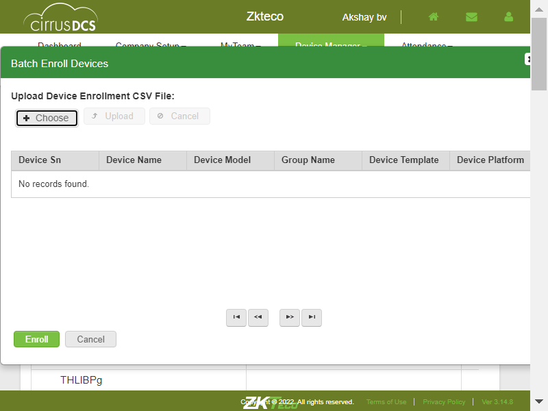TC_16: Verify whether User is able to upload the CSV file and perform Batch Enroll operationcom.zkteco.cirrusdcs.stepDefinitions.CirrusDCS.i_initialize_drivers_for_DCS_automation()Driver InitializedGiven I visit CirrusDCS TenantLogin pageGiven I am in Tenant home pageWhen I perform mousehower on Device managerAnd I click on Device Setup sub moduleThen I enter devicesn into search fieldThen I click on batch enroll buttonThen I upload the csv file for batch enrollThen I click on upload buttonStep skippedThen I click on Enroll buttonStep skippedThen I enter devicesn into search field for validating upload functionalityStep skippedThen I click on Search IconStep skippedThen I validate whether the device uploaded through batch enroll in device setup pageStep skippedcom.zkteco.cirrusdcs.stepDefinitions.CirrusDCS.teardown(io.cucumber.java.Scenario)TC_17: Verify whether User is able to open Device Details Pop up window by clicking on Copy Device buttoncom.zkteco.cirrusdcs.stepDefinitions.CirrusDCS.i_initialize_drivers_for_DCS_automation()Driver InitializedGiven I visit CirrusDCS TenantLogin pageGiven I am in Tenant home pageWhen I perform mousehower on Device managerAnd I click on Device Setup sub moduleThen I click on copy device buttonThen I verify the popup in copy deviceTC_18: Verify whether User is able to view below mentioned components in Device Details Pop up windowcom.zkteco.cirrusdcs.stepDefinitions.CirrusDCS.i_initialize_drivers_for_DCS_automation()Driver InitializedGiven I visit CirrusDCS TenantLogin pageGiven I am in Tenant home pageWhen I perform mousehower on Device managerAnd I click on Device Setup sub moduleThen I enter devicesn into search fieldThen I click on copy device buttonThen I verify the components in Copy Device popupTC_19: Verify whether User is able to Copy the Device Settings to New Device that is addedcom.zkteco.cirrusdcs.stepDefinitions.CirrusDCS.i_initialize_drivers_for_DCS_automation()Driver InitializedGiven I visit CirrusDCS TenantLogin pageGiven I am in Tenant home pageWhen I perform mousehower on Device managerAnd I click on Device Setup sub moduleThen I enter devicesn into search fieldThen I click on copy device buttonThen I enter all the details and copy the device configurationTC_20: Verify whether User is able to Copy the Device Settings to New Device that is addedcom.zkteco.cirrusdcs.stepDefinitions.CirrusDCS.i_initialize_drivers_for_DCS_automation()Driver InitializedGiven I visit CirrusDCS TenantLogin pageGiven I am in Tenant home pageWhen I perform mousehower on Device managerAnd I click on Device Setup sub moduleThen I enter devicesn into search fieldThen I click on copy device buttonThen I enter all the details and copy the device configurationTC_21: Verify whether User is able to view below mentioned tabs and Components in New Device Page Tabscom.zkteco.cirrusdcs.stepDefinitions.CirrusDCS.i_initialize_drivers_for_DCS_automation()Driver InitializedGiven I visit CirrusDCS TenantLogin pageGiven I am in Tenant home pageWhen I perform mousehower on Device managerAnd I click on Device Setup sub moduleThen I click on new device buttonThen I validate the tabs in device setup pageTC_22: Verify whether User is able to view below mentioned tabs and Components in New Device Page Tabscom.zkteco.cirrusdcs.stepDefinitions.CirrusDCS.i_initialize_drivers_for_DCS_automation()Driver InitializedGiven I visit CirrusDCS TenantLogin pageGiven I am in Tenant home pageWhen I perform mousehower on Device managerAnd I click on Device Setup sub moduleThen I click on new device buttonThen I validate the components in Device Enrollment tab in device setupTC_23: Verify whether User is able to view below mentioned components in Device Basic Config tabcom.zkteco.cirrusdcs.stepDefinitions.CirrusDCS.i_initialize_drivers_for_DCS_automation()Driver InitializedGiven I visit CirrusDCS TenantLogin pageGiven I am in Tenant home pageWhen I perform mousehower on Device managerAnd I click on Device Setup sub moduleThen I click on new device buttonThen I click on all tabs in device setup pageThen I validate the components in Device basic config tab in device setupTC_24: Verify whether User is able to view below mentioned components in Device Basic Config tabcom.zkteco.cirrusdcs.stepDefinitions.CirrusDCS.i_initialize_drivers_for_DCS_automation()Driver InitializedGiven I visit CirrusDCS TenantLogin pageGiven I am in Tenant home pageWhen I perform mousehower on Device managerAnd I click on Device Setup sub moduleThen I click on new device buttonThen I click on all tabs in device setup pageThen I validate the components in general settings tab in device setupTC_25: Verify whether User is able to add New device into tenant accountcom.zkteco.cirrusdcs.stepDefinitions.CirrusDCS.i_initialize_drivers_for_DCS_automation()Driver InitializedGiven I visit CirrusDCS TenantLogin pageGiven I am in Tenant home pageWhen I perform mousehower on Device managerAnd I click on Device Setup sub moduleThen I click on new device buttonThen I enter the details and add the deviceThen I click on Yes buttonThen I validate the success messageThen I enter devicesn into search field for validating device addingThen I click on Search IconThen I validate the whether device is addedrecord searched successfully with client nameTC_26: Verify whether User is able to Save the Device Templatecom.zkteco.cirrusdcs.stepDefinitions.CirrusDCS.i_initialize_drivers_for_DCS_automation()Driver InitializedGiven I visit CirrusDCS TenantLogin pageGiven I am in Tenant home pageWhen I perform mousehower on Device managerAnd I click on Device Setup sub moduleThen I click on new device buttonThen I enter the details and add the deviceThen I click on Yes buttonThen I validate the success messageThen I enter devicesn into search field for validating device addingThen I click on Search IconThen I validate data auto autopopulation based on the selected device in device setup pageThen I click on save device as template buttonThen I enter details for saving template and saveThen I click on device template tab in device setup pageThen I validate the template creation in device setup pageTC_27: Verify whether User is able to Change the Device Serial Nocom.zkteco.cirrusdcs.stepDefinitions.CirrusDCS.i_initialize_drivers_for_DCS_automation()Driver InitializedGiven I visit CirrusDCS TenantLogin pageGiven I am in Tenant home pageWhen I perform mousehower on Device managerAnd I click on Device Setup sub moduleThen I click on new device buttonThen I enter the details and add the deviceThen I click on Yes buttonThen I validate the success messageThen I enter devicesn into search field for validating device addingThen I click on Search IconThen I validate data auto autopopulation based on the selected device in device setup pageThen I click on save device as template buttonThen I enter details for saving template and saveThen I click on device template tab in device setup pageThen I validate the template creation in device setup pageTC_28: Verify whether User is able to Change the Device Serial Nocom.zkteco.cirrusdcs.stepDefinitions.CirrusDCS.i_initialize_drivers_for_DCS_automation()Driver InitializedGiven I visit CirrusDCS TenantLogin pageGiven I am in Tenant home pageWhen I perform mousehower on Device managerAnd I click on Device Setup sub moduleThen I click on new device buttonThen I enter the details and add the deviceThen I click on Yes buttonThen I validate the success messageThen I enter devicesn into search field for validating device addingThen I click on Search IconThen I validate data auto autopopulation based on the selected device in device setup pageThen I click on change device sn buttonThen I enter all the details for changing device snThen I enter devicesn into search field for validating device addingThen I click on Search IconThen I validate whether device sn is changedTC_29:Verify whether User is able to view the change in tabs based on the Device Platformcom.zkteco.cirrusdcs.stepDefinitions.CirrusDCS.i_initialize_drivers_for_DCS_automation()Driver InitializedGiven I visit CirrusDCS TenantLogin pageGiven I am in Tenant home pageWhen I perform mousehower on Device managerAnd I click on Device Setup sub moduleThen I click on new device buttonThen I enter the details and add the device to verify tabs based on the device platformThen I validate the tabs in device setup pageStep skippedcom.zkteco.cirrusdcs.stepDefinitions.CirrusDCS.teardown(io.cucumber.java.Scenario)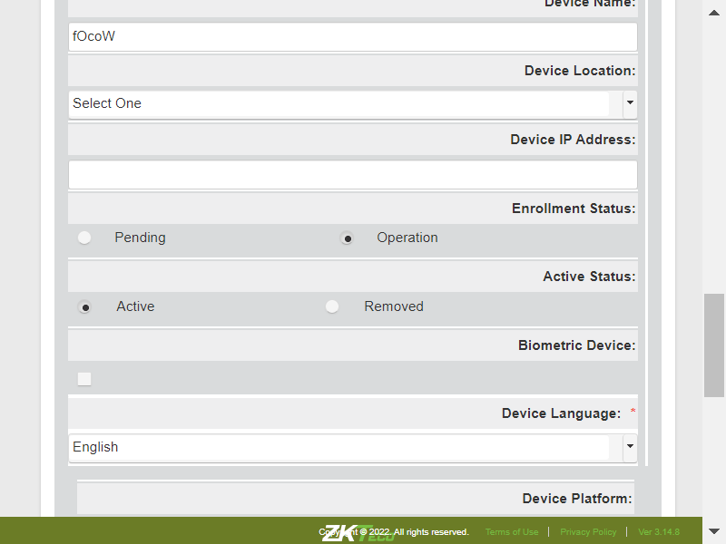TC_30:Verify whether User is able to view below mentioned tabs, after the device is addedcom.zkteco.cirrusdcs.stepDefinitions.CirrusDCS.i_initialize_drivers_for_DCS_automation()Driver InitializedGiven I visit CirrusDCS TenantLogin pageGiven I am in Tenant home pageWhen I perform mousehower on Device managerAnd I click on Device Setup sub moduleThen I click on new device buttonThen I enter the details and add the deviceThen I click on Yes buttonThen I validate the tabs in device setup pageTC_31:Verify whether User is able to view below mentioned components in Hardware setup sectioncom.zkteco.cirrusdcs.stepDefinitions.CirrusDCS.i_initialize_drivers_for_DCS_automation()Driver InitializedGiven I visit CirrusDCS TenantLogin pageGiven I am in Tenant home pageWhen I perform mousehower on Device managerAnd I click on Device Setup sub moduleThen I click on new device buttonThen I enter the details and add the deviceThen I click on Yes buttonThen I click on all tabs in device setup pageThen I verify all the components in Hardware setupcom.zkteco.cirrusdcs.stepDefinitions.CirrusDCS.teardown(io.cucumber.java.Scenario)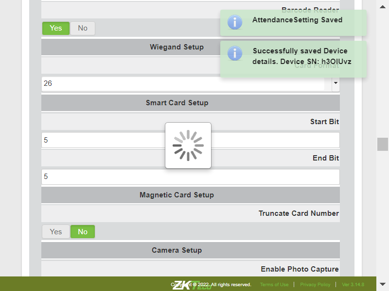TC_32:Verify whether User is able to view all the components in Clock Attendance Rule Setupcom.zkteco.cirrusdcs.stepDefinitions.CirrusDCS.i_initialize_drivers_for_DCS_automation()Driver InitializedGiven I visit CirrusDCS TenantLogin pageGiven I am in Tenant home pageWhen I perform mousehower on Device managerAnd I click on Device Setup sub moduleThen I click on new device buttonThen I enter the details and add the deviceThen I click on Yes buttonThen I click on all tabs in device setup pageThen I verify all the components in clock attendance rule setupTC_33:Verify whether User is able to view all the components Additional Settings under device Setupcom.zkteco.cirrusdcs.stepDefinitions.CirrusDCS.i_initialize_drivers_for_DCS_automation()Driver InitializedGiven I visit CirrusDCS TenantLogin pageGiven I am in Tenant home pageWhen I perform mousehower on Device managerAnd I click on Device Setup sub moduleThen I click on new device buttonThen I enter the details and add the deviceThen I click on Yes buttonThen I click on all tabs in device setup pageThen I validate the components in Additional settings tab in device setupTC_34:Verify whether User is able to view all the components in message settings tab in device setupcom.zkteco.cirrusdcs.stepDefinitions.CirrusDCS.i_initialize_drivers_for_DCS_automation()Driver InitializedGiven I visit CirrusDCS TenantLogin pageGiven I am in Tenant home pageWhen I perform mousehower on Device managerAnd I click on Device Setup sub moduleThen I click on new device buttonThen I enter the details and add the deviceThen I click on Yes buttonThen I click on all tabs in device setup pageThen I validate the components in message settings tab in device setupTC_35:Verify whether User is able to view all the components in device subscription tab in device setupcom.zkteco.cirrusdcs.stepDefinitions.CirrusDCS.i_initialize_drivers_for_DCS_automation()Driver InitializedGiven I visit CirrusDCS TenantLogin pageGiven I am in Tenant home pageWhen I perform mousehower on Device managerAnd I click on Device Setup sub moduleThen I click on all tabs in device setup pageThen I validate the components in device subscription tab in device setupTC_36:Verify whether User is able to save the hardware setupcom.zkteco.cirrusdcs.stepDefinitions.CirrusDCS.i_initialize_drivers_for_DCS_automation()Driver InitializedGiven I visit CirrusDCS TenantLogin pageGiven I am in Tenant home pageWhen I perform mousehower on Device managerAnd I click on Device Setup sub moduleThen I click on new device buttonThen I enter the details and add the deviceThen I click on Yes buttonThen I click on all tabs in device setup pageThen I configure all the details and saveThen I validate the success messageStep skippedcom.zkteco.cirrusdcs.stepDefinitions.CirrusDCS.teardown(io.cucumber.java.Scenario)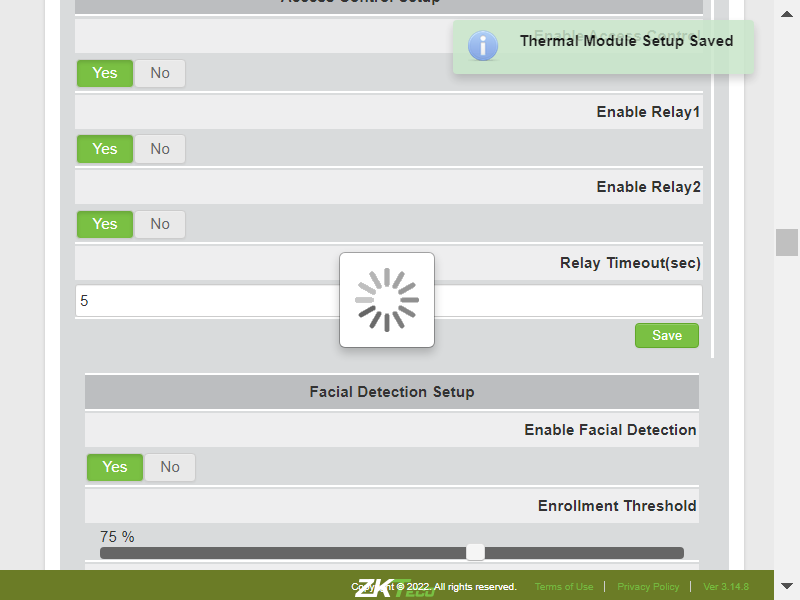TC_37:Verify whether User is able to save the clock attendance rule setupcom.zkteco.cirrusdcs.stepDefinitions.CirrusDCS.i_initialize_drivers_for_DCS_automation()Driver InitializedGiven I visit CirrusDCS TenantLogin pageGiven I am in Tenant home pageWhen I perform mousehower on Device managerAnd I click on Device Setup sub moduleThen I click on new device buttonThen I enter the details and add the deviceThen I click on Yes buttonThen I click on all tabs in device setup pageThen I configure clock attendance rule setup and saveThen I validate the success messageTC_38:Verify whether User is able to save the Additional Settingscom.zkteco.cirrusdcs.stepDefinitions.CirrusDCS.i_initialize_drivers_for_DCS_automation()Driver InitializedGiven I visit CirrusDCS TenantLogin pageGiven I am in Tenant home pageWhen I perform mousehower on Device managerAnd I click on Device Setup sub moduleThen I click on new device buttonThen I enter the details and add the deviceThen I click on Yes buttonThen I click on all tabs in device setup pageThen I configure additional settings and saveThen I validate the success messageTC_39:Verify whether User is able to save the Device basic Configcom.zkteco.cirrusdcs.stepDefinitions.CirrusDCS.i_initialize_drivers_for_DCS_automation()Driver InitializedGiven I visit CirrusDCS TenantLogin pageGiven I am in Tenant home pageWhen I perform mousehower on Device managerAnd I click on Device Setup sub moduleThen I click on new device buttonThen I enter the details and add the deviceThen I click on Yes buttonThen I click on all tabs in device setup pageThen I configure device basic configuration and saveThen I validate the success messageTC_40:Verify whether User is able to save the message settings in device setupcom.zkteco.cirrusdcs.stepDefinitions.CirrusDCS.i_initialize_drivers_for_DCS_automation()Driver InitializedGiven I visit CirrusDCS TenantLogin pageGiven I am in Tenant home pageWhen I perform mousehower on Device managerAnd I click on Device Setup sub moduleThen I click on new device buttonThen I enter the details and add the deviceThen I click on Yes buttonThen I click on all tabs in device setup pageThen I configure message settings tab in device setup and saveThen I validate the success messageTC_41:Verify whether User is able to add device subscription in device setupcom.zkteco.cirrusdcs.stepDefinitions.CirrusDCS.i_initialize_drivers_for_DCS_automation()Driver InitializedGiven I visit CirrusDCS TenantLogin pageGiven I am in Tenant home pageWhen I perform mousehower on Device managerAnd I click on Device Setup sub moduleThen I click on new device buttonThen I enter the details and add the deviceThen I click on Yes buttonThen I click on all tabs in device setup pageThen I add device subscription and save in device setupThen I validate the success messageTC_42:Verify whether User is able to configure visitor module settings and savecom.zkteco.cirrusdcs.stepDefinitions.CirrusDCS.i_initialize_drivers_for_DCS_automation()Driver InitializedGiven I visit CirrusDCS TenantLogin pageGiven I am in Tenant home pageWhen I perform mousehower on Device managerAnd I click on Device Setup sub moduleThen I click on new device buttonThen I enter the details and add the deviceThen I click on Yes buttonThen I click on all tabs in device setup pageThen I configure visitor module settings and saveThen I validate the success messageTC_43:Verify whether User is able to save the Clock Attendance Rule Setup settings and the same settings can be saved for other devicecom.zkteco.cirrusdcs.stepDefinitions.CirrusDCS.i_initialize_drivers_for_DCS_automation()Driver InitializedGiven I visit CirrusDCS TenantLogin pageGiven I am in Tenant home pageWhen I perform mousehower on Device managerAnd I click on Device Setup sub moduleThen I click on new device buttonThen I enter the details and add the deviceThen I click on Yes buttonThen I click on all tabs in device setup pageThen I enter all the details for saving the presetThen I validate created template is displayed in Load from preset windowTC_44:Verify whether User is able to save the Clock Attendance Rule Setup settings and the same settings can be saved for other devicecom.zkteco.cirrusdcs.stepDefinitions.CirrusDCS.i_initialize_drivers_for_DCS_automation()Driver InitializedGiven I visit CirrusDCS TenantLogin pageGiven I am in Tenant home pageWhen I perform mousehower on Device managerAnd I click on Device Setup sub moduleThen I click on new device buttonThen I enter the details and add the deviceThen I click on Yes buttonThen I click on all tabs in device setup pageThen I enter all the details for saving the presetThen I validate created template is displayed in Load from preset windowTC_45:Verify whether User is able to configure clock function provision and savecom.zkteco.cirrusdcs.stepDefinitions.CirrusDCS.i_initialize_drivers_for_DCS_automation()Driver InitializedGiven I visit CirrusDCS TenantLogin pageGiven I am in Tenant home pageWhen I perform mousehower on Device managerAnd I click on Device Setup sub moduleThen I click on new device buttonThen I enter the details and add the deviceThen I click on Yes buttonThen I click on all tabs in device setup pageThen I configure clock function provision and savecom.zkteco.cirrusdcs.stepDefinitions.CirrusDCS.teardown(io.cucumber.java.Scenario)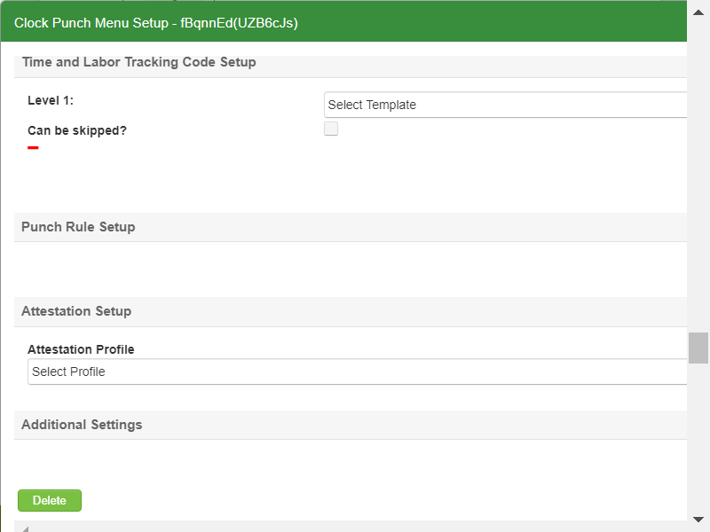TC_46:Verify whether User is able to sync all configurations to devicecom.zkteco.cirrusdcs.stepDefinitions.CirrusDCS.i_initialize_drivers_for_DCS_automation()Driver InitializedGiven I visit CirrusDCS TenantLogin pageGiven I am in Tenant home pageWhen I perform mousehower on Device managerAnd I click on Device Setup sub moduleThen I click on new device buttonThen I enter the details and add the deviceThen I click on Yes buttonThen I click on all tabs in device setup pageThen I configure all the details and saveThen I configure clock attendance rule setup and saveStep skippedThen I configure additional settings and saveStep skippedThen I configure device basic configuration and saveStep skippedThen I configure message settings tab in device setup and saveStep skippedThen I add device subscription and save in device setupStep skippedThen I configure visitor module settings and saveStep skippedThen I configure clock function provision and saveStep skippedThen I click on Sync to device buttonStep skippedThen I validate the success messageStep skippedWhen I perform mousehower on Device managerStep skippedAnd I click on Device Monitor sub moduleStep skippedThen I enter devicesn into search field for verifying command trigger in device monitorStep skippedThen I click on Search IconStep skippedThen I select the searched deviceStep skippedThen I verify the sent command from device operation is displayed in device monitor message queueStep skippedcom.zkteco.cirrusdcs.stepDefinitions.CirrusDCS.teardown(io.cucumber.java.Scenario)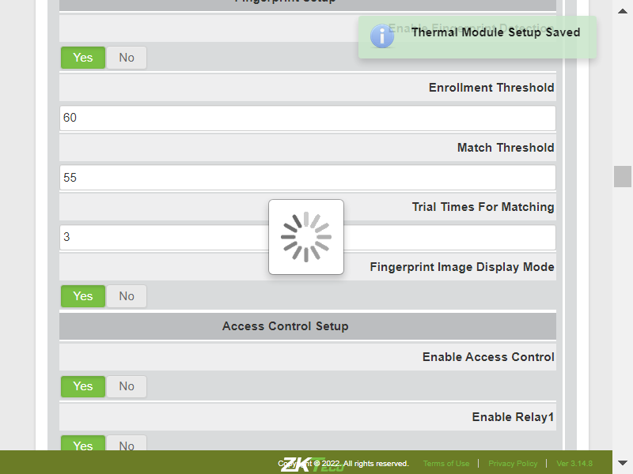TC_01: Verify whether user is able to navigate to "Device Setup" submodulecom.zkteco.cirrusdcs.stepDefinitions.CirrusDCS.i_initialize_drivers_for_DCS_automation()Driver InitializedGiven I visit CirrusDCS TenantLogin pageGiven I am in Tenant home pageWhen I perform mousehower on Device managerAnd I click on Device datasync sub moduleThen I validate user navigation to device data sync pageTC_02: Verify whether User is able to view below mentioned sectionscom.zkteco.cirrusdcs.stepDefinitions.CirrusDCS.i_initialize_drivers_for_DCS_automation()Driver InitializedGiven I visit CirrusDCS TenantLogin pageGiven I am in Tenant home pageWhen I perform mousehower on Device managerAnd I click on Device datasync sub moduleThen I validate the sections present in the device data sync pageTC_03: Verify whether User is able to view below mentioned sectionscom.zkteco.cirrusdcs.stepDefinitions.CirrusDCS.i_initialize_drivers_for_DCS_automation()Driver InitializedGiven I visit CirrusDCS TenantLogin pageGiven I am in Tenant home pageWhen I perform mousehower on Device managerAnd I click on Device datasync sub moduleThen I validate the sections present in the device data sync pageThen I verify the components present in the select device section in device data sync pageTC_04: Verify whether User is able to filter the devices by Device groupcom.zkteco.cirrusdcs.stepDefinitions.CirrusDCS.i_initialize_drivers_for_DCS_automation()Driver InitializedGiven I visit CirrusDCS TenantLogin pageGiven I am in Tenant home pageWhen I perform mousehower on Device managerAnd I click on Device Groups sub moduleThen I Click on New group buttonThen I enter all the details for creating device groupAnd I Click on save buttonThen I click on Yes buttonWhen I perform mousehower on Device managerAnd I click on Device Setup sub moduleThen I click on new device buttonThen I enter the details with group and add the deviceThen I click on Yes buttonStep skippedWhen I perform mousehower on Device managerStep skippedAnd I click on Device datasync sub moduleStep skippedThen I filter the devices by device group and vaildateStep skippedcom.zkteco.cirrusdcs.stepDefinitions.CirrusDCS.teardown(io.cucumber.java.Scenario) TC_05: Verify whether User is able to filter the devices by Device SN/Namecom.zkteco.cirrusdcs.stepDefinitions.CirrusDCS.i_initialize_drivers_for_DCS_automation()Driver InitializedGiven I visit CirrusDCS TenantLogin pageGiven I am in Tenant home pageWhen I perform mousehower on Device managerAnd I click on Device Groups sub moduleThen I Click on New group buttonThen I enter all the details for creating device groupAnd I Click on save buttonThen I click on Yes buttonWhen I perform mousehower on Device managerAnd I click on Device Setup sub moduleThen I click on new device buttonThen I enter the details and add the deviceThen I click on Yes buttonWhen I perform mousehower on Device managerAnd I click on Device datasync sub moduleThen I filter the devices by device sn and vaildate in device data sync pageTC_06: Verify whether User is able to view the proper count of the device as per the device selectioncom.zkteco.cirrusdcs.stepDefinitions.CirrusDCS.i_initialize_drivers_for_DCS_automation()Driver InitializedGiven I visit CirrusDCS TenantLogin pageGiven I am in Tenant home pageWhen I perform mousehower on Device managerAnd I click on Device datasync sub moduleThen I verify the selected device count is displayed properly in device data sync pageTC_07: Verify whether User is able to view below mentioned tabs in Sync Data Sectioncom.zkteco.cirrusdcs.stepDefinitions.CirrusDCS.i_initialize_drivers_for_DCS_automation()Driver InitializedGiven I visit CirrusDCS TenantLogin pageGiven I am in Tenant home pageWhen I perform mousehower on Device managerAnd I click on Device datasync sub moduleThen I verfiy all the tabs in sync data sectionTC_08: Verify whether User is able to Sync the Selected Employees to the clockcom.zkteco.cirrusdcs.stepDefinitions.CirrusDCS.i_initialize_drivers_for_DCS_automation()Driver InitializedGiven I visit CirrusDCS TenantLogin pageGiven I am in Tenant home pageWhen I perform mousehower on Device managerAnd I click on Device Setup sub moduleThen I click on new device buttonThen I enter the details and add the deviceThen I click on Yes buttonWhen I perform mousehower on Device managerAnd I click on Device datasync sub moduleThen I filter the devices by device sn and vaildate in device data sync pageThen I verify the selected device count is displayed properly in device data sync pageThen I sync the Employee by selection in data sync pageThen I navigate to device monitor and validate the employee synccom.zkteco.cirrusdcs.stepDefinitions.CirrusDCS.teardown(io.cucumber.java.Scenario)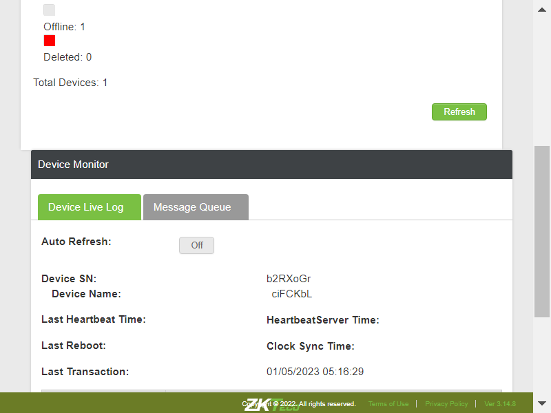TC_09: Verify whether User is able to Sync all the Employees to the clockcom.zkteco.cirrusdcs.stepDefinitions.CirrusDCS.i_initialize_drivers_for_DCS_automation()Driver InitializedGiven I visit CirrusDCS TenantLogin pageGiven I am in Tenant home pageWhen I perform mousehower on Device managerAnd I click on Device Setup sub moduleThen I click on new device buttonThen I enter the details and add the deviceThen I click on Yes buttonWhen I perform mousehower on Device managerAnd I click on Device datasync sub moduleThen I filter the devices by device sn and vaildate in device data sync pageThen I verify the selected device count is displayed properly in device data sync pageThen I sync all the Employee by selection in data sync pageThen I navigate to device monitor and validate the employee synccom.zkteco.cirrusdcs.stepDefinitions.CirrusDCS.teardown(io.cucumber.java.Scenario)TC_10: Verify whether User is able to Sync Time and Labor data to clockcom.zkteco.cirrusdcs.stepDefinitions.CirrusDCS.i_initialize_drivers_for_DCS_automation()Driver InitializedGiven I visit CirrusDCS TenantLogin pageGiven I am in Tenant home pageWhen I perform mousehower on Device managerAnd I click on Device Setup sub moduleThen I click on new device buttonThen I enter the details and add the deviceThen I click on Yes buttonWhen I perform mousehower on Device managerAnd I click on Device datasync sub moduleThen I filter the devices by device sn and vaildate in device data sync pageThen I verify the selected device count is displayed properly in device data sync pageThen I sync time and labor code to clock in data sync pageThen I navigate to device monitor and validate the employee synccom.zkteco.cirrusdcs.stepDefinitions.CirrusDCS.teardown(io.cucumber.java.Scenario)TC_11: Verify whether User is able to Sync Bio Attestation to clockcom.zkteco.cirrusdcs.stepDefinitions.CirrusDCS.i_initialize_drivers_for_DCS_automation()Driver InitializedGiven I visit CirrusDCS TenantLogin pageGiven I am in Tenant home pageWhen I perform mousehower on Device managerAnd I click on Device Setup sub moduleThen I click on new device buttonThen I enter the details and add the deviceThen I click on Yes buttonWhen I perform mousehower on Device managerAnd I click on Device datasync sub moduleThen I filter the devices by device sn and vaildate in device data sync pageThen I verify the selected device count is displayed properly in device data sync pageThen I sync finger bioattestation to clock in data sync pageThen I navigate to device monitor and validate the employee synccom.zkteco.cirrusdcs.stepDefinitions.CirrusDCS.teardown(io.cucumber.java.Scenario)TC_12: Verify whether User is able to Sync Face Attestation to clockcom.zkteco.cirrusdcs.stepDefinitions.CirrusDCS.i_initialize_drivers_for_DCS_automation()Driver InitializedGiven I visit CirrusDCS TenantLogin pageGiven I am in Tenant home pageWhen I perform mousehower on Device managerAnd I click on Device Setup sub moduleThen I click on new device buttonThen I enter the details and add the deviceThen I click on Yes buttonWhen I perform mousehower on Device managerAnd I click on Device datasync sub moduleThen I filter the devices by device sn and vaildate in device data sync pageThen I verify the selected device count is displayed properly in device data sync pageThen I sync face bioattestation to clock in data sync pageThen I navigate to device monitor and validate the employee synccom.zkteco.cirrusdcs.stepDefinitions.CirrusDCS.teardown(io.cucumber.java.Scenario)TC_13: Verify whether User is able to Sync General Attestation to clockcom.zkteco.cirrusdcs.stepDefinitions.CirrusDCS.i_initialize_drivers_for_DCS_automation()Driver InitializedGiven I visit CirrusDCS TenantLogin pageGiven I am in Tenant home pageWhen I perform mousehower on Device managerAnd I click on Device Setup sub moduleThen I click on new device buttonThen I enter the details and add the deviceThen I click on Yes buttonWhen I perform mousehower on Device managerAnd I click on Device datasync sub moduleThen I filter the devices by device sn and vaildate in device data sync pageThen I verify the selected device count is displayed properly in device data sync pageThen I sync general bioattestation to clock in data sync pageThen I navigate to device monitor and validate the employee synccom.zkteco.cirrusdcs.stepDefinitions.CirrusDCS.teardown(io.cucumber.java.Scenario)TC_14: Verify whether User is able to Sync Bell Schedule to clockcom.zkteco.cirrusdcs.stepDefinitions.CirrusDCS.i_initialize_drivers_for_DCS_automation()Driver InitializedGiven I visit CirrusDCS TenantLogin pageGiven I am in Tenant home pageWhen I perform mousehower on Device managerAnd I click on Device Setup sub moduleThen I click on new device buttonThen I enter the details and add the deviceThen I click on Yes buttonWhen I perform mousehower on Device managerAnd I click on Device datasync sub moduleThen I filter the devices by device sn and vaildate in device data sync pageThen I verify the selected device count is displayed properly in device data sync pageThen I sync bell schedule to clock in data sync pageThen I navigate to device monitor and validate the employee synccom.zkteco.cirrusdcs.stepDefinitions.CirrusDCS.teardown(io.cucumber.java.Scenario)TC_15: Verify whether User is able to delete the Bell Schedule in clockcom.zkteco.cirrusdcs.stepDefinitions.CirrusDCS.i_initialize_drivers_for_DCS_automation()Driver InitializedGiven I visit CirrusDCS TenantLogin pageGiven I am in Tenant home pageWhen I perform mousehower on Device managerAnd I click on Device Setup sub moduleThen I click on new device buttonThen I enter the details and add the deviceThen I click on Yes buttonWhen I perform mousehower on Device managerAnd I click on Device datasync sub moduleThen I filter the devices by device sn and vaildate in device data sync pageThen I verify the selected device count is displayed properly in device data sync pageThen I delete individual bell schedule in clock in data sync pageThen I navigate to device monitor and validate the employee synccom.zkteco.cirrusdcs.stepDefinitions.CirrusDCS.teardown(io.cucumber.java.Scenario)TC_16: Verify whether User is able to delete all the Bell Schedule in clockcom.zkteco.cirrusdcs.stepDefinitions.CirrusDCS.i_initialize_drivers_for_DCS_automation()Driver InitializedGiven I visit CirrusDCS TenantLogin pageGiven I am in Tenant home pageWhen I perform mousehower on Device managerAnd I click on Device Setup sub moduleThen I click on new device buttonThen I enter the details and add the deviceThen I click on Yes buttonWhen I perform mousehower on Device managerAnd I click on Device datasync sub moduleThen I filter the devices by device sn and vaildate in device data sync pageThen I verify the selected device count is displayed properly in device data sync pageThen I delete all bell schedule in clock in data sync pageThen I navigate to device monitor and validate the employee synccom.zkteco.cirrusdcs.stepDefinitions.CirrusDCS.teardown(io.cucumber.java.Scenario)TC_01: Verify whether User is able to navigate to Device Operations pagecom.zkteco.cirrusdcs.stepDefinitions.CirrusDCS.i_initialize_drivers_for_DCS_automation()Driver InitializedGiven I visit CirrusDCS TenantLogin pageGiven I am in Tenant home pageWhen I perform mousehower on Device managerAnd I click on Device Operations sub moduleThen I validate user navigation to device operations pageTC_02: Verify whether User is able to navigate to Device Operations pagecom.zkteco.cirrusdcs.stepDefinitions.CirrusDCS.i_initialize_drivers_for_DCS_automation()Driver InitializedGiven I visit CirrusDCS TenantLogin pageGiven I am in Tenant home pageWhen I perform mousehower on Device managerAnd I click on Device Operations sub moduleThen I validate user navigation to device operations pageTC_03: Verify whether User is able to navigate to Device Operations pagecom.zkteco.cirrusdcs.stepDefinitions.CirrusDCS.i_initialize_drivers_for_DCS_automation()Driver InitializedGiven I visit CirrusDCS TenantLogin pageGiven I am in Tenant home pageWhen I perform mousehower on Device managerAnd I click on Device Operations sub moduleThen I validate user navigation to device operations pageTC_04: Verify whether use is able to view below mentioned sections in Device Group pagecom.zkteco.cirrusdcs.stepDefinitions.CirrusDCS.i_initialize_drivers_for_DCS_automation()Driver InitializedGiven I visit CirrusDCS TenantLogin pageGiven I am in Tenant home pageWhen I perform mousehower on Device managerAnd I click on Device Operations sub moduleThen I validate the sections present in the device operations tenant pageTC_05: Verify whether User is able to view below mentioned components in Select Device sectioncom.zkteco.cirrusdcs.stepDefinitions.CirrusDCS.i_initialize_drivers_for_DCS_automation()Driver InitializedGiven I visit CirrusDCS TenantLogin pageGiven I am in Tenant home pageWhen I perform mousehower on Device managerAnd I click on Device Operations sub moduleThen I verify the components present in the select device section in device operations pageTC_06: Verify whether User is able to filter the devices by Device groupcom.zkteco.cirrusdcs.stepDefinitions.CirrusDCS.i_initialize_drivers_for_DCS_automation()Driver InitializedGiven I visit CirrusDCS TenantLogin pageGiven I am in Tenant home pageWhen I perform mousehower on Device managerAnd I click on Device Groups sub moduleThen I Click on New group buttonThen I enter all the details for creating device groupAnd I Click on save buttonThen I click on Yes buttonWhen I perform mousehower on Device managerAnd I click on Device Setup sub moduleThen I click on new device buttonThen I enter the details with group and add the deviceThen I click on Yes buttonStep skippedWhen I perform mousehower on Device managerStep skippedAnd I click on Device Operations sub moduleStep skippedThen I filter the devices by device group and vaildateStep skippedcom.zkteco.cirrusdcs.stepDefinitions.CirrusDCS.teardown(io.cucumber.java.Scenario)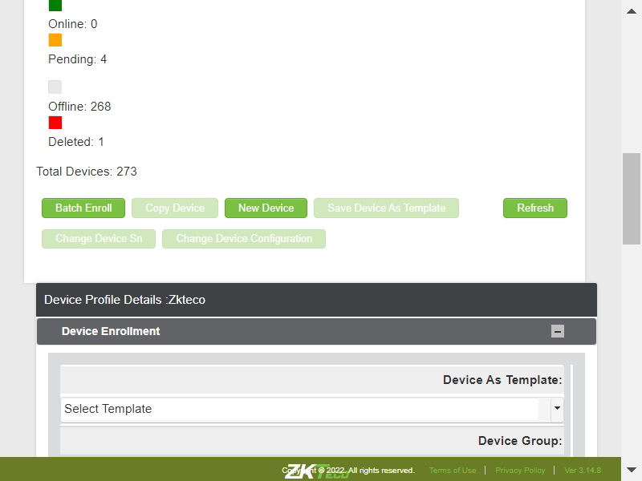TC_07: Verify whether User is able to filter the devices by Device SN/Namecom.zkteco.cirrusdcs.stepDefinitions.CirrusDCS.i_initialize_drivers_for_DCS_automation()Driver InitializedGiven I visit CirrusDCS TenantLogin pageGiven I am in Tenant home pageWhen I perform mousehower on Device managerAnd I click on Device Groups sub moduleThen I Click on New group buttonThen I enter all the details for creating device groupAnd I Click on save buttonThen I click on Yes buttonWhen I perform mousehower on Device managerAnd I click on Device Setup sub moduleThen I click on new device buttonThen I enter the details and add the deviceThen I click on Yes buttonWhen I perform mousehower on Device managerAnd I click on Device Operations sub moduleThen I filter the devices by device sn and vaildate in device data sync pageTC_08: Verify whether User is able to view the proper count of the device as per the device selectioncom.zkteco.cirrusdcs.stepDefinitions.CirrusDCS.i_initialize_drivers_for_DCS_automation()Driver InitializedGiven I visit CirrusDCS TenantLogin pageGiven I am in Tenant home pageWhen I perform mousehower on Device managerAnd I click on Device Setup sub moduleThen I click on new device buttonThen I enter the details and add the deviceThen I click on Yes buttonWhen I perform mousehower on Device managerAnd I click on Device Operations sub moduleThen I filter the devices by device sn and vaildate in device data sync pageThen I verify the selected device count is displayed properly in device data sync pageTC_09: Verify whether User is able to view the below mentioned device operations for Android devicecom.zkteco.cirrusdcs.stepDefinitions.CirrusDCS.i_initialize_drivers_for_DCS_automation()Driver InitializedGiven I visit CirrusDCS TenantLogin pageGiven I am in Tenant home pageWhen I perform mousehower on Device managerAnd I click on Device Setup sub moduleThen I click on new device buttonThen I enter the details and add the deviceThen I click on Yes buttonWhen I perform mousehower on Device managerAnd I click on Device Operations sub moduleThen I filter the devices by device sn and vaildate in device data sync pageThen I verify the selected device count is displayed properly in device data sync pageThen I verify all the device operations are present for Android deviceTC_10: Verify whether User is able to view the below mentioned device operations for Linux devicecom.zkteco.cirrusdcs.stepDefinitions.CirrusDCS.i_initialize_drivers_for_DCS_automation()Driver InitializedGiven I visit CirrusDCS TenantLogin pageGiven I am in Tenant home pageWhen I perform mousehower on Device managerAnd I click on Device Setup sub moduleThen I click on new device buttonThen I enter the details and add the linux deviceThen I click on Yes buttonWhen I perform mousehower on Device managerAnd I click on Device Operations sub moduleThen I filter the devices by device sn and vaildate in device data sync pageThen I verify the selected device count is displayed properly in device data sync pageThen I verify all the device operations are present for Linux deviceTC_11: Verify whether User is able to BroadCast public message to clock,when this operation is performedcom.zkteco.cirrusdcs.stepDefinitions.CirrusDCS.i_initialize_drivers_for_DCS_automation()Driver InitializedGiven I visit CirrusDCS TenantLogin pageGiven I am in Tenant home pageWhen I perform mousehower on Device managerAnd I click on Device Setup sub moduleThen I click on new device buttonThen I enter the details and add the deviceThen I click on Yes buttonWhen I perform mousehower on Device managerAnd I click on Device Operations sub moduleThen I filter the devices by device sn and vaildate in device data sync pageThen I verify the selected device count is displayed properly in device data sync pageThen I broadcast public message to clockThen I navigate to device monitor and validate the employee synccom.zkteco.cirrusdcs.stepDefinitions.CirrusDCS.teardown(io.cucumber.java.Scenario)TC_12: Verify whether User is able to load device configuration from devicecom.zkteco.cirrusdcs.stepDefinitions.CirrusDCS.i_initialize_drivers_for_DCS_automation()Driver InitializedGiven I visit CirrusDCS TenantLogin pageGiven I am in Tenant home pageWhen I perform mousehower on Device managerAnd I click on Device Setup sub moduleThen I click on new device buttonThen I enter the details and add the deviceThen I click on Yes buttonWhen I perform mousehower on Device managerAnd I click on Device Operations sub moduleThen I filter the devices by device sn and vaildate in device data sync pageThen I verify the selected device count is displayed properly in device data sync pageThen I Load configuration from deviceThen I navigate to device monitor and validate the employee synccom.zkteco.cirrusdcs.stepDefinitions.CirrusDCS.teardown(io.cucumber.java.Scenario)TC_12: Verify whether User is able to load device configuration from devicecom.zkteco.cirrusdcs.stepDefinitions.CirrusDCS.i_initialize_drivers_for_DCS_automation()Driver InitializedGiven I visit CirrusDCS TenantLogin pageGiven I am in Tenant home pageWhen I perform mousehower on Device managerAnd I click on Device Setup sub moduleThen I click on new device buttonThen I enter the details and add the deviceThen I click on Yes buttonWhen I perform mousehower on Device managerAnd I click on Device Operations sub moduleThen I filter the devices by device sn and vaildate in device data sync pageThen I verify the selected device count is displayed properly in device data sync pageThen I Load configuration from deviceThen I navigate to device monitor and validate the employee synccom.zkteco.cirrusdcs.stepDefinitions.CirrusDCS.teardown(io.cucumber.java.Scenario)TC_13: Verify whether User is able to Perform Load Attendance data by Date device operationcom.zkteco.cirrusdcs.stepDefinitions.CirrusDCS.i_initialize_drivers_for_DCS_automation()Driver InitializedGiven I visit CirrusDCS TenantLogin pageGiven I am in Tenant home pageWhen I perform mousehower on Device managerAnd I click on Device Setup sub moduleThen I click on new device buttonThen I enter the details and add the deviceThen I click on Yes buttonWhen I perform mousehower on Device managerAnd I click on Device Operations sub moduleThen I filter the devices by device sn and vaildate in device data sync pageThen I verify the selected device count is displayed properly in device data sync pageThen I Load Attendance Data by Date and validateThen I navigate to device monitor and validate the employee synccom.zkteco.cirrusdcs.stepDefinitions.CirrusDCS.teardown(io.cucumber.java.Scenario)TC_14: Verify whether User is able to Perform Resubmit Offline Attendance Data Device Operation.com.zkteco.cirrusdcs.stepDefinitions.CirrusDCS.i_initialize_drivers_for_DCS_automation()Driver InitializedGiven I visit CirrusDCS TenantLogin pageGiven I am in Tenant home pageWhen I perform mousehower on Device managerAnd I click on Device Setup sub moduleThen I click on new device buttonThen I enter the details and add the deviceThen I click on Yes buttonWhen I perform mousehower on Device managerAnd I click on Device Operations sub moduleThen I filter the devices by device sn and vaildate in device data sync pageThen I verify the selected device count is displayed properly in device data sync pageThen I Resubmit offline attendance data from clockThen I navigate to device monitor and validate the employee synccom.zkteco.cirrusdcs.stepDefinitions.CirrusDCS.teardown(io.cucumber.java.Scenario)TC_15: Verify whether User is able to load enrolled employee list from clockcom.zkteco.cirrusdcs.stepDefinitions.CirrusDCS.i_initialize_drivers_for_DCS_automation()Driver InitializedGiven I visit CirrusDCS TenantLogin pageGiven I am in Tenant home pageWhen I perform mousehower on Device managerAnd I click on Device Setup sub moduleThen I click on new device buttonThen I enter the details and add the deviceThen I click on Yes buttonWhen I perform mousehower on Device managerAnd I click on Device Operations sub moduleThen I filter the devices by device sn and vaildate in device data sync pageThen I verify the selected device count is displayed properly in device data sync pageThen I load enrolled employee list from clockThen I navigate to device monitor and validate the employee synccom.zkteco.cirrusdcs.stepDefinitions.CirrusDCS.teardown(io.cucumber.java.Scenario)TC_16: Verify whether User is able to perform view the employee data by employee no device operationcom.zkteco.cirrusdcs.stepDefinitions.CirrusDCS.i_initialize_drivers_for_DCS_automation()Driver InitializedGiven I visit CirrusDCS TenantLogin pageGiven I am in Tenant home pageWhen I perform mousehower on Device managerAnd I click on Device Setup sub moduleThen I click on new device buttonThen I enter the details and add the deviceThen I click on Yes buttonWhen I perform mousehower on Device managerAnd I click on Device Operations sub moduleThen I filter the devices by device sn and vaildate in device data sync pageThen I verify the selected device count is displayed properly in device data sync pageThen I view the employee data by employee no from clockThen I navigate to device monitor and validate the employee synccom.zkteco.cirrusdcs.stepDefinitions.CirrusDCS.teardown(io.cucumber.java.Scenario)TC_17: Verify whether User is able to perfrom View Clock Time & Labor Code device operationcom.zkteco.cirrusdcs.stepDefinitions.CirrusDCS.i_initialize_drivers_for_DCS_automation()Driver InitializedGiven I visit CirrusDCS TenantLogin pageGiven I am in Tenant home pageWhen I perform mousehower on Device managerAnd I click on Device Setup sub moduleThen I click on new device buttonThen I enter the details and add the deviceThen I click on Yes buttonWhen I perform mousehower on Device managerAnd I click on Device Operations sub moduleThen I filter the devices by device sn and vaildate in device data sync pageThen I verify the selected device count is displayed properly in device data sync pageThen I view the employee data by employee no from clockThen I navigate to device monitor and validate the employee synccom.zkteco.cirrusdcs.stepDefinitions.CirrusDCS.teardown(io.cucumber.java.Scenario)TC_18: Verify whether User is able to perfrom overide clock schedule lockout device operationcom.zkteco.cirrusdcs.stepDefinitions.CirrusDCS.i_initialize_drivers_for_DCS_automation()Driver InitializedGiven I visit CirrusDCS TenantLogin pageGiven I am in Tenant home pageWhen I perform mousehower on Device managerAnd I click on Device Setup sub moduleThen I click on new device buttonThen I enter the details and add the deviceThen I click on Yes buttonWhen I perform mousehower on Device managerAnd I click on Device Operations sub moduleThen I filter the devices by device sn and vaildate in device data sync pageThen I verify the selected device count is displayed properly in device data sync pageThen I perform override clock schedule lockout device operationThen I navigate to device monitor and validate the employee synccom.zkteco.cirrusdcs.stepDefinitions.CirrusDCS.teardown(io.cucumber.java.Scenario)TC_19: Verify whether User is able to send command to device using command line windowcom.zkteco.cirrusdcs.stepDefinitions.CirrusDCS.i_initialize_drivers_for_DCS_automation()Driver InitializedGiven I visit CirrusDCS TenantLogin pageGiven I am in Tenant home pageWhen I perform mousehower on Device managerAnd I click on Device Setup sub moduleThen I click on new device buttonThen I enter the details and add the deviceThen I click on Yes buttonWhen I perform mousehower on Device managerAnd I click on Device Operations sub moduleThen I filter the devices by device sn and vaildate in device data sync pageThen I verify the selected device count is displayed properly in device data sync pageThen I send command through command line window in tenantThen I navigate to device monitor and validate the employee synccom.zkteco.cirrusdcs.stepDefinitions.CirrusDCS.teardown(io.cucumber.java.Scenario)TC_20: Verify whether User is able to send command to device using command line windowcom.zkteco.cirrusdcs.stepDefinitions.CirrusDCS.i_initialize_drivers_for_DCS_automation()Driver InitializedGiven I visit CirrusDCS TenantLogin pageGiven I am in Tenant home pageWhen I perform mousehower on Device managerAnd I click on Device Setup sub moduleThen I click on new device buttonThen I enter the details and add the deviceThen I click on Yes buttonWhen I perform mousehower on Device managerAnd I click on Device Operations sub moduleThen I filter the devices by device sn and vaildate in device data sync pageThen I verify the selected device count is displayed properly in device data sync pageThen I send command through command line window in tenantThen I clean all pending commands present in message queue and validatecom.zkteco.cirrusdcs.stepDefinitions.CirrusDCS.teardown(io.cucumber.java.Scenario)TC_21: Verify whether User is able to clean all the device storage and validatecom.zkteco.cirrusdcs.stepDefinitions.CirrusDCS.i_initialize_drivers_for_DCS_automation()Driver InitializedGiven I visit CirrusDCS TenantLogin pageGiven I am in Tenant home pageWhen I perform mousehower on Device managerAnd I click on Device Setup sub moduleThen I click on new device buttonThen I enter the details and add the deviceThen I click on Yes buttonWhen I perform mousehower on Device managerAnd I click on Device Operations sub moduleThen I filter the devices by device sn and vaildate in device data sync pageThen I verify the selected device count is displayed properly in device data sync pageThen I clean all the device storageThen I navigate to device monitor and validate the message queue countcom.zkteco.cirrusdcs.stepDefinitions.CirrusDCS.teardown(io.cucumber.java.Scenario)TC_01: Verify whether user is able to navigate to device monitor pagecom.zkteco.cirrusdcs.stepDefinitions.CirrusDCS.i_initialize_drivers_for_DCS_automation()Driver InitializedGiven I visit CirrusDCS TenantLogin pageGiven I am in Tenant home pageWhen I perform mousehower on Device managerAnd I click on Device Monitor sub moduleThen I validate user navigation to device monitor pageTC_02: Verify whether user is able to view below mentioned sections in device operations pagecom.zkteco.cirrusdcs.stepDefinitions.CirrusDCS.i_initialize_drivers_for_DCS_automation()Driver InitializedGiven I visit CirrusDCS TenantLogin pageGiven I am in Tenant home pageWhen I perform mousehower on Device managerAnd I click on Device Monitor sub moduleThen I validate the sections present in the device monitor pageTC_03: Verify whether user is able to view below mentioned components and table in Device List Sectioncom.zkteco.cirrusdcs.stepDefinitions.CirrusDCS.i_initialize_drivers_for_DCS_automation()Driver InitializedGiven I visit CirrusDCS TenantLogin pageGiven I am in Tenant home pageWhen I perform mousehower on Device managerAnd I click on Device Monitor sub moduleThen I validate the components present in the device list sectionTC_04: Verify whether user is able to view the List of all devices, that are added irrespective of tenants in Device List Sectioncom.zkteco.cirrusdcs.stepDefinitions.CirrusDCS.i_initialize_drivers_for_DCS_automation()Driver InitializedGiven I visit CirrusDCS TenantLogin pageGiven I am in Tenant home pageWhen I perform mousehower on Device managerAnd I click on Device Monitor sub moduleThen I validate whether all the devices are presentTC_05: Verify whether user is able to view the List of all devices, that are added irrespective of tenants in Device List Sectioncom.zkteco.cirrusdcs.stepDefinitions.CirrusDCS.i_initialize_drivers_for_DCS_automation()Driver InitializedGiven I visit CirrusDCS TenantLogin pageGiven I am in Tenant home pageWhen I perform mousehower on Device managerAnd I click on Device Monitor sub moduleThen I validate whether all the devices are presentTC_06: Verify whether user is able to search the device based on tenant name search criteriacom.zkteco.cirrusdcs.stepDefinitions.CirrusDCS.i_initialize_drivers_for_DCS_automation()Driver InitializedGiven I visit CirrusDCS TenantLogin pageGiven I am in Tenant home pageWhen I perform mousehower on Device managerAnd I click on Device Monitor sub moduleThen I enter tenant name into search fieldThen I click on Search IconThen I validate the search resultsTC_07: Verify whether user is able to search the device based on device sn search criteriacom.zkteco.cirrusdcs.stepDefinitions.CirrusDCS.i_initialize_drivers_for_DCS_automation()Driver InitializedGiven I visit CirrusDCS TenantLogin pageGiven I am in Tenant home pageWhen I perform mousehower on Device managerAnd I click on Device Monitor sub moduleThen I enter devicesn into search fieldThen I click on Search IconThen I validate the search resultsTC_08: Verify whether user is able to search the device based on device name search criteriacom.zkteco.cirrusdcs.stepDefinitions.CirrusDCS.i_initialize_drivers_for_DCS_automation()Driver InitializedGiven I visit CirrusDCS TenantLogin pageGiven I am in Tenant home pageWhen I perform mousehower on Device managerAnd I click on Device Monitor sub moduleThen I enter devicename into search fieldThen I click on Search IconThen I validate the search resultsTC_09: Verify whether user is able to view the below mentioned columns, after searching the devicecom.zkteco.cirrusdcs.stepDefinitions.CirrusDCS.i_initialize_drivers_for_DCS_automation()Driver InitializedGiven I visit CirrusDCS TenantLogin pageGiven I am in Tenant home pageWhen I perform mousehower on Device managerAnd I click on Device Monitor sub moduleThen I enter devicename into search fieldThen I click on Search IconThen I validate columns after search resultsTC_10: Verify whether user is able to Filter the data for online device statuscom.zkteco.cirrusdcs.stepDefinitions.CirrusDCS.i_initialize_drivers_for_DCS_automation()Driver InitializedGiven I visit CirrusDCS TenantLogin pageGiven I am in Tenant home pageWhen I perform mousehower on Device managerAnd I click on Device Monitor sub moduleThen I click on online status check boxThen I click on Search IconThen I validate whether all the devices present based on the device statusTC_11: Verify whether user is able to Filter the data for offline device statuscom.zkteco.cirrusdcs.stepDefinitions.CirrusDCS.i_initialize_drivers_for_DCS_automation()Driver InitializedGiven I visit CirrusDCS TenantLogin pageGiven I am in Tenant home pageWhen I perform mousehower on Device managerAnd I click on Device Monitor sub moduleThen I click on pending status check boxThen I click on Search IconThen I validate whether all the devices present based on the device statusTC_12: Verify whether user is able to Filter the data for offline device statuscom.zkteco.cirrusdcs.stepDefinitions.CirrusDCS.i_initialize_drivers_for_DCS_automation()Driver InitializedGiven I visit CirrusDCS TenantLogin pageGiven I am in Tenant home pageWhen I perform mousehower on Device managerAnd I click on Device Monitor sub moduleThen I click on offline status check boxThen I click on Search IconThen I validate whether all the devices present based on the device statusTC_13: Verify whether user is able to Filter the data for deleted device statuscom.zkteco.cirrusdcs.stepDefinitions.CirrusDCS.i_initialize_drivers_for_DCS_automation()Driver InitializedGiven I visit CirrusDCS TenantLogin pageGiven I am in Tenant home pageWhen I perform mousehower on Device managerAnd I click on Device Monitor sub moduleThen I click on deleted status check boxThen I click on Search IconThen I validate whether all the devices present based on the device statusTC_14: Verify whether user is able to Filter the data for all device statuscom.zkteco.cirrusdcs.stepDefinitions.CirrusDCS.i_initialize_drivers_for_DCS_automation()Driver InitializedGiven I visit CirrusDCS TenantLogin pageGiven I am in Tenant home pageWhen I perform mousehower on Device managerAnd I click on Device Monitor sub moduleThen I click on all status check boxThen I click on Search IconThen I validate whether all the devices present based on all the device statusTC_15: Verify whether user is able to view below mentioned components and table Componentscom.zkteco.cirrusdcs.stepDefinitions.CirrusDCS.i_initialize_drivers_for_DCS_automation()Driver InitializedGiven I visit CirrusDCS TenantLogin pageGiven I am in Tenant home pageWhen I perform mousehower on Device managerAnd I click on Device Monitor sub moduleThen I validate the sections present in the device monitor pageTC_16: Verify whether user is able to view below mentioned components and table in Device Live Log tab Componentscom.zkteco.cirrusdcs.stepDefinitions.CirrusDCS.i_initialize_drivers_for_DCS_automation()Driver InitializedGiven I visit CirrusDCS TenantLogin pageGiven I am in Tenant home pageWhen I perform mousehower on Device managerAnd I click on Device Monitor sub moduleThen I validate the components present in the device live log tabTC_17: Verify whether Respective device details are getting auto populated, when device is selectedcom.zkteco.cirrusdcs.stepDefinitions.CirrusDCS.i_initialize_drivers_for_DCS_automation()Driver InitializedGiven I visit CirrusDCS TenantLogin pageGiven I am in Tenant home pageWhen I perform mousehower on Device managerAnd I click on Device Monitor sub moduleThen I enter devicesn into search fieldThen I click on Search IconThen I validate data auto autopopulation based on the selected device in device live log tabTC_18: Verify whether user is able to Auto Refresh the Page, when Auto Refresh switch is oncom.zkteco.cirrusdcs.stepDefinitions.CirrusDCS.i_initialize_drivers_for_DCS_automation()Driver InitializedGiven I visit CirrusDCS TenantLogin pageGiven I am in Tenant home pageWhen I perform mousehower on Device managerAnd I click on Device Monitor sub moduleThen I enter devicesn into search fieldThen I click on Search IconThen I verify auto refresh functionality is workingTC_19: Verify whether user is able to Refresh the Page, on click of Refresh buttoncom.zkteco.cirrusdcs.stepDefinitions.CirrusDCS.i_initialize_drivers_for_DCS_automation()Driver InitializedGiven I visit CirrusDCS TenantLogin pageGiven I am in Tenant home pageWhen I perform mousehower on Device managerAnd I click on Device Monitor sub moduleThen I enter devicesn into search fieldThen I click on Search IconThen I click on Refresh button and I validate the page refreshTC_20: Verify whether user is able to view below mentioned components and table in Message Queue tab Componentscom.zkteco.cirrusdcs.stepDefinitions.CirrusDCS.i_initialize_drivers_for_DCS_automation()Driver InitializedGiven I visit CirrusDCS TenantLogin pageGiven I am in Tenant home pageWhen I perform mousehower on Device managerAnd I click on Device Setup sub moduleThen I click on new device buttonThen I enter the details and add the deviceThen I click on Yes buttonAnd I click on Device Monitor sub moduleThen I enter devicesn into search fieldThen I click on Search IconThen I select the searched deviceThen I click on Message Queue tabThen I validate the components & columns present in the message queue tab in tenantTC_21: Verify whether Respective device details are getting auto populated, when device is selectedcom.zkteco.cirrusdcs.stepDefinitions.CirrusDCS.i_initialize_drivers_for_DCS_automation()Driver InitializedGiven I visit CirrusDCS TenantLogin pageGiven I am in Tenant home pageWhen I perform mousehower on Device managerAnd I click on Device Setup sub moduleThen I click on new device buttonThen I enter the details and add the deviceThen I click on Yes buttonAnd I click on Device Monitor sub moduleThen I enter devicesn into search fieldThen I click on Search IconThen I select the searched deviceThen I click on Message Queue tabThen I validate data auto autopopulation based on the selected device in device live log tabcom.zkteco.cirrusdcs.stepDefinitions.CirrusDCS.teardown(io.cucumber.java.Scenario)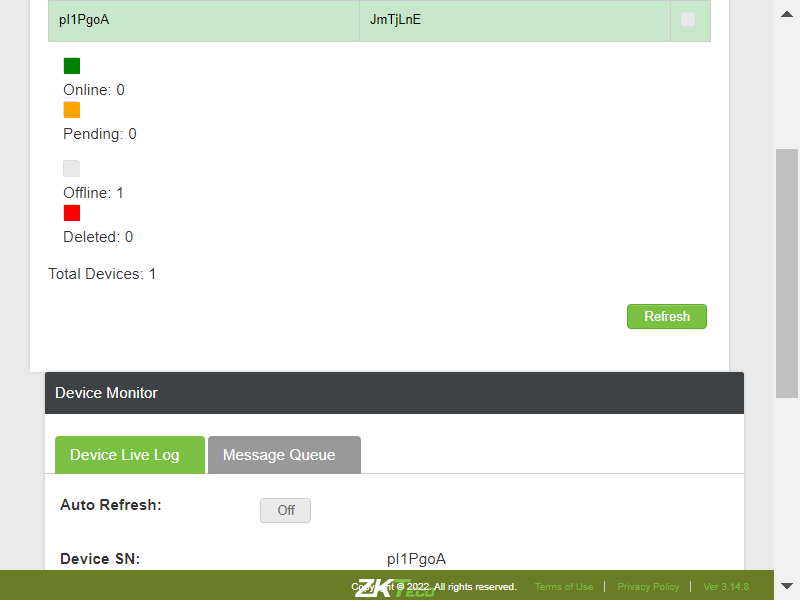TC_27: Verify whether user is able to clean all the commands in the message queue page , on click of Clean Command buttoncom.zkteco.cirrusdcs.stepDefinitions.CirrusDCS.i_initialize_drivers_for_DCS_automation()Driver InitializedGiven I visit CirrusDCS TenantLogin pageGiven I am in Tenant home pageWhen I perform mousehower on Device managerAnd I click on Device Setup sub moduleThen I click on new device buttonThen I enter the details and add the deviceThen I click on Yes buttonAnd I click on Device Monitor sub moduleThen I enter devicesn into search fieldThen I click on Search IconThen I select the searched deviceThen I click on Message Queue tabThen I click on clean commands button and validate the results
TC_05: Verify whether User is able to filter the devices by Device SN/Namecom.zkteco.cirrusdcs.stepDefinitions.CirrusDCS.i_initialize_drivers_for_DCS_automation()Driver InitializedGiven I visit CirrusDCS TenantLogin pageGiven I am in Tenant home pageWhen I perform mousehower on Device managerAnd I click on Device Groups sub moduleThen I Click on New group buttonThen I enter all the details for creating device groupAnd I Click on save buttonThen I click on Yes buttonWhen I perform mousehower on Device managerAnd I click on Device Setup sub moduleThen I click on new device buttonThen I enter the details and add the deviceThen I click on Yes buttonWhen I perform mousehower on Device managerAnd I click on Device datasync sub moduleThen I filter the devices by device sn and vaildate in device data sync pageTC_06: Verify whether User is able to view the proper count of the device as per the device selectioncom.zkteco.cirrusdcs.stepDefinitions.CirrusDCS.i_initialize_drivers_for_DCS_automation()Driver InitializedGiven I visit CirrusDCS TenantLogin pageGiven I am in Tenant home pageWhen I perform mousehower on Device managerAnd I click on Device datasync sub moduleThen I verify the selected device count is displayed properly in device data sync pageTC_07: Verify whether User is able to view below mentioned tabs in Sync Data Sectioncom.zkteco.cirrusdcs.stepDefinitions.CirrusDCS.i_initialize_drivers_for_DCS_automation()Driver InitializedGiven I visit CirrusDCS TenantLogin pageGiven I am in Tenant home pageWhen I perform mousehower on Device managerAnd I click on Device datasync sub moduleThen I verfiy all the tabs in sync data sectionTC_08: Verify whether User is able to Sync the Selected Employees to the clockcom.zkteco.cirrusdcs.stepDefinitions.CirrusDCS.i_initialize_drivers_for_DCS_automation()Driver InitializedGiven I visit CirrusDCS TenantLogin pageGiven I am in Tenant home pageWhen I perform mousehower on Device managerAnd I click on Device Setup sub moduleThen I click on new device buttonThen I enter the details and add the deviceThen I click on Yes buttonWhen I perform mousehower on Device managerAnd I click on Device datasync sub moduleThen I filter the devices by device sn and vaildate in device data sync pageThen I verify the selected device count is displayed properly in device data sync pageThen I sync the Employee by selection in data sync pageThen I navigate to device monitor and validate the employee synccom.zkteco.cirrusdcs.stepDefinitions.CirrusDCS.teardown(io.cucumber.java.Scenario)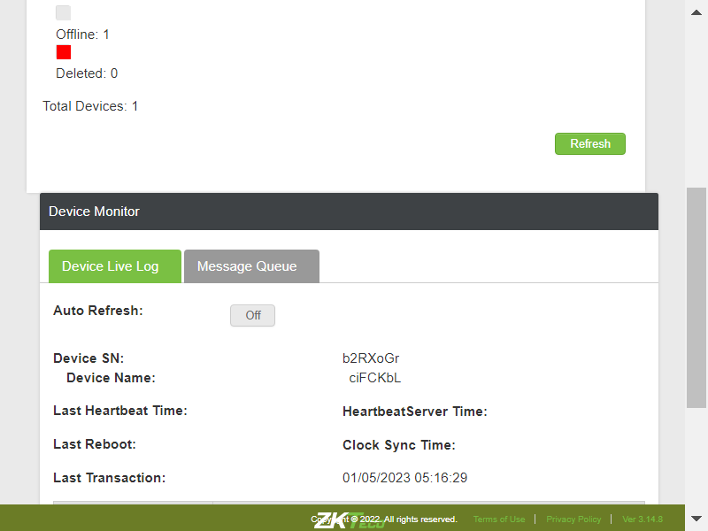TC_09: Verify whether User is able to Sync all the Employees to the clockcom.zkteco.cirrusdcs.stepDefinitions.CirrusDCS.i_initialize_drivers_for_DCS_automation()Driver InitializedGiven I visit CirrusDCS TenantLogin pageGiven I am in Tenant home pageWhen I perform mousehower on Device managerAnd I click on Device Setup sub moduleThen I click on new device buttonThen I enter the details and add the deviceThen I click on Yes buttonWhen I perform mousehower on Device managerAnd I click on Device datasync sub moduleThen I filter the devices by device sn and vaildate in device data sync pageThen I verify the selected device count is displayed properly in device data sync pageThen I sync all the Employee by selection in data sync pageThen I navigate to device monitor and validate the employee synccom.zkteco.cirrusdcs.stepDefinitions.CirrusDCS.teardown(io.cucumber.java.Scenario)TC_10: Verify whether User is able to Sync Time and Labor data to clockcom.zkteco.cirrusdcs.stepDefinitions.CirrusDCS.i_initialize_drivers_for_DCS_automation()Driver InitializedGiven I visit CirrusDCS TenantLogin pageGiven I am in Tenant home pageWhen I perform mousehower on Device managerAnd I click on Device Setup sub moduleThen I click on new device buttonThen I enter the details and add the deviceThen I click on Yes buttonWhen I perform mousehower on Device managerAnd I click on Device datasync sub moduleThen I filter the devices by device sn and vaildate in device data sync pageThen I verify the selected device count is displayed properly in device data sync pageThen I sync time and labor code to clock in data sync pageThen I navigate to device monitor and validate the employee synccom.zkteco.cirrusdcs.stepDefinitions.CirrusDCS.teardown(io.cucumber.java.Scenario)TC_11: Verify whether User is able to Sync Bio Attestation to clockcom.zkteco.cirrusdcs.stepDefinitions.CirrusDCS.i_initialize_drivers_for_DCS_automation()Driver InitializedGiven I visit CirrusDCS TenantLogin pageGiven I am in Tenant home pageWhen I perform mousehower on Device managerAnd I click on Device Setup sub moduleThen I click on new device buttonThen I enter the details and add the deviceThen I click on Yes buttonWhen I perform mousehower on Device managerAnd I click on Device datasync sub moduleThen I filter the devices by device sn and vaildate in device data sync pageThen I verify the selected device count is displayed properly in device data sync pageThen I sync finger bioattestation to clock in data sync pageThen I navigate to device monitor and validate the employee synccom.zkteco.cirrusdcs.stepDefinitions.CirrusDCS.teardown(io.cucumber.java.Scenario)TC_12: Verify whether User is able to Sync Face Attestation to clockcom.zkteco.cirrusdcs.stepDefinitions.CirrusDCS.i_initialize_drivers_for_DCS_automation()Driver InitializedGiven I visit CirrusDCS TenantLogin pageGiven I am in Tenant home pageWhen I perform mousehower on Device managerAnd I click on Device Setup sub moduleThen I click on new device buttonThen I enter the details and add the deviceThen I click on Yes buttonWhen I perform mousehower on Device managerAnd I click on Device datasync sub moduleThen I filter the devices by device sn and vaildate in device data sync pageThen I verify the selected device count is displayed properly in device data sync pageThen I sync face bioattestation to clock in data sync pageThen I navigate to device monitor and validate the employee synccom.zkteco.cirrusdcs.stepDefinitions.CirrusDCS.teardown(io.cucumber.java.Scenario)TC_13: Verify whether User is able to Sync General Attestation to clockcom.zkteco.cirrusdcs.stepDefinitions.CirrusDCS.i_initialize_drivers_for_DCS_automation()Driver InitializedGiven I visit CirrusDCS TenantLogin pageGiven I am in Tenant home pageWhen I perform mousehower on Device managerAnd I click on Device Setup sub moduleThen I click on new device buttonThen I enter the details and add the deviceThen I click on Yes buttonWhen I perform mousehower on Device managerAnd I click on Device datasync sub moduleThen I filter the devices by device sn and vaildate in device data sync pageThen I verify the selected device count is displayed properly in device data sync pageThen I sync general bioattestation to clock in data sync pageThen I navigate to device monitor and validate the employee synccom.zkteco.cirrusdcs.stepDefinitions.CirrusDCS.teardown(io.cucumber.java.Scenario)TC_14: Verify whether User is able to Sync Bell Schedule to clockcom.zkteco.cirrusdcs.stepDefinitions.CirrusDCS.i_initialize_drivers_for_DCS_automation()Driver InitializedGiven I visit CirrusDCS TenantLogin pageGiven I am in Tenant home pageWhen I perform mousehower on Device managerAnd I click on Device Setup sub moduleThen I click on new device buttonThen I enter the details and add the deviceThen I click on Yes buttonWhen I perform mousehower on Device managerAnd I click on Device datasync sub moduleThen I filter the devices by device sn and vaildate in device data sync pageThen I verify the selected device count is displayed properly in device data sync pageThen I sync bell schedule to clock in data sync pageThen I navigate to device monitor and validate the employee synccom.zkteco.cirrusdcs.stepDefinitions.CirrusDCS.teardown(io.cucumber.java.Scenario)TC_15: Verify whether User is able to delete the Bell Schedule in clockcom.zkteco.cirrusdcs.stepDefinitions.CirrusDCS.i_initialize_drivers_for_DCS_automation()Driver InitializedGiven I visit CirrusDCS TenantLogin pageGiven I am in Tenant home pageWhen I perform mousehower on Device managerAnd I click on Device Setup sub moduleThen I click on new device buttonThen I enter the details and add the deviceThen I click on Yes buttonWhen I perform mousehower on Device managerAnd I click on Device datasync sub moduleThen I filter the devices by device sn and vaildate in device data sync pageThen I verify the selected device count is displayed properly in device data sync pageThen I delete individual bell schedule in clock in data sync pageThen I navigate to device monitor and validate the employee synccom.zkteco.cirrusdcs.stepDefinitions.CirrusDCS.teardown(io.cucumber.java.Scenario)TC_16: Verify whether User is able to delete all the Bell Schedule in clockcom.zkteco.cirrusdcs.stepDefinitions.CirrusDCS.i_initialize_drivers_for_DCS_automation()Driver InitializedGiven I visit CirrusDCS TenantLogin pageGiven I am in Tenant home pageWhen I perform mousehower on Device managerAnd I click on Device Setup sub moduleThen I click on new device buttonThen I enter the details and add the deviceThen I click on Yes buttonWhen I perform mousehower on Device managerAnd I click on Device datasync sub moduleThen I filter the devices by device sn and vaildate in device data sync pageThen I verify the selected device count is displayed properly in device data sync pageThen I delete all bell schedule in clock in data sync pageThen I navigate to device monitor and validate the employee synccom.zkteco.cirrusdcs.stepDefinitions.CirrusDCS.teardown(io.cucumber.java.Scenario)TC_01: Verify whether User is able to navigate to Device Operations pagecom.zkteco.cirrusdcs.stepDefinitions.CirrusDCS.i_initialize_drivers_for_DCS_automation()Driver InitializedGiven I visit CirrusDCS TenantLogin pageGiven I am in Tenant home pageWhen I perform mousehower on Device managerAnd I click on Device Operations sub moduleThen I validate user navigation to device operations pageTC_02: Verify whether User is able to navigate to Device Operations pagecom.zkteco.cirrusdcs.stepDefinitions.CirrusDCS.i_initialize_drivers_for_DCS_automation()Driver InitializedGiven I visit CirrusDCS TenantLogin pageGiven I am in Tenant home pageWhen I perform mousehower on Device managerAnd I click on Device Operations sub moduleThen I validate user navigation to device operations pageTC_03: Verify whether User is able to navigate to Device Operations pagecom.zkteco.cirrusdcs.stepDefinitions.CirrusDCS.i_initialize_drivers_for_DCS_automation()Driver InitializedGiven I visit CirrusDCS TenantLogin pageGiven I am in Tenant home pageWhen I perform mousehower on Device managerAnd I click on Device Operations sub moduleThen I validate user navigation to device operations pageTC_04: Verify whether use is able to view below mentioned sections in Device Group pagecom.zkteco.cirrusdcs.stepDefinitions.CirrusDCS.i_initialize_drivers_for_DCS_automation()Driver InitializedGiven I visit CirrusDCS TenantLogin pageGiven I am in Tenant home pageWhen I perform mousehower on Device managerAnd I click on Device Operations sub moduleThen I validate the sections present in the device operations tenant pageTC_05: Verify whether User is able to view below mentioned components in Select Device sectioncom.zkteco.cirrusdcs.stepDefinitions.CirrusDCS.i_initialize_drivers_for_DCS_automation()Driver InitializedGiven I visit CirrusDCS TenantLogin pageGiven I am in Tenant home pageWhen I perform mousehower on Device managerAnd I click on Device Operations sub moduleThen I verify the components present in the select device section in device operations pageTC_06: Verify whether User is able to filter the devices by Device groupcom.zkteco.cirrusdcs.stepDefinitions.CirrusDCS.i_initialize_drivers_for_DCS_automation()Driver InitializedGiven I visit CirrusDCS TenantLogin pageGiven I am in Tenant home pageWhen I perform mousehower on Device managerAnd I click on Device Groups sub moduleThen I Click on New group buttonThen I enter all the details for creating device groupAnd I Click on save buttonThen I click on Yes buttonWhen I perform mousehower on Device managerAnd I click on Device Setup sub moduleThen I click on new device buttonThen I enter the details with group and add the deviceThen I click on Yes buttonStep skippedWhen I perform mousehower on Device managerStep skippedAnd I click on Device Operations sub moduleStep skippedThen I filter the devices by device group and vaildateStep skippedcom.zkteco.cirrusdcs.stepDefinitions.CirrusDCS.teardown(io.cucumber.java.Scenario)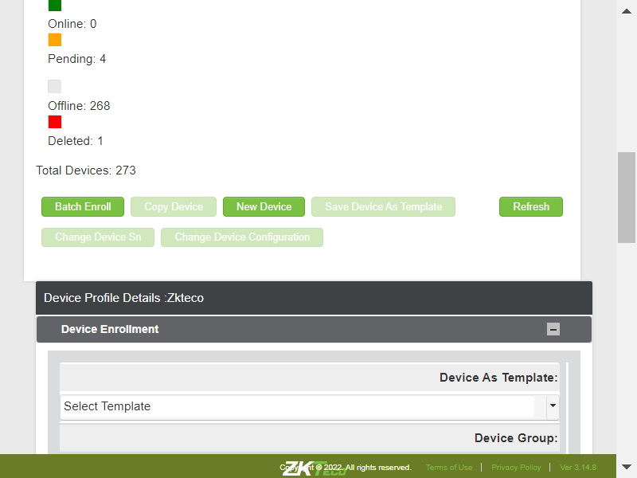TC_07: Verify whether User is able to filter the devices by Device SN/Namecom.zkteco.cirrusdcs.stepDefinitions.CirrusDCS.i_initialize_drivers_for_DCS_automation()Driver InitializedGiven I visit CirrusDCS TenantLogin pageGiven I am in Tenant home pageWhen I perform mousehower on Device managerAnd I click on Device Groups sub moduleThen I Click on New group buttonThen I enter all the details for creating device groupAnd I Click on save buttonThen I click on Yes buttonWhen I perform mousehower on Device managerAnd I click on Device Setup sub moduleThen I click on new device buttonThen I enter the details and add the deviceThen I click on Yes buttonWhen I perform mousehower on Device managerAnd I click on Device Operations sub moduleThen I filter the devices by device sn and vaildate in device data sync pageTC_08: Verify whether User is able to view the proper count of the device as per the device selectioncom.zkteco.cirrusdcs.stepDefinitions.CirrusDCS.i_initialize_drivers_for_DCS_automation()Driver InitializedGiven I visit CirrusDCS TenantLogin pageGiven I am in Tenant home pageWhen I perform mousehower on Device managerAnd I click on Device Setup sub moduleThen I click on new device buttonThen I enter the details and add the deviceThen I click on Yes buttonWhen I perform mousehower on Device managerAnd I click on Device Operations sub moduleThen I filter the devices by device sn and vaildate in device data sync pageThen I verify the selected device count is displayed properly in device data sync pageTC_09: Verify whether User is able to view the below mentioned device operations for Android devicecom.zkteco.cirrusdcs.stepDefinitions.CirrusDCS.i_initialize_drivers_for_DCS_automation()Driver InitializedGiven I visit CirrusDCS TenantLogin pageGiven I am in Tenant home pageWhen I perform mousehower on Device managerAnd I click on Device Setup sub moduleThen I click on new device buttonThen I enter the details and add the deviceThen I click on Yes buttonWhen I perform mousehower on Device managerAnd I click on Device Operations sub moduleThen I filter the devices by device sn and vaildate in device data sync pageThen I verify the selected device count is displayed properly in device data sync pageThen I verify all the device operations are present for Android deviceTC_10: Verify whether User is able to view the below mentioned device operations for Linux devicecom.zkteco.cirrusdcs.stepDefinitions.CirrusDCS.i_initialize_drivers_for_DCS_automation()Driver InitializedGiven I visit CirrusDCS TenantLogin pageGiven I am in Tenant home pageWhen I perform mousehower on Device managerAnd I click on Device Setup sub moduleThen I click on new device buttonThen I enter the details and add the linux deviceThen I click on Yes buttonWhen I perform mousehower on Device managerAnd I click on Device Operations sub moduleThen I filter the devices by device sn and vaildate in device data sync pageThen I verify the selected device count is displayed properly in device data sync pageThen I verify all the device operations are present for Linux deviceTC_11: Verify whether User is able to BroadCast public message to clock,when this operation is performedcom.zkteco.cirrusdcs.stepDefinitions.CirrusDCS.i_initialize_drivers_for_DCS_automation()Driver InitializedGiven I visit CirrusDCS TenantLogin pageGiven I am in Tenant home pageWhen I perform mousehower on Device managerAnd I click on Device Setup sub moduleThen I click on new device buttonThen I enter the details and add the deviceThen I click on Yes buttonWhen I perform mousehower on Device managerAnd I click on Device Operations sub moduleThen I filter the devices by device sn and vaildate in device data sync pageThen I verify the selected device count is displayed properly in device data sync pageThen I broadcast public message to clockThen I navigate to device monitor and validate the employee synccom.zkteco.cirrusdcs.stepDefinitions.CirrusDCS.teardown(io.cucumber.java.Scenario)TC_12: Verify whether User is able to load device configuration from devicecom.zkteco.cirrusdcs.stepDefinitions.CirrusDCS.i_initialize_drivers_for_DCS_automation()Driver InitializedGiven I visit CirrusDCS TenantLogin pageGiven I am in Tenant home pageWhen I perform mousehower on Device managerAnd I click on Device Setup sub moduleThen I click on new device buttonThen I enter the details and add the deviceThen I click on Yes buttonWhen I perform mousehower on Device managerAnd I click on Device Operations sub moduleThen I filter the devices by device sn and vaildate in device data sync pageThen I verify the selected device count is displayed properly in device data sync pageThen I Load configuration from deviceThen I navigate to device monitor and validate the employee synccom.zkteco.cirrusdcs.stepDefinitions.CirrusDCS.teardown(io.cucumber.java.Scenario)TC_12: Verify whether User is able to load device configuration from devicecom.zkteco.cirrusdcs.stepDefinitions.CirrusDCS.i_initialize_drivers_for_DCS_automation()Driver InitializedGiven I visit CirrusDCS TenantLogin pageGiven I am in Tenant home pageWhen I perform mousehower on Device managerAnd I click on Device Setup sub moduleThen I click on new device buttonThen I enter the details and add the deviceThen I click on Yes buttonWhen I perform mousehower on Device managerAnd I click on Device Operations sub moduleThen I filter the devices by device sn and vaildate in device data sync pageThen I verify the selected device count is displayed properly in device data sync pageThen I Load configuration from deviceThen I navigate to device monitor and validate the employee synccom.zkteco.cirrusdcs.stepDefinitions.CirrusDCS.teardown(io.cucumber.java.Scenario)TC_13: Verify whether User is able to Perform Load Attendance data by Date device operationcom.zkteco.cirrusdcs.stepDefinitions.CirrusDCS.i_initialize_drivers_for_DCS_automation()Driver InitializedGiven I visit CirrusDCS TenantLogin pageGiven I am in Tenant home pageWhen I perform mousehower on Device managerAnd I click on Device Setup sub moduleThen I click on new device buttonThen I enter the details and add the deviceThen I click on Yes buttonWhen I perform mousehower on Device managerAnd I click on Device Operations sub moduleThen I filter the devices by device sn and vaildate in device data sync pageThen I verify the selected device count is displayed properly in device data sync pageThen I Load Attendance Data by Date and validateThen I navigate to device monitor and validate the employee synccom.zkteco.cirrusdcs.stepDefinitions.CirrusDCS.teardown(io.cucumber.java.Scenario)TC_14: Verify whether User is able to Perform Resubmit Offline Attendance Data Device Operation.com.zkteco.cirrusdcs.stepDefinitions.CirrusDCS.i_initialize_drivers_for_DCS_automation()Driver InitializedGiven I visit CirrusDCS TenantLogin pageGiven I am in Tenant home pageWhen I perform mousehower on Device managerAnd I click on Device Setup sub moduleThen I click on new device buttonThen I enter the details and add the deviceThen I click on Yes buttonWhen I perform mousehower on Device managerAnd I click on Device Operations sub moduleThen I filter the devices by device sn and vaildate in device data sync pageThen I verify the selected device count is displayed properly in device data sync pageThen I Resubmit offline attendance data from clockThen I navigate to device monitor and validate the employee synccom.zkteco.cirrusdcs.stepDefinitions.CirrusDCS.teardown(io.cucumber.java.Scenario)TC_15: Verify whether User is able to load enrolled employee list from clockcom.zkteco.cirrusdcs.stepDefinitions.CirrusDCS.i_initialize_drivers_for_DCS_automation()Driver InitializedGiven I visit CirrusDCS TenantLogin pageGiven I am in Tenant home pageWhen I perform mousehower on Device managerAnd I click on Device Setup sub moduleThen I click on new device buttonThen I enter the details and add the deviceThen I click on Yes buttonWhen I perform mousehower on Device managerAnd I click on Device Operations sub moduleThen I filter the devices by device sn and vaildate in device data sync pageThen I verify the selected device count is displayed properly in device data sync pageThen I load enrolled employee list from clockThen I navigate to device monitor and validate the employee synccom.zkteco.cirrusdcs.stepDefinitions.CirrusDCS.teardown(io.cucumber.java.Scenario)TC_16: Verify whether User is able to perform view the employee data by employee no device operationcom.zkteco.cirrusdcs.stepDefinitions.CirrusDCS.i_initialize_drivers_for_DCS_automation()Driver InitializedGiven I visit CirrusDCS TenantLogin pageGiven I am in Tenant home pageWhen I perform mousehower on Device managerAnd I click on Device Setup sub moduleThen I click on new device buttonThen I enter the details and add the deviceThen I click on Yes buttonWhen I perform mousehower on Device managerAnd I click on Device Operations sub moduleThen I filter the devices by device sn and vaildate in device data sync pageThen I verify the selected device count is displayed properly in device data sync pageThen I view the employee data by employee no from clockThen I navigate to device monitor and validate the employee synccom.zkteco.cirrusdcs.stepDefinitions.CirrusDCS.teardown(io.cucumber.java.Scenario)TC_17: Verify whether User is able to perfrom View Clock Time & Labor Code device operationcom.zkteco.cirrusdcs.stepDefinitions.CirrusDCS.i_initialize_drivers_for_DCS_automation()Driver InitializedGiven I visit CirrusDCS TenantLogin pageGiven I am in Tenant home pageWhen I perform mousehower on Device managerAnd I click on Device Setup sub moduleThen I click on new device buttonThen I enter the details and add the deviceThen I click on Yes buttonWhen I perform mousehower on Device managerAnd I click on Device Operations sub moduleThen I filter the devices by device sn and vaildate in device data sync pageThen I verify the selected device count is displayed properly in device data sync pageThen I view the employee data by employee no from clockThen I navigate to device monitor and validate the employee synccom.zkteco.cirrusdcs.stepDefinitions.CirrusDCS.teardown(io.cucumber.java.Scenario)TC_18: Verify whether User is able to perfrom overide clock schedule lockout device operationcom.zkteco.cirrusdcs.stepDefinitions.CirrusDCS.i_initialize_drivers_for_DCS_automation()Driver InitializedGiven I visit CirrusDCS TenantLogin pageGiven I am in Tenant home pageWhen I perform mousehower on Device managerAnd I click on Device Setup sub moduleThen I click on new device buttonThen I enter the details and add the deviceThen I click on Yes buttonWhen I perform mousehower on Device managerAnd I click on Device Operations sub moduleThen I filter the devices by device sn and vaildate in device data sync pageThen I verify the selected device count is displayed properly in device data sync pageThen I perform override clock schedule lockout device operationThen I navigate to device monitor and validate the employee synccom.zkteco.cirrusdcs.stepDefinitions.CirrusDCS.teardown(io.cucumber.java.Scenario)TC_19: Verify whether User is able to send command to device using command line windowcom.zkteco.cirrusdcs.stepDefinitions.CirrusDCS.i_initialize_drivers_for_DCS_automation()Driver InitializedGiven I visit CirrusDCS TenantLogin pageGiven I am in Tenant home pageWhen I perform mousehower on Device managerAnd I click on Device Setup sub moduleThen I click on new device buttonThen I enter the details and add the deviceThen I click on Yes buttonWhen I perform mousehower on Device managerAnd I click on Device Operations sub moduleThen I filter the devices by device sn and vaildate in device data sync pageThen I verify the selected device count is displayed properly in device data sync pageThen I send command through command line window in tenantThen I navigate to device monitor and validate the employee synccom.zkteco.cirrusdcs.stepDefinitions.CirrusDCS.teardown(io.cucumber.java.Scenario)TC_20: Verify whether User is able to send command to device using command line windowcom.zkteco.cirrusdcs.stepDefinitions.CirrusDCS.i_initialize_drivers_for_DCS_automation()Driver InitializedGiven I visit CirrusDCS TenantLogin pageGiven I am in Tenant home pageWhen I perform mousehower on Device managerAnd I click on Device Setup sub moduleThen I click on new device buttonThen I enter the details and add the deviceThen I click on Yes buttonWhen I perform mousehower on Device managerAnd I click on Device Operations sub moduleThen I filter the devices by device sn and vaildate in device data sync pageThen I verify the selected device count is displayed properly in device data sync pageThen I send command through command line window in tenantThen I clean all pending commands present in message queue and validatecom.zkteco.cirrusdcs.stepDefinitions.CirrusDCS.teardown(io.cucumber.java.Scenario)TC_21: Verify whether User is able to clean all the device storage and validatecom.zkteco.cirrusdcs.stepDefinitions.CirrusDCS.i_initialize_drivers_for_DCS_automation()Driver InitializedGiven I visit CirrusDCS TenantLogin pageGiven I am in Tenant home pageWhen I perform mousehower on Device managerAnd I click on Device Setup sub moduleThen I click on new device buttonThen I enter the details and add the deviceThen I click on Yes buttonWhen I perform mousehower on Device managerAnd I click on Device Operations sub moduleThen I filter the devices by device sn and vaildate in device data sync pageThen I verify the selected device count is displayed properly in device data sync pageThen I clean all the device storageThen I navigate to device monitor and validate the message queue countcom.zkteco.cirrusdcs.stepDefinitions.CirrusDCS.teardown(io.cucumber.java.Scenario)TC_01: Verify whether user is able to navigate to device monitor pagecom.zkteco.cirrusdcs.stepDefinitions.CirrusDCS.i_initialize_drivers_for_DCS_automation()Driver InitializedGiven I visit CirrusDCS TenantLogin pageGiven I am in Tenant home pageWhen I perform mousehower on Device managerAnd I click on Device Monitor sub moduleThen I validate user navigation to device monitor pageTC_02: Verify whether user is able to view below mentioned sections in device operations pagecom.zkteco.cirrusdcs.stepDefinitions.CirrusDCS.i_initialize_drivers_for_DCS_automation()Driver InitializedGiven I visit CirrusDCS TenantLogin pageGiven I am in Tenant home pageWhen I perform mousehower on Device managerAnd I click on Device Monitor sub moduleThen I validate the sections present in the device monitor pageTC_03: Verify whether user is able to view below mentioned components and table in Device List Sectioncom.zkteco.cirrusdcs.stepDefinitions.CirrusDCS.i_initialize_drivers_for_DCS_automation()Driver InitializedGiven I visit CirrusDCS TenantLogin pageGiven I am in Tenant home pageWhen I perform mousehower on Device managerAnd I click on Device Monitor sub moduleThen I validate the components present in the device list sectionTC_04: Verify whether user is able to view the List of all devices, that are added irrespective of tenants in Device List Sectioncom.zkteco.cirrusdcs.stepDefinitions.CirrusDCS.i_initialize_drivers_for_DCS_automation()Driver InitializedGiven I visit CirrusDCS TenantLogin pageGiven I am in Tenant home pageWhen I perform mousehower on Device managerAnd I click on Device Monitor sub moduleThen I validate whether all the devices are presentTC_05: Verify whether user is able to view the List of all devices, that are added irrespective of tenants in Device List Sectioncom.zkteco.cirrusdcs.stepDefinitions.CirrusDCS.i_initialize_drivers_for_DCS_automation()Driver InitializedGiven I visit CirrusDCS TenantLogin pageGiven I am in Tenant home pageWhen I perform mousehower on Device managerAnd I click on Device Monitor sub moduleThen I validate whether all the devices are presentTC_06: Verify whether user is able to search the device based on tenant name search criteriacom.zkteco.cirrusdcs.stepDefinitions.CirrusDCS.i_initialize_drivers_for_DCS_automation()Driver InitializedGiven I visit CirrusDCS TenantLogin pageGiven I am in Tenant home pageWhen I perform mousehower on Device managerAnd I click on Device Monitor sub moduleThen I enter tenant name into search fieldThen I click on Search IconThen I validate the search resultsTC_07: Verify whether user is able to search the device based on device sn search criteriacom.zkteco.cirrusdcs.stepDefinitions.CirrusDCS.i_initialize_drivers_for_DCS_automation()Driver InitializedGiven I visit CirrusDCS TenantLogin pageGiven I am in Tenant home pageWhen I perform mousehower on Device managerAnd I click on Device Monitor sub moduleThen I enter devicesn into search fieldThen I click on Search IconThen I validate the search resultsTC_08: Verify whether user is able to search the device based on device name search criteriacom.zkteco.cirrusdcs.stepDefinitions.CirrusDCS.i_initialize_drivers_for_DCS_automation()Driver InitializedGiven I visit CirrusDCS TenantLogin pageGiven I am in Tenant home pageWhen I perform mousehower on Device managerAnd I click on Device Monitor sub moduleThen I enter devicename into search fieldThen I click on Search IconThen I validate the search resultsTC_09: Verify whether user is able to view the below mentioned columns, after searching the devicecom.zkteco.cirrusdcs.stepDefinitions.CirrusDCS.i_initialize_drivers_for_DCS_automation()Driver InitializedGiven I visit CirrusDCS TenantLogin pageGiven I am in Tenant home pageWhen I perform mousehower on Device managerAnd I click on Device Monitor sub moduleThen I enter devicename into search fieldThen I click on Search IconThen I validate columns after search resultsTC_10: Verify whether user is able to Filter the data for online device statuscom.zkteco.cirrusdcs.stepDefinitions.CirrusDCS.i_initialize_drivers_for_DCS_automation()Driver InitializedGiven I visit CirrusDCS TenantLogin pageGiven I am in Tenant home pageWhen I perform mousehower on Device managerAnd I click on Device Monitor sub moduleThen I click on online status check boxThen I click on Search IconThen I validate whether all the devices present based on the device statusTC_11: Verify whether user is able to Filter the data for offline device statuscom.zkteco.cirrusdcs.stepDefinitions.CirrusDCS.i_initialize_drivers_for_DCS_automation()Driver InitializedGiven I visit CirrusDCS TenantLogin pageGiven I am in Tenant home pageWhen I perform mousehower on Device managerAnd I click on Device Monitor sub moduleThen I click on pending status check boxThen I click on Search IconThen I validate whether all the devices present based on the device statusTC_12: Verify whether user is able to Filter the data for offline device statuscom.zkteco.cirrusdcs.stepDefinitions.CirrusDCS.i_initialize_drivers_for_DCS_automation()Driver InitializedGiven I visit CirrusDCS TenantLogin pageGiven I am in Tenant home pageWhen I perform mousehower on Device managerAnd I click on Device Monitor sub moduleThen I click on offline status check boxThen I click on Search IconThen I validate whether all the devices present based on the device statusTC_13: Verify whether user is able to Filter the data for deleted device statuscom.zkteco.cirrusdcs.stepDefinitions.CirrusDCS.i_initialize_drivers_for_DCS_automation()Driver InitializedGiven I visit CirrusDCS TenantLogin pageGiven I am in Tenant home pageWhen I perform mousehower on Device managerAnd I click on Device Monitor sub moduleThen I click on deleted status check boxThen I click on Search IconThen I validate whether all the devices present based on the device statusTC_14: Verify whether user is able to Filter the data for all device statuscom.zkteco.cirrusdcs.stepDefinitions.CirrusDCS.i_initialize_drivers_for_DCS_automation()Driver InitializedGiven I visit CirrusDCS TenantLogin pageGiven I am in Tenant home pageWhen I perform mousehower on Device managerAnd I click on Device Monitor sub moduleThen I click on all status check boxThen I click on Search IconThen I validate whether all the devices present based on all the device statusTC_15: Verify whether user is able to view below mentioned components and table Componentscom.zkteco.cirrusdcs.stepDefinitions.CirrusDCS.i_initialize_drivers_for_DCS_automation()Driver InitializedGiven I visit CirrusDCS TenantLogin pageGiven I am in Tenant home pageWhen I perform mousehower on Device managerAnd I click on Device Monitor sub moduleThen I validate the sections present in the device monitor pageTC_16: Verify whether user is able to view below mentioned components and table in Device Live Log tab Componentscom.zkteco.cirrusdcs.stepDefinitions.CirrusDCS.i_initialize_drivers_for_DCS_automation()Driver InitializedGiven I visit CirrusDCS TenantLogin pageGiven I am in Tenant home pageWhen I perform mousehower on Device managerAnd I click on Device Monitor sub moduleThen I validate the components present in the device live log tabTC_17: Verify whether Respective device details are getting auto populated, when device is selectedcom.zkteco.cirrusdcs.stepDefinitions.CirrusDCS.i_initialize_drivers_for_DCS_automation()Driver InitializedGiven I visit CirrusDCS TenantLogin pageGiven I am in Tenant home pageWhen I perform mousehower on Device managerAnd I click on Device Monitor sub moduleThen I enter devicesn into search fieldThen I click on Search IconThen I validate data auto autopopulation based on the selected device in device live log tabTC_18: Verify whether user is able to Auto Refresh the Page, when Auto Refresh switch is oncom.zkteco.cirrusdcs.stepDefinitions.CirrusDCS.i_initialize_drivers_for_DCS_automation()Driver InitializedGiven I visit CirrusDCS TenantLogin pageGiven I am in Tenant home pageWhen I perform mousehower on Device managerAnd I click on Device Monitor sub moduleThen I enter devicesn into search fieldThen I click on Search IconThen I verify auto refresh functionality is workingTC_19: Verify whether user is able to Refresh the Page, on click of Refresh buttoncom.zkteco.cirrusdcs.stepDefinitions.CirrusDCS.i_initialize_drivers_for_DCS_automation()Driver InitializedGiven I visit CirrusDCS TenantLogin pageGiven I am in Tenant home pageWhen I perform mousehower on Device managerAnd I click on Device Monitor sub moduleThen I enter devicesn into search fieldThen I click on Search IconThen I click on Refresh button and I validate the page refreshTC_20: Verify whether user is able to view below mentioned components and table in Message Queue tab Componentscom.zkteco.cirrusdcs.stepDefinitions.CirrusDCS.i_initialize_drivers_for_DCS_automation()Driver InitializedGiven I visit CirrusDCS TenantLogin pageGiven I am in Tenant home pageWhen I perform mousehower on Device managerAnd I click on Device Setup sub moduleThen I click on new device buttonThen I enter the details and add the deviceThen I click on Yes buttonAnd I click on Device Monitor sub moduleThen I enter devicesn into search fieldThen I click on Search IconThen I select the searched deviceThen I click on Message Queue tabThen I validate the components & columns present in the message queue tab in tenantTC_21: Verify whether Respective device details are getting auto populated, when device is selectedcom.zkteco.cirrusdcs.stepDefinitions.CirrusDCS.i_initialize_drivers_for_DCS_automation()Driver InitializedGiven I visit CirrusDCS TenantLogin pageGiven I am in Tenant home pageWhen I perform mousehower on Device managerAnd I click on Device Setup sub moduleThen I click on new device buttonThen I enter the details and add the deviceThen I click on Yes buttonAnd I click on Device Monitor sub moduleThen I enter devicesn into search fieldThen I click on Search IconThen I select the searched deviceThen I click on Message Queue tabThen I validate data auto autopopulation based on the selected device in device live log tabcom.zkteco.cirrusdcs.stepDefinitions.CirrusDCS.teardown(io.cucumber.java.Scenario)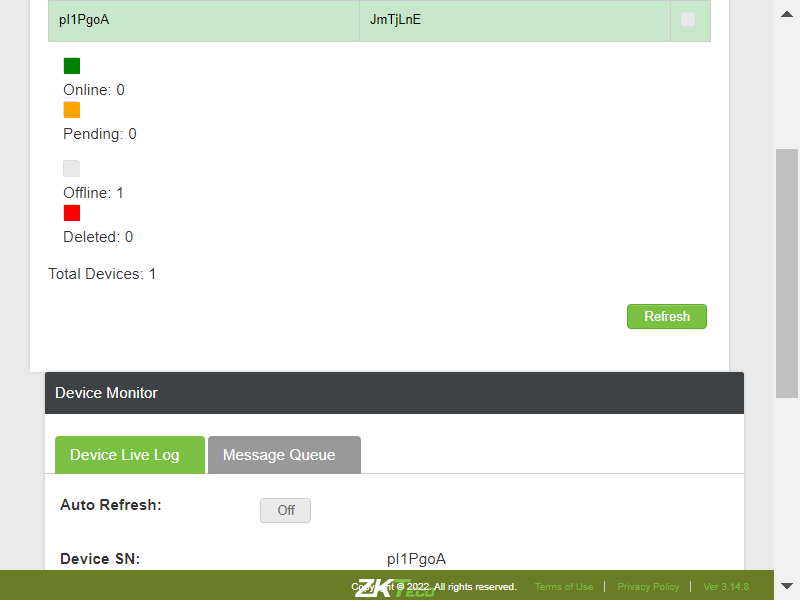TC_27: Verify whether user is able to clean all the commands in the message queue page , on click of Clean Command buttoncom.zkteco.cirrusdcs.stepDefinitions.CirrusDCS.i_initialize_drivers_for_DCS_automation()Driver InitializedGiven I visit CirrusDCS TenantLogin pageGiven I am in Tenant home pageWhen I perform mousehower on Device managerAnd I click on Device Setup sub moduleThen I click on new device buttonThen I enter the details and add the deviceThen I click on Yes buttonAnd I click on Device Monitor sub moduleThen I enter devicesn into search fieldThen I click on Search IconThen I select the searched deviceThen I click on Message Queue tabThen I click on clean commands button and validate the results
-
@CirrusDCS
153 tests
112 40@CirrusDCS
112 passed 40 failedStatus Timestamp TestName 10:27:49 am DeviceOperationandAudit Module 10:27:49 am Verify whether use is able to view Device Manager module and its sub modules DeviceOperationandAudit Module.Verify whether use is able to view Device Manager module and its sub modules10:27:57 am TC_02: Verify whether user is able to navigate to "Device Operations" submodule DeviceOperationandAudit Module.TC_02: Verify whether user is able to navigate to "Device Operations" submodule10:28:01 am TC_03: Verify whether use is able to view below mentioned sections in Device Group page DeviceOperationandAudit Module.TC_03: Verify whether use is able to view below mentioned sections in Device Group page10:28:04 am TC_04: Verify whether use is able to view below mentioned components in Device Group List Section DeviceOperationandAudit Module.TC_04: Verify whether use is able to view below mentioned components in Device Group List Section10:28:09 am TC_05: verify whether user is able with below mentioned columns DeviceOperationandAudit Module.TC_05: verify whether user is able with below mentioned columns10:28:12 am TC_06: Verify whether use is able to view below mentioned components in Device Group information Section DeviceOperationandAudit Module.TC_06: Verify whether use is able to view below mentioned components in Device Group information Section10:28:16 am TC_07: verify whether user is able to view below mentioned Components in Basic Info tab DeviceOperationandAudit Module.TC_07: verify whether user is able to view below mentioned Components in Basic Info tab10:28:21 am TC_08: verify whether user is able to view below mentioned Components in Basic Info tab DeviceOperationandAudit Module.TC_08: verify whether user is able to view below mentioned Components in Basic Info tab10:28:27 am TC_09: Verify the Tables columns in Device Subscription tab DeviceOperationandAudit Module.TC_09: Verify the Tables columns in Device Subscription tab10:28:32 am TC_10: Verify whether use is able to create new Device Group DeviceOperationandAudit Module.TC_10: Verify whether use is able to create new Device Group10:29:31 am TC_11: Verify whether use is able to create new Device Group on click of cancel button DeviceOperationandAudit Module.TC_11: Verify whether use is able to create new Device Group on click of cancel button10:30:18 am TC_12:Verify whether use is able to filter the record by Group Code DeviceOperationandAudit Module.TC_12:Verify whether use is able to filter the record by Group Code10:30:27 am TC_13:Verify whether use is able to filter the record by Group name DeviceOperationandAudit Module.TC_13:Verify whether use is able to filter the record by Group name10:30:36 am TC_14:Verify whether use is able to filter the record by Group Code/Name with invalid data DeviceOperationandAudit Module.TC_14:Verify whether use is able to filter the record by Group Code/Name with invalid data10:30:45 am TC_15: Verify whether use is able to edit Device Group DeviceOperationandAudit Module.TC_15: Verify whether use is able to edit Device Group10:31:46 am TC_16: Verify whether use is able to view the count of Groups properly. DeviceOperationandAudit Module.TC_16: Verify whether use is able to view the count of Groups properly.10:32:32 am TC_17: Verify whether use is able to delete Device Group DeviceOperationandAudit Module.TC_17: Verify whether use is able to delete Device Group10:32:41 am TC_18: Verify whether User is able to view the below mentioned items in Assign Device to Device Group pop up window DeviceOperationandAudit Module.TC_18: Verify whether User is able to view the below mentioned items in Assign Device to Device Group pop up window10:33:46 am TC_19: Verify whether User is able to assign and remove the Group to a device DeviceOperationandAudit Module.TC_19: Verify whether User is able to assign and remove the Group to a device10:34:08 am TC_20: Verify whether user is able to add subscription for device group DeviceOperationandAudit Module.TC_20: Verify whether user is able to add subscription for device group10:34:20 am TC_21: Verify whether User is able to edit the Subscribed Event DeviceOperationandAudit Module.TC_21: Verify whether User is able to edit the Subscribed Event10:34:37 am TC_22: Verify whether User is able to delete the Subscribed Event DeviceOperationandAudit Module.TC_22: Verify whether User is able to delete the Subscribed Event10:35:01 am Verify whether User is able to view the Device operation & Audit module DeviceOperationandAudit Module.Verify whether User is able to view the Device operation & Audit module10:35:04 am Verify whether User is able to view the all sub modules in the Device operation &Audit module DeviceOperationandAudit Module.Verify whether User is able to view the all sub modules in the Device operation &Audit module10:35:06 am Verify whether User is able to access the Device info sub module Device info page is displayed DeviceOperationandAudit Module.Verify whether User is able to access the Device info sub module Device info page is displayed10:35:11 am Verify whether the User is able to view the all section in the Device info page DeviceOperationandAudit Module.Verify whether the User is able to view the all section in the Device info page10:35:14 am Verify whether the User is able to view all the components in the Device list section DeviceOperationandAudit Module.Verify whether the User is able to view all the components in the Device list section10:35:18 am Verify whether the User is able to view all the tabs in the Device Details DeviceOperationandAudit Module.Verify whether the User is able to view all the tabs in the Device Details10:35:22 am Verify whether the User is able to view all the fields in below mentioned tabs DeviceOperationandAudit Module.Verify whether the User is able to view all the fields in below mentioned tabs10:35:26 am Verify whether User is able to maximize or minimize the tabs by access the plus or minus button DeviceOperationandAudit Module.Verify whether User is able to maximize or minimize the tabs by access the plus or minus button10:35:30 am Verify whether the User is able to search the device by using tenant/ device name /Device sn DeviceOperationandAudit Module.Verify whether the User is able to search the device by using tenant/ device name /Device sn10:35:34 am TC_10: Verify whether user is able to view the below mentioned columns, after searching the device DeviceOperationandAudit Module.TC_10: Verify whether user is able to view the below mentioned columns, after searching the device10:35:38 am Verify whether the User is able to select the device the device detail information is displayed DeviceOperationandAudit Module.Verify whether the User is able to select the device the device detail information is displayed10:35:49 am Verify whether User is able to view the below mentioned components in device details page DeviceOperationandAudit Module.Verify whether User is able to view the below mentioned components in device details page10:35:52 am TC_13: Verify whether user is able to search the device based on tenant name search criteria DeviceOperationandAudit Module.TC_13: Verify whether user is able to search the device based on tenant name search criteria10:35:56 am TC_14: Verify whether user is able to search the device based on device sn search criteria DeviceOperationandAudit Module.TC_14: Verify whether user is able to search the device based on device sn search criteria10:36:00 am TC_15: Verify whether user is able to search the device based on device name search criteria DeviceOperationandAudit Module.TC_15: Verify whether user is able to search the device based on device name search criteria10:36:04 am Verify whether the User is able to access the refresh button the page will be refresh DeviceOperationandAudit Module.Verify whether the User is able to access the refresh button the page will be refresh10:36:08 am Verify the User is able to access the view options button Device options popup page is displayed DeviceOperationandAudit Module.Verify the User is able to access the view options button Device options popup page is displayed10:36:14 am Verify whether User is able to access the view bell schedule button Bell schedule popup page is displayed DeviceOperationandAudit Module.Verify whether User is able to access the view bell schedule button Bell schedule popup page is displayed10:36:22 am Verify whether in the bell schedule popup page below mentioned table is displayed DeviceOperationandAudit Module.Verify whether in the bell schedule popup page below mentioned table is displayed10:36:28 am TC_20: Verify whether user is able to Filter the data for online device status DeviceOperationandAudit Module.TC_20: Verify whether user is able to Filter the data for online device status10:36:35 am TC_21: Verify whether user is able to Filter the data for offline device status DeviceOperationandAudit Module.TC_21: Verify whether user is able to Filter the data for offline device status10:36:44 am TC_22: Verify whether user is able to Filter the data for offline device status DeviceOperationandAudit Module.TC_22: Verify whether user is able to Filter the data for offline device status10:37:00 am TC_23: Verify whether user is able to Filter the data for deleted device status DeviceOperationandAudit Module.TC_23: Verify whether user is able to Filter the data for deleted device status10:37:07 am TC_24: Verify whether user is able to Filter the data for all device status DeviceOperationandAudit Module.TC_24: Verify whether user is able to Filter the data for all device status10:37:24 am TC_01: Verify whether user is able to navigate to "Device Setup" submodule DeviceOperationandAudit Module.TC_01: Verify whether user is able to navigate to "Device Setup" submodule10:37:32 am TC_02: Verify whether user is able to view below mentioned sections in device operations page DeviceOperationandAudit Module.TC_02: Verify whether user is able to view below mentioned sections in device operations page10:37:37 am TC_03: Verify whether User is able to view below mentioned components and table Tabs DeviceOperationandAudit Module.TC_03: Verify whether User is able to view below mentioned components and table Tabs10:37:42 am TC_04: Verify whether user is able to view the below mentioned components in device setup page DeviceOperationandAudit Module.TC_04: Verify whether user is able to view the below mentioned components in device setup page10:37:49 am TC_05: Verify whether user is able to view the below mentioned components in device setup page DeviceOperationandAudit Module.TC_05: Verify whether user is able to view the below mentioned components in device setup page10:37:54 am TC_06: Verify whether user is able to Filter the data for online device status DeviceOperationandAudit Module.TC_06: Verify whether user is able to Filter the data for online device status10:38:03 am TC_07: Verify whether user is able to Filter the data for pending device status DeviceOperationandAudit Module.TC_07: Verify whether user is able to Filter the data for pending device status10:38:09 am TC_08: Verify whether user is able to Filter the data for offline device status DeviceOperationandAudit Module.TC_08: Verify whether user is able to Filter the data for offline device status10:38:29 am TC_09: Verify whether user is able to Filter the data for deleted device status DeviceOperationandAudit Module.TC_09: Verify whether user is able to Filter the data for deleted device status10:38:36 am TC_10: Verify whether user is able to Filter the data for all device status DeviceOperationandAudit Module.TC_10: Verify whether user is able to Filter the data for all device status10:38:58 am TC_11: Verify whether Respective device details are getting auto populated, when device is selected DeviceOperationandAudit Module.TC_11: Verify whether Respective device details are getting auto populated, when device is selected10:39:07 am TC_12: Verify whether User is able to navigate to Batch Enroll Devices Window, when clicked on Batch Enroll button DeviceOperationandAudit Module.TC_12: Verify whether User is able to navigate to Batch Enroll Devices Window, when clicked on Batch Enroll button10:39:12 am TC_13: Verify whether User is able to view below mentioned components in Batch Enroll Devices page DeviceOperationandAudit Module.TC_13: Verify whether User is able to view below mentioned components in Batch Enroll Devices page10:39:17 am TC_14: Verify whether User is able to view below mentioned table columns in Batch Enroll Devices page DeviceOperationandAudit Module.TC_14: Verify whether User is able to view below mentioned table columns in Batch Enroll Devices page10:39:23 am TC_15: Verify whether User is able to choose and upload the CSV file in Batch Enroll Devices window DeviceOperationandAudit Module.TC_15: Verify whether User is able to choose and upload the CSV file in Batch Enroll Devices window10:39:28 am TC_16: Verify whether User is able to upload the CSV file and perform Batch Enroll operation DeviceOperationandAudit Module.TC_16: Verify whether User is able to upload the CSV file and perform Batch Enroll operation10:39:35 am TC_17: Verify whether User is able to open Device Details Pop up window by clicking on Copy Device button DeviceOperationandAudit Module.TC_17: Verify whether User is able to open Device Details Pop up window by clicking on Copy Device button10:39:41 am TC_18: Verify whether User is able to view below mentioned components in Device Details Pop up window DeviceOperationandAudit Module.TC_18: Verify whether User is able to view below mentioned components in Device Details Pop up window10:39:48 am TC_19: Verify whether User is able to Copy the Device Settings to New Device that is added DeviceOperationandAudit Module.TC_19: Verify whether User is able to Copy the Device Settings to New Device that is added10:39:53 am TC_20: Verify whether User is able to Copy the Device Settings to New Device that is added DeviceOperationandAudit Module.TC_20: Verify whether User is able to Copy the Device Settings to New Device that is added10:39:59 am TC_21: Verify whether User is able to view below mentioned tabs and Components in New Device Page Tabs DeviceOperationandAudit Module.TC_21: Verify whether User is able to view below mentioned tabs and Components in New Device Page Tabs10:40:04 am TC_22: Verify whether User is able to view below mentioned tabs and Components in New Device Page Tabs DeviceOperationandAudit Module.TC_22: Verify whether User is able to view below mentioned tabs and Components in New Device Page Tabs10:40:09 am TC_23: Verify whether User is able to view below mentioned components in Device Basic Config tab DeviceOperationandAudit Module.TC_23: Verify whether User is able to view below mentioned components in Device Basic Config tab10:40:17 am TC_24: Verify whether User is able to view below mentioned components in Device Basic Config tab DeviceOperationandAudit Module.TC_24: Verify whether User is able to view below mentioned components in Device Basic Config tab10:40:24 am TC_25: Verify whether User is able to add New device into tenant account DeviceOperationandAudit Module.TC_25: Verify whether User is able to add New device into tenant account10:40:33 am TC_26: Verify whether User is able to Save the Device Template DeviceOperationandAudit Module.TC_26: Verify whether User is able to Save the Device Template10:40:48 am TC_27: Verify whether User is able to Change the Device Serial No DeviceOperationandAudit Module.TC_27: Verify whether User is able to Change the Device Serial No10:41:05 am TC_28: Verify whether User is able to Change the Device Serial No DeviceOperationandAudit Module.TC_28: Verify whether User is able to Change the Device Serial No10:41:15 am TC_29:Verify whether User is able to view the change in tabs based on the Device Platform DeviceOperationandAudit Module.TC_29:Verify whether User is able to view the change in tabs based on the Device Platform10:41:22 am TC_30:Verify whether User is able to view below mentioned tabs, after the device is added DeviceOperationandAudit Module.TC_30:Verify whether User is able to view below mentioned tabs, after the device is added10:41:29 am TC_31:Verify whether User is able to view below mentioned components in Hardware setup section DeviceOperationandAudit Module.TC_31:Verify whether User is able to view below mentioned components in Hardware setup section10:41:43 am TC_32:Verify whether User is able to view all the components in Clock Attendance Rule Setup DeviceOperationandAudit Module.TC_32:Verify whether User is able to view all the components in Clock Attendance Rule Setup10:42:00 am TC_33:Verify whether User is able to view all the components Additional Settings under device Setup DeviceOperationandAudit Module.TC_33:Verify whether User is able to view all the components Additional Settings under device Setup10:42:09 am TC_34:Verify whether User is able to view all the components in message settings tab in device setup DeviceOperationandAudit Module.TC_34:Verify whether User is able to view all the components in message settings tab in device setup10:42:20 am TC_35:Verify whether User is able to view all the components in device subscription tab in device setup DeviceOperationandAudit Module.TC_35:Verify whether User is able to view all the components in device subscription tab in device setup10:42:26 am TC_36:Verify whether User is able to save the hardware setup DeviceOperationandAudit Module.TC_36:Verify whether User is able to save the hardware setup10:42:40 am TC_37:Verify whether User is able to save the clock attendance rule setup DeviceOperationandAudit Module.TC_37:Verify whether User is able to save the clock attendance rule setup10:43:06 am TC_38:Verify whether User is able to save the Additional Settings DeviceOperationandAudit Module.TC_38:Verify whether User is able to save the Additional Settings10:43:18 am TC_39:Verify whether User is able to save the Device basic Config DeviceOperationandAudit Module.TC_39:Verify whether User is able to save the Device basic Config10:43:28 am TC_40:Verify whether User is able to save the message settings in device setup DeviceOperationandAudit Module.TC_40:Verify whether User is able to save the message settings in device setup10:43:42 am TC_41:Verify whether User is able to add device subscription in device setup DeviceOperationandAudit Module.TC_41:Verify whether User is able to add device subscription in device setup10:43:56 am TC_42:Verify whether User is able to configure visitor module settings and save DeviceOperationandAudit Module.TC_42:Verify whether User is able to configure visitor module settings and save10:44:09 am TC_43:Verify whether User is able to save the Clock Attendance Rule Setup settings and the same settings can be saved for other device DeviceOperationandAudit Module.TC_43:Verify whether User is able to save the Clock Attendance Rule Setup settings and the same settings can be saved for other device10:44:24 am TC_44:Verify whether User is able to save the Clock Attendance Rule Setup settings and the same settings can be saved for other device DeviceOperationandAudit Module.TC_44:Verify whether User is able to save the Clock Attendance Rule Setup settings and the same settings can be saved for other device10:44:41 am TC_45:Verify whether User is able to configure clock function provision and save DeviceOperationandAudit Module.TC_45:Verify whether User is able to configure clock function provision and save10:44:53 am TC_46:Verify whether User is able to sync all configurations to device DeviceOperationandAudit Module.TC_46:Verify whether User is able to sync all configurations to device10:45:09 am TC_01: Verify whether user is able to navigate to "Device Setup" submodule DeviceOperationandAudit Module.TC_01: Verify whether user is able to navigate to "Device Setup" submodule10:45:13 am TC_02: Verify whether User is able to view below mentioned sections DeviceOperationandAudit Module.TC_02: Verify whether User is able to view below mentioned sections10:45:16 am TC_03: Verify whether User is able to view below mentioned sections DeviceOperationandAudit Module.TC_03: Verify whether User is able to view below mentioned sections10:45:20 am TC_04: Verify whether User is able to filter the devices by Device group DeviceOperationandAudit Module.TC_04: Verify whether User is able to filter the devices by Device group10:45:33 am TC_05: Verify whether User is able to filter the devices by Device SN/Name DeviceOperationandAudit Module.TC_05: Verify whether User is able to filter the devices by Device SN/Name10:45:50 am TC_06: Verify whether User is able to view the proper count of the device as per the device selection DeviceOperationandAudit Module.TC_06: Verify whether User is able to view the proper count of the device as per the device selection10:45:56 am TC_07: Verify whether User is able to view below mentioned tabs in Sync Data Section DeviceOperationandAudit Module.TC_07: Verify whether User is able to view below mentioned tabs in Sync Data Section10:45:59 am TC_08: Verify whether User is able to Sync the Selected Employees to the clock DeviceOperationandAudit Module.TC_08: Verify whether User is able to Sync the Selected Employees to the clock10:46:52 am TC_09: Verify whether User is able to Sync all the Employees to the clock DeviceOperationandAudit Module.TC_09: Verify whether User is able to Sync all the Employees to the clock10:47:41 am TC_10: Verify whether User is able to Sync Time and Labor data to clock DeviceOperationandAudit Module.TC_10: Verify whether User is able to Sync Time and Labor data to clock10:48:32 am TC_11: Verify whether User is able to Sync Bio Attestation to clock DeviceOperationandAudit Module.TC_11: Verify whether User is able to Sync Bio Attestation to clock10:49:23 am TC_12: Verify whether User is able to Sync Face Attestation to clock DeviceOperationandAudit Module.TC_12: Verify whether User is able to Sync Face Attestation to clock10:50:14 am TC_13: Verify whether User is able to Sync General Attestation to clock DeviceOperationandAudit Module.TC_13: Verify whether User is able to Sync General Attestation to clock10:51:03 am TC_14: Verify whether User is able to Sync Bell Schedule to clock DeviceOperationandAudit Module.TC_14: Verify whether User is able to Sync Bell Schedule to clock10:51:50 am TC_15: Verify whether User is able to delete the Bell Schedule in clock DeviceOperationandAudit Module.TC_15: Verify whether User is able to delete the Bell Schedule in clock10:52:42 am TC_16: Verify whether User is able to delete all the Bell Schedule in clock DeviceOperationandAudit Module.TC_16: Verify whether User is able to delete all the Bell Schedule in clock10:53:31 am TC_01: Verify whether User is able to navigate to Device Operations page DeviceOperationandAudit Module.TC_01: Verify whether User is able to navigate to Device Operations page10:53:35 am TC_02: Verify whether User is able to navigate to Device Operations page DeviceOperationandAudit Module.TC_02: Verify whether User is able to navigate to Device Operations page10:53:39 am TC_03: Verify whether User is able to navigate to Device Operations page DeviceOperationandAudit Module.TC_03: Verify whether User is able to navigate to Device Operations page10:53:43 am TC_04: Verify whether use is able to view below mentioned sections in Device Group page DeviceOperationandAudit Module.TC_04: Verify whether use is able to view below mentioned sections in Device Group page10:53:47 am TC_05: Verify whether User is able to view below mentioned components in Select Device section DeviceOperationandAudit Module.TC_05: Verify whether User is able to view below mentioned components in Select Device section10:53:52 am TC_06: Verify whether User is able to filter the devices by Device group DeviceOperationandAudit Module.TC_06: Verify whether User is able to filter the devices by Device group10:54:05 am TC_07: Verify whether User is able to filter the devices by Device SN/Name DeviceOperationandAudit Module.TC_07: Verify whether User is able to filter the devices by Device SN/Name10:54:24 am TC_08: Verify whether User is able to view the proper count of the device as per the device selection DeviceOperationandAudit Module.TC_08: Verify whether User is able to view the proper count of the device as per the device selection10:54:37 am TC_09: Verify whether User is able to view the below mentioned device operations for Android device DeviceOperationandAudit Module.TC_09: Verify whether User is able to view the below mentioned device operations for Android device10:54:51 am TC_10: Verify whether User is able to view the below mentioned device operations for Linux device DeviceOperationandAudit Module.TC_10: Verify whether User is able to view the below mentioned device operations for Linux device10:55:05 am TC_11: Verify whether User is able to BroadCast public message to clock,when this operation is performed DeviceOperationandAudit Module.TC_11: Verify whether User is able to BroadCast public message to clock,when this operation is performed10:55:53 am TC_12: Verify whether User is able to load device configuration from device DeviceOperationandAudit Module.TC_12: Verify whether User is able to load device configuration from device10:56:42 am TC_12: Verify whether User is able to load device configuration from device DeviceOperationandAudit Module.TC_12: Verify whether User is able to load device configuration from device10:57:32 am TC_13: Verify whether User is able to Perform Load Attendance data by Date device operation DeviceOperationandAudit Module.TC_13: Verify whether User is able to Perform Load Attendance data by Date device operation10:58:20 am TC_14: Verify whether User is able to Perform Resubmit Offline Attendance Data Device Operation. DeviceOperationandAudit Module.TC_14: Verify whether User is able to Perform Resubmit Offline Attendance Data Device Operation.10:59:10 am TC_15: Verify whether User is able to load enrolled employee list from clock DeviceOperationandAudit Module.TC_15: Verify whether User is able to load enrolled employee list from clock10:59:59 am TC_16: Verify whether User is able to perform view the employee data by employee no device operation DeviceOperationandAudit Module.TC_16: Verify whether User is able to perform view the employee data by employee no device operation11:00:45 am TC_17: Verify whether User is able to perfrom View Clock Time & Labor Code device operation DeviceOperationandAudit Module.TC_17: Verify whether User is able to perfrom View Clock Time & Labor Code device operation11:01:31 am TC_18: Verify whether User is able to perfrom overide clock schedule lockout device operation DeviceOperationandAudit Module.TC_18: Verify whether User is able to perfrom overide clock schedule lockout device operation11:02:17 am TC_19: Verify whether User is able to send command to device using command line window DeviceOperationandAudit Module.TC_19: Verify whether User is able to send command to device using command line window11:03:03 am TC_20: Verify whether User is able to send command to device using command line window DeviceOperationandAudit Module.TC_20: Verify whether User is able to send command to device using command line window11:03:51 am TC_21: Verify whether User is able to clean all the device storage and validate DeviceOperationandAudit Module.TC_21: Verify whether User is able to clean all the device storage and validate11:04:43 am TC_01: Verify whether user is able to navigate to device monitor page DeviceOperationandAudit Module.TC_01: Verify whether user is able to navigate to device monitor page11:04:46 am TC_02: Verify whether user is able to view below mentioned sections in device operations page DeviceOperationandAudit Module.TC_02: Verify whether user is able to view below mentioned sections in device operations page11:04:50 am TC_03: Verify whether user is able to view below mentioned components and table in Device List Section DeviceOperationandAudit Module.TC_03: Verify whether user is able to view below mentioned components and table in Device List Section11:04:53 am TC_04: Verify whether user is able to view the List of all devices, that are added irrespective of tenants in Device List Section DeviceOperationandAudit Module.TC_04: Verify whether user is able to view the List of all devices, that are added irrespective of tenants in Device List Section11:05:03 am TC_05: Verify whether user is able to view the List of all devices, that are added irrespective of tenants in Device List Section DeviceOperationandAudit Module.TC_05: Verify whether user is able to view the List of all devices, that are added irrespective of tenants in Device List Section11:05:11 am TC_06: Verify whether user is able to search the device based on tenant name search criteria DeviceOperationandAudit Module.TC_06: Verify whether user is able to search the device based on tenant name search criteria11:05:15 am TC_07: Verify whether user is able to search the device based on device sn search criteria DeviceOperationandAudit Module.TC_07: Verify whether user is able to search the device based on device sn search criteria11:05:18 am TC_08: Verify whether user is able to search the device based on device name search criteria DeviceOperationandAudit Module.TC_08: Verify whether user is able to search the device based on device name search criteria11:05:22 am TC_09: Verify whether user is able to view the below mentioned columns, after searching the device DeviceOperationandAudit Module.TC_09: Verify whether user is able to view the below mentioned columns, after searching the device11:05:25 am TC_10: Verify whether user is able to Filter the data for online device status DeviceOperationandAudit Module.TC_10: Verify whether user is able to Filter the data for online device status11:06:01 am TC_11: Verify whether user is able to Filter the data for offline device status DeviceOperationandAudit Module.TC_11: Verify whether user is able to Filter the data for offline device status11:06:07 am TC_12: Verify whether user is able to Filter the data for offline device status DeviceOperationandAudit Module.TC_12: Verify whether user is able to Filter the data for offline device status11:06:25 am TC_13: Verify whether user is able to Filter the data for deleted device status DeviceOperationandAudit Module.TC_13: Verify whether user is able to Filter the data for deleted device status11:06:30 am TC_14: Verify whether user is able to Filter the data for all device status DeviceOperationandAudit Module.TC_14: Verify whether user is able to Filter the data for all device status11:07:18 am TC_15: Verify whether user is able to view below mentioned components and table Components DeviceOperationandAudit Module.TC_15: Verify whether user is able to view below mentioned components and table Components11:07:21 am TC_16: Verify whether user is able to view below mentioned components and table in Device Live Log tab Components DeviceOperationandAudit Module.TC_16: Verify whether user is able to view below mentioned components and table in Device Live Log tab Components11:07:24 am TC_17: Verify whether Respective device details are getting auto populated, when device is selected DeviceOperationandAudit Module.TC_17: Verify whether Respective device details are getting auto populated, when device is selected11:07:37 am TC_18: Verify whether user is able to Auto Refresh the Page, when Auto Refresh switch is on DeviceOperationandAudit Module.TC_18: Verify whether user is able to Auto Refresh the Page, when Auto Refresh switch is on11:07:41 am TC_19: Verify whether user is able to Refresh the Page, on click of Refresh button DeviceOperationandAudit Module.TC_19: Verify whether user is able to Refresh the Page, on click of Refresh button11:07:44 am TC_20: Verify whether user is able to view below mentioned components and table in Message Queue tab Components DeviceOperationandAudit Module.TC_20: Verify whether user is able to view below mentioned components and table in Message Queue tab Components11:07:56 am TC_21: Verify whether Respective device details are getting auto populated, when device is selected DeviceOperationandAudit Module.TC_21: Verify whether Respective device details are getting auto populated, when device is selected11:08:07 am TC_27: Verify whether user is able to clean all the commands in the message queue page , on click of Clean Command button DeviceOperationandAudit Module.TC_27: Verify whether user is able to clean all the commands in the message queue page , on click of Clean Command button -
@DeviceGroup_TC_01
1 tests
1@DeviceGroup_TC_01
1 passedStatus Timestamp TestName 10:27:49 am Verify whether use is able to view Device Manager module and its sub modules DeviceOperationandAudit Module.Verify whether use is able to view Device Manager module and its sub modules -
@DeviceManager
152 tests
112 40@DeviceManager
112 passed 40 failedStatus Timestamp TestName 10:27:49 am Verify whether use is able to view Device Manager module and its sub modules DeviceOperationandAudit Module.Verify whether use is able to view Device Manager module and its sub modules10:27:57 am TC_02: Verify whether user is able to navigate to "Device Operations" submodule DeviceOperationandAudit Module.TC_02: Verify whether user is able to navigate to "Device Operations" submodule10:28:01 am TC_03: Verify whether use is able to view below mentioned sections in Device Group page DeviceOperationandAudit Module.TC_03: Verify whether use is able to view below mentioned sections in Device Group page10:28:04 am TC_04: Verify whether use is able to view below mentioned components in Device Group List Section DeviceOperationandAudit Module.TC_04: Verify whether use is able to view below mentioned components in Device Group List Section10:28:09 am TC_05: verify whether user is able with below mentioned columns DeviceOperationandAudit Module.TC_05: verify whether user is able with below mentioned columns10:28:12 am TC_06: Verify whether use is able to view below mentioned components in Device Group information Section DeviceOperationandAudit Module.TC_06: Verify whether use is able to view below mentioned components in Device Group information Section10:28:16 am TC_07: verify whether user is able to view below mentioned Components in Basic Info tab DeviceOperationandAudit Module.TC_07: verify whether user is able to view below mentioned Components in Basic Info tab10:28:21 am TC_08: verify whether user is able to view below mentioned Components in Basic Info tab DeviceOperationandAudit Module.TC_08: verify whether user is able to view below mentioned Components in Basic Info tab10:28:27 am TC_09: Verify the Tables columns in Device Subscription tab DeviceOperationandAudit Module.TC_09: Verify the Tables columns in Device Subscription tab10:28:32 am TC_10: Verify whether use is able to create new Device Group DeviceOperationandAudit Module.TC_10: Verify whether use is able to create new Device Group10:29:31 am TC_11: Verify whether use is able to create new Device Group on click of cancel button DeviceOperationandAudit Module.TC_11: Verify whether use is able to create new Device Group on click of cancel button10:30:18 am TC_12:Verify whether use is able to filter the record by Group Code DeviceOperationandAudit Module.TC_12:Verify whether use is able to filter the record by Group Code10:30:27 am TC_13:Verify whether use is able to filter the record by Group name DeviceOperationandAudit Module.TC_13:Verify whether use is able to filter the record by Group name10:30:36 am TC_14:Verify whether use is able to filter the record by Group Code/Name with invalid data DeviceOperationandAudit Module.TC_14:Verify whether use is able to filter the record by Group Code/Name with invalid data10:30:45 am TC_15: Verify whether use is able to edit Device Group DeviceOperationandAudit Module.TC_15: Verify whether use is able to edit Device Group10:31:46 am TC_16: Verify whether use is able to view the count of Groups properly. DeviceOperationandAudit Module.TC_16: Verify whether use is able to view the count of Groups properly.10:32:32 am TC_17: Verify whether use is able to delete Device Group DeviceOperationandAudit Module.TC_17: Verify whether use is able to delete Device Group10:32:41 am TC_18: Verify whether User is able to view the below mentioned items in Assign Device to Device Group pop up window DeviceOperationandAudit Module.TC_18: Verify whether User is able to view the below mentioned items in Assign Device to Device Group pop up window10:33:46 am TC_19: Verify whether User is able to assign and remove the Group to a device DeviceOperationandAudit Module.TC_19: Verify whether User is able to assign and remove the Group to a device10:34:08 am TC_20: Verify whether user is able to add subscription for device group DeviceOperationandAudit Module.TC_20: Verify whether user is able to add subscription for device group10:34:20 am TC_21: Verify whether User is able to edit the Subscribed Event DeviceOperationandAudit Module.TC_21: Verify whether User is able to edit the Subscribed Event10:34:37 am TC_22: Verify whether User is able to delete the Subscribed Event DeviceOperationandAudit Module.TC_22: Verify whether User is able to delete the Subscribed Event10:35:01 am Verify whether User is able to view the Device operation & Audit module DeviceOperationandAudit Module.Verify whether User is able to view the Device operation & Audit module10:35:04 am Verify whether User is able to view the all sub modules in the Device operation &Audit module DeviceOperationandAudit Module.Verify whether User is able to view the all sub modules in the Device operation &Audit module10:35:06 am Verify whether User is able to access the Device info sub module Device info page is displayed DeviceOperationandAudit Module.Verify whether User is able to access the Device info sub module Device info page is displayed10:35:11 am Verify whether the User is able to view the all section in the Device info page DeviceOperationandAudit Module.Verify whether the User is able to view the all section in the Device info page10:35:14 am Verify whether the User is able to view all the components in the Device list section DeviceOperationandAudit Module.Verify whether the User is able to view all the components in the Device list section10:35:18 am Verify whether the User is able to view all the tabs in the Device Details DeviceOperationandAudit Module.Verify whether the User is able to view all the tabs in the Device Details10:35:22 am Verify whether the User is able to view all the fields in below mentioned tabs DeviceOperationandAudit Module.Verify whether the User is able to view all the fields in below mentioned tabs10:35:26 am Verify whether User is able to maximize or minimize the tabs by access the plus or minus button DeviceOperationandAudit Module.Verify whether User is able to maximize or minimize the tabs by access the plus or minus button10:35:30 am Verify whether the User is able to search the device by using tenant/ device name /Device sn DeviceOperationandAudit Module.Verify whether the User is able to search the device by using tenant/ device name /Device sn10:35:34 am TC_10: Verify whether user is able to view the below mentioned columns, after searching the device DeviceOperationandAudit Module.TC_10: Verify whether user is able to view the below mentioned columns, after searching the device10:35:38 am Verify whether the User is able to select the device the device detail information is displayed DeviceOperationandAudit Module.Verify whether the User is able to select the device the device detail information is displayed10:35:49 am Verify whether User is able to view the below mentioned components in device details page DeviceOperationandAudit Module.Verify whether User is able to view the below mentioned components in device details page10:35:52 am TC_13: Verify whether user is able to search the device based on tenant name search criteria DeviceOperationandAudit Module.TC_13: Verify whether user is able to search the device based on tenant name search criteria10:35:56 am TC_14: Verify whether user is able to search the device based on device sn search criteria DeviceOperationandAudit Module.TC_14: Verify whether user is able to search the device based on device sn search criteria10:36:00 am TC_15: Verify whether user is able to search the device based on device name search criteria DeviceOperationandAudit Module.TC_15: Verify whether user is able to search the device based on device name search criteria10:36:04 am Verify whether the User is able to access the refresh button the page will be refresh DeviceOperationandAudit Module.Verify whether the User is able to access the refresh button the page will be refresh10:36:08 am Verify the User is able to access the view options button Device options popup page is displayed DeviceOperationandAudit Module.Verify the User is able to access the view options button Device options popup page is displayed10:36:14 am Verify whether User is able to access the view bell schedule button Bell schedule popup page is displayed DeviceOperationandAudit Module.Verify whether User is able to access the view bell schedule button Bell schedule popup page is displayed10:36:22 am Verify whether in the bell schedule popup page below mentioned table is displayed DeviceOperationandAudit Module.Verify whether in the bell schedule popup page below mentioned table is displayed10:36:28 am TC_20: Verify whether user is able to Filter the data for online device status DeviceOperationandAudit Module.TC_20: Verify whether user is able to Filter the data for online device status10:36:35 am TC_21: Verify whether user is able to Filter the data for offline device status DeviceOperationandAudit Module.TC_21: Verify whether user is able to Filter the data for offline device status10:36:44 am TC_22: Verify whether user is able to Filter the data for offline device status DeviceOperationandAudit Module.TC_22: Verify whether user is able to Filter the data for offline device status10:37:00 am TC_23: Verify whether user is able to Filter the data for deleted device status DeviceOperationandAudit Module.TC_23: Verify whether user is able to Filter the data for deleted device status10:37:07 am TC_24: Verify whether user is able to Filter the data for all device status DeviceOperationandAudit Module.TC_24: Verify whether user is able to Filter the data for all device status10:37:24 am TC_01: Verify whether user is able to navigate to "Device Setup" submodule DeviceOperationandAudit Module.TC_01: Verify whether user is able to navigate to "Device Setup" submodule10:37:32 am TC_02: Verify whether user is able to view below mentioned sections in device operations page DeviceOperationandAudit Module.TC_02: Verify whether user is able to view below mentioned sections in device operations page10:37:37 am TC_03: Verify whether User is able to view below mentioned components and table Tabs DeviceOperationandAudit Module.TC_03: Verify whether User is able to view below mentioned components and table Tabs10:37:42 am TC_04: Verify whether user is able to view the below mentioned components in device setup page DeviceOperationandAudit Module.TC_04: Verify whether user is able to view the below mentioned components in device setup page10:37:49 am TC_05: Verify whether user is able to view the below mentioned components in device setup page DeviceOperationandAudit Module.TC_05: Verify whether user is able to view the below mentioned components in device setup page10:37:54 am TC_06: Verify whether user is able to Filter the data for online device status DeviceOperationandAudit Module.TC_06: Verify whether user is able to Filter the data for online device status10:38:03 am TC_07: Verify whether user is able to Filter the data for pending device status DeviceOperationandAudit Module.TC_07: Verify whether user is able to Filter the data for pending device status10:38:09 am TC_08: Verify whether user is able to Filter the data for offline device status DeviceOperationandAudit Module.TC_08: Verify whether user is able to Filter the data for offline device status10:38:29 am TC_09: Verify whether user is able to Filter the data for deleted device status DeviceOperationandAudit Module.TC_09: Verify whether user is able to Filter the data for deleted device status10:38:36 am TC_10: Verify whether user is able to Filter the data for all device status DeviceOperationandAudit Module.TC_10: Verify whether user is able to Filter the data for all device status10:38:58 am TC_11: Verify whether Respective device details are getting auto populated, when device is selected DeviceOperationandAudit Module.TC_11: Verify whether Respective device details are getting auto populated, when device is selected10:39:07 am TC_12: Verify whether User is able to navigate to Batch Enroll Devices Window, when clicked on Batch Enroll button DeviceOperationandAudit Module.TC_12: Verify whether User is able to navigate to Batch Enroll Devices Window, when clicked on Batch Enroll button10:39:12 am TC_13: Verify whether User is able to view below mentioned components in Batch Enroll Devices page DeviceOperationandAudit Module.TC_13: Verify whether User is able to view below mentioned components in Batch Enroll Devices page10:39:17 am TC_14: Verify whether User is able to view below mentioned table columns in Batch Enroll Devices page DeviceOperationandAudit Module.TC_14: Verify whether User is able to view below mentioned table columns in Batch Enroll Devices page10:39:23 am TC_15: Verify whether User is able to choose and upload the CSV file in Batch Enroll Devices window DeviceOperationandAudit Module.TC_15: Verify whether User is able to choose and upload the CSV file in Batch Enroll Devices window10:39:28 am TC_16: Verify whether User is able to upload the CSV file and perform Batch Enroll operation DeviceOperationandAudit Module.TC_16: Verify whether User is able to upload the CSV file and perform Batch Enroll operation10:39:35 am TC_17: Verify whether User is able to open Device Details Pop up window by clicking on Copy Device button DeviceOperationandAudit Module.TC_17: Verify whether User is able to open Device Details Pop up window by clicking on Copy Device button10:39:41 am TC_18: Verify whether User is able to view below mentioned components in Device Details Pop up window DeviceOperationandAudit Module.TC_18: Verify whether User is able to view below mentioned components in Device Details Pop up window10:39:48 am TC_19: Verify whether User is able to Copy the Device Settings to New Device that is added DeviceOperationandAudit Module.TC_19: Verify whether User is able to Copy the Device Settings to New Device that is added10:39:53 am TC_20: Verify whether User is able to Copy the Device Settings to New Device that is added DeviceOperationandAudit Module.TC_20: Verify whether User is able to Copy the Device Settings to New Device that is added10:39:59 am TC_21: Verify whether User is able to view below mentioned tabs and Components in New Device Page Tabs DeviceOperationandAudit Module.TC_21: Verify whether User is able to view below mentioned tabs and Components in New Device Page Tabs10:40:04 am TC_22: Verify whether User is able to view below mentioned tabs and Components in New Device Page Tabs DeviceOperationandAudit Module.TC_22: Verify whether User is able to view below mentioned tabs and Components in New Device Page Tabs10:40:09 am TC_23: Verify whether User is able to view below mentioned components in Device Basic Config tab DeviceOperationandAudit Module.TC_23: Verify whether User is able to view below mentioned components in Device Basic Config tab10:40:17 am TC_24: Verify whether User is able to view below mentioned components in Device Basic Config tab DeviceOperationandAudit Module.TC_24: Verify whether User is able to view below mentioned components in Device Basic Config tab10:40:24 am TC_25: Verify whether User is able to add New device into tenant account DeviceOperationandAudit Module.TC_25: Verify whether User is able to add New device into tenant account10:40:33 am TC_26: Verify whether User is able to Save the Device Template DeviceOperationandAudit Module.TC_26: Verify whether User is able to Save the Device Template10:40:48 am TC_27: Verify whether User is able to Change the Device Serial No DeviceOperationandAudit Module.TC_27: Verify whether User is able to Change the Device Serial No10:41:05 am TC_28: Verify whether User is able to Change the Device Serial No DeviceOperationandAudit Module.TC_28: Verify whether User is able to Change the Device Serial No10:41:15 am TC_29:Verify whether User is able to view the change in tabs based on the Device Platform DeviceOperationandAudit Module.TC_29:Verify whether User is able to view the change in tabs based on the Device Platform10:41:22 am TC_30:Verify whether User is able to view below mentioned tabs, after the device is added DeviceOperationandAudit Module.TC_30:Verify whether User is able to view below mentioned tabs, after the device is added10:41:29 am TC_31:Verify whether User is able to view below mentioned components in Hardware setup section DeviceOperationandAudit Module.TC_31:Verify whether User is able to view below mentioned components in Hardware setup section10:41:43 am TC_32:Verify whether User is able to view all the components in Clock Attendance Rule Setup DeviceOperationandAudit Module.TC_32:Verify whether User is able to view all the components in Clock Attendance Rule Setup10:42:00 am TC_33:Verify whether User is able to view all the components Additional Settings under device Setup DeviceOperationandAudit Module.TC_33:Verify whether User is able to view all the components Additional Settings under device Setup10:42:09 am TC_34:Verify whether User is able to view all the components in message settings tab in device setup DeviceOperationandAudit Module.TC_34:Verify whether User is able to view all the components in message settings tab in device setup10:42:20 am TC_35:Verify whether User is able to view all the components in device subscription tab in device setup DeviceOperationandAudit Module.TC_35:Verify whether User is able to view all the components in device subscription tab in device setup10:42:26 am TC_36:Verify whether User is able to save the hardware setup DeviceOperationandAudit Module.TC_36:Verify whether User is able to save the hardware setup10:42:40 am TC_37:Verify whether User is able to save the clock attendance rule setup DeviceOperationandAudit Module.TC_37:Verify whether User is able to save the clock attendance rule setup10:43:06 am TC_38:Verify whether User is able to save the Additional Settings DeviceOperationandAudit Module.TC_38:Verify whether User is able to save the Additional Settings10:43:18 am TC_39:Verify whether User is able to save the Device basic Config DeviceOperationandAudit Module.TC_39:Verify whether User is able to save the Device basic Config10:43:28 am TC_40:Verify whether User is able to save the message settings in device setup DeviceOperationandAudit Module.TC_40:Verify whether User is able to save the message settings in device setup10:43:42 am TC_41:Verify whether User is able to add device subscription in device setup DeviceOperationandAudit Module.TC_41:Verify whether User is able to add device subscription in device setup10:43:56 am TC_42:Verify whether User is able to configure visitor module settings and save DeviceOperationandAudit Module.TC_42:Verify whether User is able to configure visitor module settings and save10:44:09 am TC_43:Verify whether User is able to save the Clock Attendance Rule Setup settings and the same settings can be saved for other device DeviceOperationandAudit Module.TC_43:Verify whether User is able to save the Clock Attendance Rule Setup settings and the same settings can be saved for other device10:44:24 am TC_44:Verify whether User is able to save the Clock Attendance Rule Setup settings and the same settings can be saved for other device DeviceOperationandAudit Module.TC_44:Verify whether User is able to save the Clock Attendance Rule Setup settings and the same settings can be saved for other device10:44:41 am TC_45:Verify whether User is able to configure clock function provision and save DeviceOperationandAudit Module.TC_45:Verify whether User is able to configure clock function provision and save10:44:53 am TC_46:Verify whether User is able to sync all configurations to device DeviceOperationandAudit Module.TC_46:Verify whether User is able to sync all configurations to device10:45:09 am TC_01: Verify whether user is able to navigate to "Device Setup" submodule DeviceOperationandAudit Module.TC_01: Verify whether user is able to navigate to "Device Setup" submodule10:45:13 am TC_02: Verify whether User is able to view below mentioned sections DeviceOperationandAudit Module.TC_02: Verify whether User is able to view below mentioned sections10:45:16 am TC_03: Verify whether User is able to view below mentioned sections DeviceOperationandAudit Module.TC_03: Verify whether User is able to view below mentioned sections10:45:20 am TC_04: Verify whether User is able to filter the devices by Device group DeviceOperationandAudit Module.TC_04: Verify whether User is able to filter the devices by Device group10:45:33 am TC_05: Verify whether User is able to filter the devices by Device SN/Name DeviceOperationandAudit Module.TC_05: Verify whether User is able to filter the devices by Device SN/Name10:45:50 am TC_06: Verify whether User is able to view the proper count of the device as per the device selection DeviceOperationandAudit Module.TC_06: Verify whether User is able to view the proper count of the device as per the device selection10:45:56 am TC_07: Verify whether User is able to view below mentioned tabs in Sync Data Section DeviceOperationandAudit Module.TC_07: Verify whether User is able to view below mentioned tabs in Sync Data Section10:45:59 am TC_08: Verify whether User is able to Sync the Selected Employees to the clock DeviceOperationandAudit Module.TC_08: Verify whether User is able to Sync the Selected Employees to the clock10:46:52 am TC_09: Verify whether User is able to Sync all the Employees to the clock DeviceOperationandAudit Module.TC_09: Verify whether User is able to Sync all the Employees to the clock10:47:41 am TC_10: Verify whether User is able to Sync Time and Labor data to clock DeviceOperationandAudit Module.TC_10: Verify whether User is able to Sync Time and Labor data to clock10:48:32 am TC_11: Verify whether User is able to Sync Bio Attestation to clock DeviceOperationandAudit Module.TC_11: Verify whether User is able to Sync Bio Attestation to clock10:49:23 am TC_12: Verify whether User is able to Sync Face Attestation to clock DeviceOperationandAudit Module.TC_12: Verify whether User is able to Sync Face Attestation to clock10:50:14 am TC_13: Verify whether User is able to Sync General Attestation to clock DeviceOperationandAudit Module.TC_13: Verify whether User is able to Sync General Attestation to clock10:51:03 am TC_14: Verify whether User is able to Sync Bell Schedule to clock DeviceOperationandAudit Module.TC_14: Verify whether User is able to Sync Bell Schedule to clock10:51:50 am TC_15: Verify whether User is able to delete the Bell Schedule in clock DeviceOperationandAudit Module.TC_15: Verify whether User is able to delete the Bell Schedule in clock10:52:42 am TC_16: Verify whether User is able to delete all the Bell Schedule in clock DeviceOperationandAudit Module.TC_16: Verify whether User is able to delete all the Bell Schedule in clock10:53:31 am TC_01: Verify whether User is able to navigate to Device Operations page DeviceOperationandAudit Module.TC_01: Verify whether User is able to navigate to Device Operations page10:53:35 am TC_02: Verify whether User is able to navigate to Device Operations page DeviceOperationandAudit Module.TC_02: Verify whether User is able to navigate to Device Operations page10:53:39 am TC_03: Verify whether User is able to navigate to Device Operations page DeviceOperationandAudit Module.TC_03: Verify whether User is able to navigate to Device Operations page10:53:43 am TC_04: Verify whether use is able to view below mentioned sections in Device Group page DeviceOperationandAudit Module.TC_04: Verify whether use is able to view below mentioned sections in Device Group page10:53:47 am TC_05: Verify whether User is able to view below mentioned components in Select Device section DeviceOperationandAudit Module.TC_05: Verify whether User is able to view below mentioned components in Select Device section10:53:52 am TC_06: Verify whether User is able to filter the devices by Device group DeviceOperationandAudit Module.TC_06: Verify whether User is able to filter the devices by Device group10:54:05 am TC_07: Verify whether User is able to filter the devices by Device SN/Name DeviceOperationandAudit Module.TC_07: Verify whether User is able to filter the devices by Device SN/Name10:54:24 am TC_08: Verify whether User is able to view the proper count of the device as per the device selection DeviceOperationandAudit Module.TC_08: Verify whether User is able to view the proper count of the device as per the device selection10:54:37 am TC_09: Verify whether User is able to view the below mentioned device operations for Android device DeviceOperationandAudit Module.TC_09: Verify whether User is able to view the below mentioned device operations for Android device10:54:51 am TC_10: Verify whether User is able to view the below mentioned device operations for Linux device DeviceOperationandAudit Module.TC_10: Verify whether User is able to view the below mentioned device operations for Linux device10:55:05 am TC_11: Verify whether User is able to BroadCast public message to clock,when this operation is performed DeviceOperationandAudit Module.TC_11: Verify whether User is able to BroadCast public message to clock,when this operation is performed10:55:53 am TC_12: Verify whether User is able to load device configuration from device DeviceOperationandAudit Module.TC_12: Verify whether User is able to load device configuration from device10:56:42 am TC_12: Verify whether User is able to load device configuration from device DeviceOperationandAudit Module.TC_12: Verify whether User is able to load device configuration from device10:57:32 am TC_13: Verify whether User is able to Perform Load Attendance data by Date device operation DeviceOperationandAudit Module.TC_13: Verify whether User is able to Perform Load Attendance data by Date device operation10:58:20 am TC_14: Verify whether User is able to Perform Resubmit Offline Attendance Data Device Operation. DeviceOperationandAudit Module.TC_14: Verify whether User is able to Perform Resubmit Offline Attendance Data Device Operation.10:59:10 am TC_15: Verify whether User is able to load enrolled employee list from clock DeviceOperationandAudit Module.TC_15: Verify whether User is able to load enrolled employee list from clock10:59:59 am TC_16: Verify whether User is able to perform view the employee data by employee no device operation DeviceOperationandAudit Module.TC_16: Verify whether User is able to perform view the employee data by employee no device operation11:00:45 am TC_17: Verify whether User is able to perfrom View Clock Time & Labor Code device operation DeviceOperationandAudit Module.TC_17: Verify whether User is able to perfrom View Clock Time & Labor Code device operation11:01:31 am TC_18: Verify whether User is able to perfrom overide clock schedule lockout device operation DeviceOperationandAudit Module.TC_18: Verify whether User is able to perfrom overide clock schedule lockout device operation11:02:17 am TC_19: Verify whether User is able to send command to device using command line window DeviceOperationandAudit Module.TC_19: Verify whether User is able to send command to device using command line window11:03:03 am TC_20: Verify whether User is able to send command to device using command line window DeviceOperationandAudit Module.TC_20: Verify whether User is able to send command to device using command line window11:03:51 am TC_21: Verify whether User is able to clean all the device storage and validate DeviceOperationandAudit Module.TC_21: Verify whether User is able to clean all the device storage and validate11:04:43 am TC_01: Verify whether user is able to navigate to device monitor page DeviceOperationandAudit Module.TC_01: Verify whether user is able to navigate to device monitor page11:04:46 am TC_02: Verify whether user is able to view below mentioned sections in device operations page DeviceOperationandAudit Module.TC_02: Verify whether user is able to view below mentioned sections in device operations page11:04:50 am TC_03: Verify whether user is able to view below mentioned components and table in Device List Section DeviceOperationandAudit Module.TC_03: Verify whether user is able to view below mentioned components and table in Device List Section11:04:53 am TC_04: Verify whether user is able to view the List of all devices, that are added irrespective of tenants in Device List Section DeviceOperationandAudit Module.TC_04: Verify whether user is able to view the List of all devices, that are added irrespective of tenants in Device List Section11:05:03 am TC_05: Verify whether user is able to view the List of all devices, that are added irrespective of tenants in Device List Section DeviceOperationandAudit Module.TC_05: Verify whether user is able to view the List of all devices, that are added irrespective of tenants in Device List Section11:05:11 am TC_06: Verify whether user is able to search the device based on tenant name search criteria DeviceOperationandAudit Module.TC_06: Verify whether user is able to search the device based on tenant name search criteria11:05:15 am TC_07: Verify whether user is able to search the device based on device sn search criteria DeviceOperationandAudit Module.TC_07: Verify whether user is able to search the device based on device sn search criteria11:05:18 am TC_08: Verify whether user is able to search the device based on device name search criteria DeviceOperationandAudit Module.TC_08: Verify whether user is able to search the device based on device name search criteria11:05:22 am TC_09: Verify whether user is able to view the below mentioned columns, after searching the device DeviceOperationandAudit Module.TC_09: Verify whether user is able to view the below mentioned columns, after searching the device11:05:25 am TC_10: Verify whether user is able to Filter the data for online device status DeviceOperationandAudit Module.TC_10: Verify whether user is able to Filter the data for online device status11:06:01 am TC_11: Verify whether user is able to Filter the data for offline device status DeviceOperationandAudit Module.TC_11: Verify whether user is able to Filter the data for offline device status11:06:07 am TC_12: Verify whether user is able to Filter the data for offline device status DeviceOperationandAudit Module.TC_12: Verify whether user is able to Filter the data for offline device status11:06:25 am TC_13: Verify whether user is able to Filter the data for deleted device status DeviceOperationandAudit Module.TC_13: Verify whether user is able to Filter the data for deleted device status11:06:30 am TC_14: Verify whether user is able to Filter the data for all device status DeviceOperationandAudit Module.TC_14: Verify whether user is able to Filter the data for all device status11:07:18 am TC_15: Verify whether user is able to view below mentioned components and table Components DeviceOperationandAudit Module.TC_15: Verify whether user is able to view below mentioned components and table Components11:07:21 am TC_16: Verify whether user is able to view below mentioned components and table in Device Live Log tab Components DeviceOperationandAudit Module.TC_16: Verify whether user is able to view below mentioned components and table in Device Live Log tab Components11:07:24 am TC_17: Verify whether Respective device details are getting auto populated, when device is selected DeviceOperationandAudit Module.TC_17: Verify whether Respective device details are getting auto populated, when device is selected11:07:37 am TC_18: Verify whether user is able to Auto Refresh the Page, when Auto Refresh switch is on DeviceOperationandAudit Module.TC_18: Verify whether user is able to Auto Refresh the Page, when Auto Refresh switch is on11:07:41 am TC_19: Verify whether user is able to Refresh the Page, on click of Refresh button DeviceOperationandAudit Module.TC_19: Verify whether user is able to Refresh the Page, on click of Refresh button11:07:44 am TC_20: Verify whether user is able to view below mentioned components and table in Message Queue tab Components DeviceOperationandAudit Module.TC_20: Verify whether user is able to view below mentioned components and table in Message Queue tab Components11:07:56 am TC_21: Verify whether Respective device details are getting auto populated, when device is selected DeviceOperationandAudit Module.TC_21: Verify whether Respective device details are getting auto populated, when device is selected11:08:07 am TC_27: Verify whether user is able to clean all the commands in the message queue page , on click of Clean Command button DeviceOperationandAudit Module.TC_27: Verify whether user is able to clean all the commands in the message queue page , on click of Clean Command button -
@DeviceGroup
22 tests
14 8@DeviceGroup
14 passed 8 failedStatus Timestamp TestName 10:27:49 am Verify whether use is able to view Device Manager module and its sub modules DeviceOperationandAudit Module.Verify whether use is able to view Device Manager module and its sub modules10:27:57 am TC_02: Verify whether user is able to navigate to "Device Operations" submodule DeviceOperationandAudit Module.TC_02: Verify whether user is able to navigate to "Device Operations" submodule10:28:01 am TC_03: Verify whether use is able to view below mentioned sections in Device Group page DeviceOperationandAudit Module.TC_03: Verify whether use is able to view below mentioned sections in Device Group page10:28:04 am TC_04: Verify whether use is able to view below mentioned components in Device Group List Section DeviceOperationandAudit Module.TC_04: Verify whether use is able to view below mentioned components in Device Group List Section10:28:09 am TC_05: verify whether user is able with below mentioned columns DeviceOperationandAudit Module.TC_05: verify whether user is able with below mentioned columns10:28:12 am TC_06: Verify whether use is able to view below mentioned components in Device Group information Section DeviceOperationandAudit Module.TC_06: Verify whether use is able to view below mentioned components in Device Group information Section10:28:16 am TC_07: verify whether user is able to view below mentioned Components in Basic Info tab DeviceOperationandAudit Module.TC_07: verify whether user is able to view below mentioned Components in Basic Info tab10:28:21 am TC_08: verify whether user is able to view below mentioned Components in Basic Info tab DeviceOperationandAudit Module.TC_08: verify whether user is able to view below mentioned Components in Basic Info tab10:28:27 am TC_09: Verify the Tables columns in Device Subscription tab DeviceOperationandAudit Module.TC_09: Verify the Tables columns in Device Subscription tab10:28:32 am TC_10: Verify whether use is able to create new Device Group DeviceOperationandAudit Module.TC_10: Verify whether use is able to create new Device Group10:29:31 am TC_11: Verify whether use is able to create new Device Group on click of cancel button DeviceOperationandAudit Module.TC_11: Verify whether use is able to create new Device Group on click of cancel button10:30:18 am TC_12:Verify whether use is able to filter the record by Group Code DeviceOperationandAudit Module.TC_12:Verify whether use is able to filter the record by Group Code10:30:27 am TC_13:Verify whether use is able to filter the record by Group name DeviceOperationandAudit Module.TC_13:Verify whether use is able to filter the record by Group name10:30:36 am TC_14:Verify whether use is able to filter the record by Group Code/Name with invalid data DeviceOperationandAudit Module.TC_14:Verify whether use is able to filter the record by Group Code/Name with invalid data10:30:45 am TC_15: Verify whether use is able to edit Device Group DeviceOperationandAudit Module.TC_15: Verify whether use is able to edit Device Group10:31:46 am TC_16: Verify whether use is able to view the count of Groups properly. DeviceOperationandAudit Module.TC_16: Verify whether use is able to view the count of Groups properly.10:32:32 am TC_17: Verify whether use is able to delete Device Group DeviceOperationandAudit Module.TC_17: Verify whether use is able to delete Device Group10:32:41 am TC_18: Verify whether User is able to view the below mentioned items in Assign Device to Device Group pop up window DeviceOperationandAudit Module.TC_18: Verify whether User is able to view the below mentioned items in Assign Device to Device Group pop up window10:33:46 am TC_19: Verify whether User is able to assign and remove the Group to a device DeviceOperationandAudit Module.TC_19: Verify whether User is able to assign and remove the Group to a device10:34:08 am TC_20: Verify whether user is able to add subscription for device group DeviceOperationandAudit Module.TC_20: Verify whether user is able to add subscription for device group10:34:20 am TC_21: Verify whether User is able to edit the Subscribed Event DeviceOperationandAudit Module.TC_21: Verify whether User is able to edit the Subscribed Event10:34:37 am TC_22: Verify whether User is able to delete the Subscribed Event DeviceOperationandAudit Module.TC_22: Verify whether User is able to delete the Subscribed Event -
@Tenant
22 tests
14 8@Tenant
14 passed 8 failedStatus Timestamp TestName 10:27:49 am Verify whether use is able to view Device Manager module and its sub modules DeviceOperationandAudit Module.Verify whether use is able to view Device Manager module and its sub modules10:27:57 am TC_02: Verify whether user is able to navigate to "Device Operations" submodule DeviceOperationandAudit Module.TC_02: Verify whether user is able to navigate to "Device Operations" submodule10:28:01 am TC_03: Verify whether use is able to view below mentioned sections in Device Group page DeviceOperationandAudit Module.TC_03: Verify whether use is able to view below mentioned sections in Device Group page10:28:04 am TC_04: Verify whether use is able to view below mentioned components in Device Group List Section DeviceOperationandAudit Module.TC_04: Verify whether use is able to view below mentioned components in Device Group List Section10:28:09 am TC_05: verify whether user is able with below mentioned columns DeviceOperationandAudit Module.TC_05: verify whether user is able with below mentioned columns10:28:12 am TC_06: Verify whether use is able to view below mentioned components in Device Group information Section DeviceOperationandAudit Module.TC_06: Verify whether use is able to view below mentioned components in Device Group information Section10:28:16 am TC_07: verify whether user is able to view below mentioned Components in Basic Info tab DeviceOperationandAudit Module.TC_07: verify whether user is able to view below mentioned Components in Basic Info tab10:28:21 am TC_08: verify whether user is able to view below mentioned Components in Basic Info tab DeviceOperationandAudit Module.TC_08: verify whether user is able to view below mentioned Components in Basic Info tab10:28:27 am TC_09: Verify the Tables columns in Device Subscription tab DeviceOperationandAudit Module.TC_09: Verify the Tables columns in Device Subscription tab10:28:32 am TC_10: Verify whether use is able to create new Device Group DeviceOperationandAudit Module.TC_10: Verify whether use is able to create new Device Group10:29:31 am TC_11: Verify whether use is able to create new Device Group on click of cancel button DeviceOperationandAudit Module.TC_11: Verify whether use is able to create new Device Group on click of cancel button10:30:18 am TC_12:Verify whether use is able to filter the record by Group Code DeviceOperationandAudit Module.TC_12:Verify whether use is able to filter the record by Group Code10:30:27 am TC_13:Verify whether use is able to filter the record by Group name DeviceOperationandAudit Module.TC_13:Verify whether use is able to filter the record by Group name10:30:36 am TC_14:Verify whether use is able to filter the record by Group Code/Name with invalid data DeviceOperationandAudit Module.TC_14:Verify whether use is able to filter the record by Group Code/Name with invalid data10:30:45 am TC_15: Verify whether use is able to edit Device Group DeviceOperationandAudit Module.TC_15: Verify whether use is able to edit Device Group10:31:46 am TC_16: Verify whether use is able to view the count of Groups properly. DeviceOperationandAudit Module.TC_16: Verify whether use is able to view the count of Groups properly.10:32:32 am TC_17: Verify whether use is able to delete Device Group DeviceOperationandAudit Module.TC_17: Verify whether use is able to delete Device Group10:32:41 am TC_18: Verify whether User is able to view the below mentioned items in Assign Device to Device Group pop up window DeviceOperationandAudit Module.TC_18: Verify whether User is able to view the below mentioned items in Assign Device to Device Group pop up window10:33:46 am TC_19: Verify whether User is able to assign and remove the Group to a device DeviceOperationandAudit Module.TC_19: Verify whether User is able to assign and remove the Group to a device10:34:08 am TC_20: Verify whether user is able to add subscription for device group DeviceOperationandAudit Module.TC_20: Verify whether user is able to add subscription for device group10:34:20 am TC_21: Verify whether User is able to edit the Subscribed Event DeviceOperationandAudit Module.TC_21: Verify whether User is able to edit the Subscribed Event10:34:37 am TC_22: Verify whether User is able to delete the Subscribed Event DeviceOperationandAudit Module.TC_22: Verify whether User is able to delete the Subscribed Event -
@Smoke
20 tests
20@Smoke
20 passedStatus Timestamp TestName 10:27:49 am Verify whether use is able to view Device Manager module and its sub modules DeviceOperationandAudit Module.Verify whether use is able to view Device Manager module and its sub modules10:27:57 am TC_02: Verify whether user is able to navigate to "Device Operations" submodule DeviceOperationandAudit Module.TC_02: Verify whether user is able to navigate to "Device Operations" submodule10:28:01 am TC_03: Verify whether use is able to view below mentioned sections in Device Group page DeviceOperationandAudit Module.TC_03: Verify whether use is able to view below mentioned sections in Device Group page10:28:04 am TC_04: Verify whether use is able to view below mentioned components in Device Group List Section DeviceOperationandAudit Module.TC_04: Verify whether use is able to view below mentioned components in Device Group List Section10:28:09 am TC_05: verify whether user is able with below mentioned columns DeviceOperationandAudit Module.TC_05: verify whether user is able with below mentioned columns10:28:12 am TC_06: Verify whether use is able to view below mentioned components in Device Group information Section DeviceOperationandAudit Module.TC_06: Verify whether use is able to view below mentioned components in Device Group information Section10:28:16 am TC_07: verify whether user is able to view below mentioned Components in Basic Info tab DeviceOperationandAudit Module.TC_07: verify whether user is able to view below mentioned Components in Basic Info tab10:28:21 am TC_08: verify whether user is able to view below mentioned Components in Basic Info tab DeviceOperationandAudit Module.TC_08: verify whether user is able to view below mentioned Components in Basic Info tab10:28:27 am TC_09: Verify the Tables columns in Device Subscription tab DeviceOperationandAudit Module.TC_09: Verify the Tables columns in Device Subscription tab10:35:01 am Verify whether User is able to view the Device operation & Audit module DeviceOperationandAudit Module.Verify whether User is able to view the Device operation & Audit module10:35:04 am Verify whether User is able to view the all sub modules in the Device operation &Audit module DeviceOperationandAudit Module.Verify whether User is able to view the all sub modules in the Device operation &Audit module10:35:06 am Verify whether User is able to access the Device info sub module Device info page is displayed DeviceOperationandAudit Module.Verify whether User is able to access the Device info sub module Device info page is displayed10:35:11 am Verify whether the User is able to view the all section in the Device info page DeviceOperationandAudit Module.Verify whether the User is able to view the all section in the Device info page10:35:14 am Verify whether the User is able to view all the components in the Device list section DeviceOperationandAudit Module.Verify whether the User is able to view all the components in the Device list section10:35:18 am Verify whether the User is able to view all the tabs in the Device Details DeviceOperationandAudit Module.Verify whether the User is able to view all the tabs in the Device Details10:35:22 am Verify whether the User is able to view all the fields in below mentioned tabs DeviceOperationandAudit Module.Verify whether the User is able to view all the fields in below mentioned tabs10:35:26 am Verify whether User is able to maximize or minimize the tabs by access the plus or minus button DeviceOperationandAudit Module.Verify whether User is able to maximize or minimize the tabs by access the plus or minus button10:35:30 am Verify whether the User is able to search the device by using tenant/ device name /Device sn DeviceOperationandAudit Module.Verify whether the User is able to search the device by using tenant/ device name /Device sn10:35:49 am Verify whether User is able to view the below mentioned components in device details page DeviceOperationandAudit Module.Verify whether User is able to view the below mentioned components in device details page10:36:08 am Verify the User is able to access the view options button Device options popup page is displayed DeviceOperationandAudit Module.Verify the User is able to access the view options button Device options popup page is displayed -
@DCSFullsuite
151 tests
111 40@DCSFullsuite
111 passed 40 failedStatus Timestamp TestName 10:27:49 am Verify whether use is able to view Device Manager module and its sub modules DeviceOperationandAudit Module.Verify whether use is able to view Device Manager module and its sub modules10:27:57 am TC_02: Verify whether user is able to navigate to "Device Operations" submodule DeviceOperationandAudit Module.TC_02: Verify whether user is able to navigate to "Device Operations" submodule10:28:01 am TC_03: Verify whether use is able to view below mentioned sections in Device Group page DeviceOperationandAudit Module.TC_03: Verify whether use is able to view below mentioned sections in Device Group page10:28:04 am TC_04: Verify whether use is able to view below mentioned components in Device Group List Section DeviceOperationandAudit Module.TC_04: Verify whether use is able to view below mentioned components in Device Group List Section10:28:09 am TC_05: verify whether user is able with below mentioned columns DeviceOperationandAudit Module.TC_05: verify whether user is able with below mentioned columns10:28:12 am TC_06: Verify whether use is able to view below mentioned components in Device Group information Section DeviceOperationandAudit Module.TC_06: Verify whether use is able to view below mentioned components in Device Group information Section10:28:16 am TC_07: verify whether user is able to view below mentioned Components in Basic Info tab DeviceOperationandAudit Module.TC_07: verify whether user is able to view below mentioned Components in Basic Info tab10:28:21 am TC_08: verify whether user is able to view below mentioned Components in Basic Info tab DeviceOperationandAudit Module.TC_08: verify whether user is able to view below mentioned Components in Basic Info tab10:28:27 am TC_09: Verify the Tables columns in Device Subscription tab DeviceOperationandAudit Module.TC_09: Verify the Tables columns in Device Subscription tab10:28:32 am TC_10: Verify whether use is able to create new Device Group DeviceOperationandAudit Module.TC_10: Verify whether use is able to create new Device Group10:29:31 am TC_11: Verify whether use is able to create new Device Group on click of cancel button DeviceOperationandAudit Module.TC_11: Verify whether use is able to create new Device Group on click of cancel button10:30:18 am TC_12:Verify whether use is able to filter the record by Group Code DeviceOperationandAudit Module.TC_12:Verify whether use is able to filter the record by Group Code10:30:27 am TC_13:Verify whether use is able to filter the record by Group name DeviceOperationandAudit Module.TC_13:Verify whether use is able to filter the record by Group name10:30:36 am TC_14:Verify whether use is able to filter the record by Group Code/Name with invalid data DeviceOperationandAudit Module.TC_14:Verify whether use is able to filter the record by Group Code/Name with invalid data10:30:45 am TC_15: Verify whether use is able to edit Device Group DeviceOperationandAudit Module.TC_15: Verify whether use is able to edit Device Group10:31:46 am TC_16: Verify whether use is able to view the count of Groups properly. DeviceOperationandAudit Module.TC_16: Verify whether use is able to view the count of Groups properly.10:32:32 am TC_17: Verify whether use is able to delete Device Group DeviceOperationandAudit Module.TC_17: Verify whether use is able to delete Device Group10:32:41 am TC_18: Verify whether User is able to view the below mentioned items in Assign Device to Device Group pop up window DeviceOperationandAudit Module.TC_18: Verify whether User is able to view the below mentioned items in Assign Device to Device Group pop up window10:33:46 am TC_19: Verify whether User is able to assign and remove the Group to a device DeviceOperationandAudit Module.TC_19: Verify whether User is able to assign and remove the Group to a device10:34:08 am TC_20: Verify whether user is able to add subscription for device group DeviceOperationandAudit Module.TC_20: Verify whether user is able to add subscription for device group10:34:20 am TC_21: Verify whether User is able to edit the Subscribed Event DeviceOperationandAudit Module.TC_21: Verify whether User is able to edit the Subscribed Event10:34:37 am TC_22: Verify whether User is able to delete the Subscribed Event DeviceOperationandAudit Module.TC_22: Verify whether User is able to delete the Subscribed Event10:35:01 am Verify whether User is able to view the Device operation & Audit module DeviceOperationandAudit Module.Verify whether User is able to view the Device operation & Audit module10:35:04 am Verify whether User is able to view the all sub modules in the Device operation &Audit module DeviceOperationandAudit Module.Verify whether User is able to view the all sub modules in the Device operation &Audit module10:35:06 am Verify whether User is able to access the Device info sub module Device info page is displayed DeviceOperationandAudit Module.Verify whether User is able to access the Device info sub module Device info page is displayed10:35:11 am Verify whether the User is able to view the all section in the Device info page DeviceOperationandAudit Module.Verify whether the User is able to view the all section in the Device info page10:35:14 am Verify whether the User is able to view all the components in the Device list section DeviceOperationandAudit Module.Verify whether the User is able to view all the components in the Device list section10:35:18 am Verify whether the User is able to view all the tabs in the Device Details DeviceOperationandAudit Module.Verify whether the User is able to view all the tabs in the Device Details10:35:22 am Verify whether the User is able to view all the fields in below mentioned tabs DeviceOperationandAudit Module.Verify whether the User is able to view all the fields in below mentioned tabs10:35:26 am Verify whether User is able to maximize or minimize the tabs by access the plus or minus button DeviceOperationandAudit Module.Verify whether User is able to maximize or minimize the tabs by access the plus or minus button10:35:30 am Verify whether the User is able to search the device by using tenant/ device name /Device sn DeviceOperationandAudit Module.Verify whether the User is able to search the device by using tenant/ device name /Device sn10:35:34 am TC_10: Verify whether user is able to view the below mentioned columns, after searching the device DeviceOperationandAudit Module.TC_10: Verify whether user is able to view the below mentioned columns, after searching the device10:35:38 am Verify whether the User is able to select the device the device detail information is displayed DeviceOperationandAudit Module.Verify whether the User is able to select the device the device detail information is displayed10:35:49 am Verify whether User is able to view the below mentioned components in device details page DeviceOperationandAudit Module.Verify whether User is able to view the below mentioned components in device details page10:35:52 am TC_13: Verify whether user is able to search the device based on tenant name search criteria DeviceOperationandAudit Module.TC_13: Verify whether user is able to search the device based on tenant name search criteria10:35:56 am TC_14: Verify whether user is able to search the device based on device sn search criteria DeviceOperationandAudit Module.TC_14: Verify whether user is able to search the device based on device sn search criteria10:36:00 am TC_15: Verify whether user is able to search the device based on device name search criteria DeviceOperationandAudit Module.TC_15: Verify whether user is able to search the device based on device name search criteria10:36:04 am Verify whether the User is able to access the refresh button the page will be refresh DeviceOperationandAudit Module.Verify whether the User is able to access the refresh button the page will be refresh10:36:08 am Verify the User is able to access the view options button Device options popup page is displayed DeviceOperationandAudit Module.Verify the User is able to access the view options button Device options popup page is displayed10:36:14 am Verify whether User is able to access the view bell schedule button Bell schedule popup page is displayed DeviceOperationandAudit Module.Verify whether User is able to access the view bell schedule button Bell schedule popup page is displayed10:36:22 am Verify whether in the bell schedule popup page below mentioned table is displayed DeviceOperationandAudit Module.Verify whether in the bell schedule popup page below mentioned table is displayed10:36:28 am TC_20: Verify whether user is able to Filter the data for online device status DeviceOperationandAudit Module.TC_20: Verify whether user is able to Filter the data for online device status10:36:35 am TC_21: Verify whether user is able to Filter the data for offline device status DeviceOperationandAudit Module.TC_21: Verify whether user is able to Filter the data for offline device status10:36:44 am TC_22: Verify whether user is able to Filter the data for offline device status DeviceOperationandAudit Module.TC_22: Verify whether user is able to Filter the data for offline device status10:37:00 am TC_23: Verify whether user is able to Filter the data for deleted device status DeviceOperationandAudit Module.TC_23: Verify whether user is able to Filter the data for deleted device status10:37:07 am TC_24: Verify whether user is able to Filter the data for all device status DeviceOperationandAudit Module.TC_24: Verify whether user is able to Filter the data for all device status10:37:24 am TC_01: Verify whether user is able to navigate to "Device Setup" submodule DeviceOperationandAudit Module.TC_01: Verify whether user is able to navigate to "Device Setup" submodule10:37:32 am TC_02: Verify whether user is able to view below mentioned sections in device operations page DeviceOperationandAudit Module.TC_02: Verify whether user is able to view below mentioned sections in device operations page10:37:37 am TC_03: Verify whether User is able to view below mentioned components and table Tabs DeviceOperationandAudit Module.TC_03: Verify whether User is able to view below mentioned components and table Tabs10:37:42 am TC_04: Verify whether user is able to view the below mentioned components in device setup page DeviceOperationandAudit Module.TC_04: Verify whether user is able to view the below mentioned components in device setup page10:37:49 am TC_05: Verify whether user is able to view the below mentioned components in device setup page DeviceOperationandAudit Module.TC_05: Verify whether user is able to view the below mentioned components in device setup page10:37:54 am TC_06: Verify whether user is able to Filter the data for online device status DeviceOperationandAudit Module.TC_06: Verify whether user is able to Filter the data for online device status10:38:03 am TC_07: Verify whether user is able to Filter the data for pending device status DeviceOperationandAudit Module.TC_07: Verify whether user is able to Filter the data for pending device status10:38:09 am TC_08: Verify whether user is able to Filter the data for offline device status DeviceOperationandAudit Module.TC_08: Verify whether user is able to Filter the data for offline device status10:38:29 am TC_09: Verify whether user is able to Filter the data for deleted device status DeviceOperationandAudit Module.TC_09: Verify whether user is able to Filter the data for deleted device status10:38:36 am TC_10: Verify whether user is able to Filter the data for all device status DeviceOperationandAudit Module.TC_10: Verify whether user is able to Filter the data for all device status10:38:58 am TC_11: Verify whether Respective device details are getting auto populated, when device is selected DeviceOperationandAudit Module.TC_11: Verify whether Respective device details are getting auto populated, when device is selected10:39:07 am TC_12: Verify whether User is able to navigate to Batch Enroll Devices Window, when clicked on Batch Enroll button DeviceOperationandAudit Module.TC_12: Verify whether User is able to navigate to Batch Enroll Devices Window, when clicked on Batch Enroll button10:39:12 am TC_13: Verify whether User is able to view below mentioned components in Batch Enroll Devices page DeviceOperationandAudit Module.TC_13: Verify whether User is able to view below mentioned components in Batch Enroll Devices page10:39:17 am TC_14: Verify whether User is able to view below mentioned table columns in Batch Enroll Devices page DeviceOperationandAudit Module.TC_14: Verify whether User is able to view below mentioned table columns in Batch Enroll Devices page10:39:23 am TC_15: Verify whether User is able to choose and upload the CSV file in Batch Enroll Devices window DeviceOperationandAudit Module.TC_15: Verify whether User is able to choose and upload the CSV file in Batch Enroll Devices window10:39:28 am TC_16: Verify whether User is able to upload the CSV file and perform Batch Enroll operation DeviceOperationandAudit Module.TC_16: Verify whether User is able to upload the CSV file and perform Batch Enroll operation10:39:35 am TC_17: Verify whether User is able to open Device Details Pop up window by clicking on Copy Device button DeviceOperationandAudit Module.TC_17: Verify whether User is able to open Device Details Pop up window by clicking on Copy Device button10:39:41 am TC_18: Verify whether User is able to view below mentioned components in Device Details Pop up window DeviceOperationandAudit Module.TC_18: Verify whether User is able to view below mentioned components in Device Details Pop up window10:39:48 am TC_19: Verify whether User is able to Copy the Device Settings to New Device that is added DeviceOperationandAudit Module.TC_19: Verify whether User is able to Copy the Device Settings to New Device that is added10:39:53 am TC_20: Verify whether User is able to Copy the Device Settings to New Device that is added DeviceOperationandAudit Module.TC_20: Verify whether User is able to Copy the Device Settings to New Device that is added10:39:59 am TC_21: Verify whether User is able to view below mentioned tabs and Components in New Device Page Tabs DeviceOperationandAudit Module.TC_21: Verify whether User is able to view below mentioned tabs and Components in New Device Page Tabs10:40:04 am TC_22: Verify whether User is able to view below mentioned tabs and Components in New Device Page Tabs DeviceOperationandAudit Module.TC_22: Verify whether User is able to view below mentioned tabs and Components in New Device Page Tabs10:40:09 am TC_23: Verify whether User is able to view below mentioned components in Device Basic Config tab DeviceOperationandAudit Module.TC_23: Verify whether User is able to view below mentioned components in Device Basic Config tab10:40:17 am TC_24: Verify whether User is able to view below mentioned components in Device Basic Config tab DeviceOperationandAudit Module.TC_24: Verify whether User is able to view below mentioned components in Device Basic Config tab10:40:24 am TC_25: Verify whether User is able to add New device into tenant account DeviceOperationandAudit Module.TC_25: Verify whether User is able to add New device into tenant account10:40:33 am TC_26: Verify whether User is able to Save the Device Template DeviceOperationandAudit Module.TC_26: Verify whether User is able to Save the Device Template10:40:48 am TC_27: Verify whether User is able to Change the Device Serial No DeviceOperationandAudit Module.TC_27: Verify whether User is able to Change the Device Serial No10:41:05 am TC_28: Verify whether User is able to Change the Device Serial No DeviceOperationandAudit Module.TC_28: Verify whether User is able to Change the Device Serial No10:41:15 am TC_29:Verify whether User is able to view the change in tabs based on the Device Platform DeviceOperationandAudit Module.TC_29:Verify whether User is able to view the change in tabs based on the Device Platform10:41:22 am TC_30:Verify whether User is able to view below mentioned tabs, after the device is added DeviceOperationandAudit Module.TC_30:Verify whether User is able to view below mentioned tabs, after the device is added10:41:29 am TC_31:Verify whether User is able to view below mentioned components in Hardware setup section DeviceOperationandAudit Module.TC_31:Verify whether User is able to view below mentioned components in Hardware setup section10:41:43 am TC_32:Verify whether User is able to view all the components in Clock Attendance Rule Setup DeviceOperationandAudit Module.TC_32:Verify whether User is able to view all the components in Clock Attendance Rule Setup10:42:00 am TC_33:Verify whether User is able to view all the components Additional Settings under device Setup DeviceOperationandAudit Module.TC_33:Verify whether User is able to view all the components Additional Settings under device Setup10:42:09 am TC_34:Verify whether User is able to view all the components in message settings tab in device setup DeviceOperationandAudit Module.TC_34:Verify whether User is able to view all the components in message settings tab in device setup10:42:20 am TC_35:Verify whether User is able to view all the components in device subscription tab in device setup DeviceOperationandAudit Module.TC_35:Verify whether User is able to view all the components in device subscription tab in device setup10:42:26 am TC_36:Verify whether User is able to save the hardware setup DeviceOperationandAudit Module.TC_36:Verify whether User is able to save the hardware setup10:42:40 am TC_37:Verify whether User is able to save the clock attendance rule setup DeviceOperationandAudit Module.TC_37:Verify whether User is able to save the clock attendance rule setup10:43:06 am TC_38:Verify whether User is able to save the Additional Settings DeviceOperationandAudit Module.TC_38:Verify whether User is able to save the Additional Settings10:43:18 am TC_39:Verify whether User is able to save the Device basic Config DeviceOperationandAudit Module.TC_39:Verify whether User is able to save the Device basic Config10:43:28 am TC_40:Verify whether User is able to save the message settings in device setup DeviceOperationandAudit Module.TC_40:Verify whether User is able to save the message settings in device setup10:43:42 am TC_41:Verify whether User is able to add device subscription in device setup DeviceOperationandAudit Module.TC_41:Verify whether User is able to add device subscription in device setup10:43:56 am TC_42:Verify whether User is able to configure visitor module settings and save DeviceOperationandAudit Module.TC_42:Verify whether User is able to configure visitor module settings and save10:44:09 am TC_43:Verify whether User is able to save the Clock Attendance Rule Setup settings and the same settings can be saved for other device DeviceOperationandAudit Module.TC_43:Verify whether User is able to save the Clock Attendance Rule Setup settings and the same settings can be saved for other device10:44:24 am TC_44:Verify whether User is able to save the Clock Attendance Rule Setup settings and the same settings can be saved for other device DeviceOperationandAudit Module.TC_44:Verify whether User is able to save the Clock Attendance Rule Setup settings and the same settings can be saved for other device10:44:41 am TC_45:Verify whether User is able to configure clock function provision and save DeviceOperationandAudit Module.TC_45:Verify whether User is able to configure clock function provision and save10:44:53 am TC_46:Verify whether User is able to sync all configurations to device DeviceOperationandAudit Module.TC_46:Verify whether User is able to sync all configurations to device10:45:09 am TC_01: Verify whether user is able to navigate to "Device Setup" submodule DeviceOperationandAudit Module.TC_01: Verify whether user is able to navigate to "Device Setup" submodule10:45:16 am TC_03: Verify whether User is able to view below mentioned sections DeviceOperationandAudit Module.TC_03: Verify whether User is able to view below mentioned sections10:45:20 am TC_04: Verify whether User is able to filter the devices by Device group DeviceOperationandAudit Module.TC_04: Verify whether User is able to filter the devices by Device group10:45:33 am TC_05: Verify whether User is able to filter the devices by Device SN/Name DeviceOperationandAudit Module.TC_05: Verify whether User is able to filter the devices by Device SN/Name10:45:50 am TC_06: Verify whether User is able to view the proper count of the device as per the device selection DeviceOperationandAudit Module.TC_06: Verify whether User is able to view the proper count of the device as per the device selection10:45:56 am TC_07: Verify whether User is able to view below mentioned tabs in Sync Data Section DeviceOperationandAudit Module.TC_07: Verify whether User is able to view below mentioned tabs in Sync Data Section10:45:59 am TC_08: Verify whether User is able to Sync the Selected Employees to the clock DeviceOperationandAudit Module.TC_08: Verify whether User is able to Sync the Selected Employees to the clock10:46:52 am TC_09: Verify whether User is able to Sync all the Employees to the clock DeviceOperationandAudit Module.TC_09: Verify whether User is able to Sync all the Employees to the clock10:47:41 am TC_10: Verify whether User is able to Sync Time and Labor data to clock DeviceOperationandAudit Module.TC_10: Verify whether User is able to Sync Time and Labor data to clock10:48:32 am TC_11: Verify whether User is able to Sync Bio Attestation to clock DeviceOperationandAudit Module.TC_11: Verify whether User is able to Sync Bio Attestation to clock10:49:23 am TC_12: Verify whether User is able to Sync Face Attestation to clock DeviceOperationandAudit Module.TC_12: Verify whether User is able to Sync Face Attestation to clock10:50:14 am TC_13: Verify whether User is able to Sync General Attestation to clock DeviceOperationandAudit Module.TC_13: Verify whether User is able to Sync General Attestation to clock10:51:03 am TC_14: Verify whether User is able to Sync Bell Schedule to clock DeviceOperationandAudit Module.TC_14: Verify whether User is able to Sync Bell Schedule to clock10:51:50 am TC_15: Verify whether User is able to delete the Bell Schedule in clock DeviceOperationandAudit Module.TC_15: Verify whether User is able to delete the Bell Schedule in clock10:52:42 am TC_16: Verify whether User is able to delete all the Bell Schedule in clock DeviceOperationandAudit Module.TC_16: Verify whether User is able to delete all the Bell Schedule in clock10:53:31 am TC_01: Verify whether User is able to navigate to Device Operations page DeviceOperationandAudit Module.TC_01: Verify whether User is able to navigate to Device Operations page10:53:35 am TC_02: Verify whether User is able to navigate to Device Operations page DeviceOperationandAudit Module.TC_02: Verify whether User is able to navigate to Device Operations page10:53:39 am TC_03: Verify whether User is able to navigate to Device Operations page DeviceOperationandAudit Module.TC_03: Verify whether User is able to navigate to Device Operations page10:53:43 am TC_04: Verify whether use is able to view below mentioned sections in Device Group page DeviceOperationandAudit Module.TC_04: Verify whether use is able to view below mentioned sections in Device Group page10:53:47 am TC_05: Verify whether User is able to view below mentioned components in Select Device section DeviceOperationandAudit Module.TC_05: Verify whether User is able to view below mentioned components in Select Device section10:53:52 am TC_06: Verify whether User is able to filter the devices by Device group DeviceOperationandAudit Module.TC_06: Verify whether User is able to filter the devices by Device group10:54:05 am TC_07: Verify whether User is able to filter the devices by Device SN/Name DeviceOperationandAudit Module.TC_07: Verify whether User is able to filter the devices by Device SN/Name10:54:24 am TC_08: Verify whether User is able to view the proper count of the device as per the device selection DeviceOperationandAudit Module.TC_08: Verify whether User is able to view the proper count of the device as per the device selection10:54:37 am TC_09: Verify whether User is able to view the below mentioned device operations for Android device DeviceOperationandAudit Module.TC_09: Verify whether User is able to view the below mentioned device operations for Android device10:54:51 am TC_10: Verify whether User is able to view the below mentioned device operations for Linux device DeviceOperationandAudit Module.TC_10: Verify whether User is able to view the below mentioned device operations for Linux device10:55:05 am TC_11: Verify whether User is able to BroadCast public message to clock,when this operation is performed DeviceOperationandAudit Module.TC_11: Verify whether User is able to BroadCast public message to clock,when this operation is performed10:55:53 am TC_12: Verify whether User is able to load device configuration from device DeviceOperationandAudit Module.TC_12: Verify whether User is able to load device configuration from device10:56:42 am TC_12: Verify whether User is able to load device configuration from device DeviceOperationandAudit Module.TC_12: Verify whether User is able to load device configuration from device10:57:32 am TC_13: Verify whether User is able to Perform Load Attendance data by Date device operation DeviceOperationandAudit Module.TC_13: Verify whether User is able to Perform Load Attendance data by Date device operation10:58:20 am TC_14: Verify whether User is able to Perform Resubmit Offline Attendance Data Device Operation. DeviceOperationandAudit Module.TC_14: Verify whether User is able to Perform Resubmit Offline Attendance Data Device Operation.10:59:10 am TC_15: Verify whether User is able to load enrolled employee list from clock DeviceOperationandAudit Module.TC_15: Verify whether User is able to load enrolled employee list from clock10:59:59 am TC_16: Verify whether User is able to perform view the employee data by employee no device operation DeviceOperationandAudit Module.TC_16: Verify whether User is able to perform view the employee data by employee no device operation11:00:45 am TC_17: Verify whether User is able to perfrom View Clock Time & Labor Code device operation DeviceOperationandAudit Module.TC_17: Verify whether User is able to perfrom View Clock Time & Labor Code device operation11:01:31 am TC_18: Verify whether User is able to perfrom overide clock schedule lockout device operation DeviceOperationandAudit Module.TC_18: Verify whether User is able to perfrom overide clock schedule lockout device operation11:02:17 am TC_19: Verify whether User is able to send command to device using command line window DeviceOperationandAudit Module.TC_19: Verify whether User is able to send command to device using command line window11:03:03 am TC_20: Verify whether User is able to send command to device using command line window DeviceOperationandAudit Module.TC_20: Verify whether User is able to send command to device using command line window11:03:51 am TC_21: Verify whether User is able to clean all the device storage and validate DeviceOperationandAudit Module.TC_21: Verify whether User is able to clean all the device storage and validate11:04:43 am TC_01: Verify whether user is able to navigate to device monitor page DeviceOperationandAudit Module.TC_01: Verify whether user is able to navigate to device monitor page11:04:46 am TC_02: Verify whether user is able to view below mentioned sections in device operations page DeviceOperationandAudit Module.TC_02: Verify whether user is able to view below mentioned sections in device operations page11:04:50 am TC_03: Verify whether user is able to view below mentioned components and table in Device List Section DeviceOperationandAudit Module.TC_03: Verify whether user is able to view below mentioned components and table in Device List Section11:04:53 am TC_04: Verify whether user is able to view the List of all devices, that are added irrespective of tenants in Device List Section DeviceOperationandAudit Module.TC_04: Verify whether user is able to view the List of all devices, that are added irrespective of tenants in Device List Section11:05:03 am TC_05: Verify whether user is able to view the List of all devices, that are added irrespective of tenants in Device List Section DeviceOperationandAudit Module.TC_05: Verify whether user is able to view the List of all devices, that are added irrespective of tenants in Device List Section11:05:11 am TC_06: Verify whether user is able to search the device based on tenant name search criteria DeviceOperationandAudit Module.TC_06: Verify whether user is able to search the device based on tenant name search criteria11:05:15 am TC_07: Verify whether user is able to search the device based on device sn search criteria DeviceOperationandAudit Module.TC_07: Verify whether user is able to search the device based on device sn search criteria11:05:18 am TC_08: Verify whether user is able to search the device based on device name search criteria DeviceOperationandAudit Module.TC_08: Verify whether user is able to search the device based on device name search criteria11:05:22 am TC_09: Verify whether user is able to view the below mentioned columns, after searching the device DeviceOperationandAudit Module.TC_09: Verify whether user is able to view the below mentioned columns, after searching the device11:05:25 am TC_10: Verify whether user is able to Filter the data for online device status DeviceOperationandAudit Module.TC_10: Verify whether user is able to Filter the data for online device status11:06:01 am TC_11: Verify whether user is able to Filter the data for offline device status DeviceOperationandAudit Module.TC_11: Verify whether user is able to Filter the data for offline device status11:06:07 am TC_12: Verify whether user is able to Filter the data for offline device status DeviceOperationandAudit Module.TC_12: Verify whether user is able to Filter the data for offline device status11:06:25 am TC_13: Verify whether user is able to Filter the data for deleted device status DeviceOperationandAudit Module.TC_13: Verify whether user is able to Filter the data for deleted device status11:06:30 am TC_14: Verify whether user is able to Filter the data for all device status DeviceOperationandAudit Module.TC_14: Verify whether user is able to Filter the data for all device status11:07:18 am TC_15: Verify whether user is able to view below mentioned components and table Components DeviceOperationandAudit Module.TC_15: Verify whether user is able to view below mentioned components and table Components11:07:21 am TC_16: Verify whether user is able to view below mentioned components and table in Device Live Log tab Components DeviceOperationandAudit Module.TC_16: Verify whether user is able to view below mentioned components and table in Device Live Log tab Components11:07:24 am TC_17: Verify whether Respective device details are getting auto populated, when device is selected DeviceOperationandAudit Module.TC_17: Verify whether Respective device details are getting auto populated, when device is selected11:07:37 am TC_18: Verify whether user is able to Auto Refresh the Page, when Auto Refresh switch is on DeviceOperationandAudit Module.TC_18: Verify whether user is able to Auto Refresh the Page, when Auto Refresh switch is on11:07:41 am TC_19: Verify whether user is able to Refresh the Page, on click of Refresh button DeviceOperationandAudit Module.TC_19: Verify whether user is able to Refresh the Page, on click of Refresh button11:07:44 am TC_20: Verify whether user is able to view below mentioned components and table in Message Queue tab Components DeviceOperationandAudit Module.TC_20: Verify whether user is able to view below mentioned components and table in Message Queue tab Components11:07:56 am TC_21: Verify whether Respective device details are getting auto populated, when device is selected DeviceOperationandAudit Module.TC_21: Verify whether Respective device details are getting auto populated, when device is selected11:08:07 am TC_27: Verify whether user is able to clean all the commands in the message queue page , on click of Clean Command button DeviceOperationandAudit Module.TC_27: Verify whether user is able to clean all the commands in the message queue page , on click of Clean Command button -
@DeviceGroup_TC_02
1 tests
1@DeviceGroup_TC_02
1 passedStatus Timestamp TestName 10:27:57 am TC_02: Verify whether user is able to navigate to "Device Operations" submodule DeviceOperationandAudit Module.TC_02: Verify whether user is able to navigate to "Device Operations" submodule -
@DeviceGroup_TC_03
1 tests
1@DeviceGroup_TC_03
1 passedStatus Timestamp TestName 10:28:01 am TC_03: Verify whether use is able to view below mentioned sections in Device Group page DeviceOperationandAudit Module.TC_03: Verify whether use is able to view below mentioned sections in Device Group page -
@DeviceGroup_TC_04
1 tests
1@DeviceGroup_TC_04
1 passedStatus Timestamp TestName 10:28:04 am TC_04: Verify whether use is able to view below mentioned components in Device Group List Section DeviceOperationandAudit Module.TC_04: Verify whether use is able to view below mentioned components in Device Group List Section -
@DeviceGroup_TC_05
1 tests
1@DeviceGroup_TC_05
1 passedStatus Timestamp TestName 10:28:09 am TC_05: verify whether user is able with below mentioned columns DeviceOperationandAudit Module.TC_05: verify whether user is able with below mentioned columns -
@DeviceGroup_TC_06
1 tests
1@DeviceGroup_TC_06
1 passedStatus Timestamp TestName 10:28:12 am TC_06: Verify whether use is able to view below mentioned components in Device Group information Section DeviceOperationandAudit Module.TC_06: Verify whether use is able to view below mentioned components in Device Group information Section -
@DeviceGroup_TC_07
1 tests
1@DeviceGroup_TC_07
1 passedStatus Timestamp TestName 10:28:16 am TC_07: verify whether user is able to view below mentioned Components in Basic Info tab DeviceOperationandAudit Module.TC_07: verify whether user is able to view below mentioned Components in Basic Info tab -
@DeviceGroup_TC_08
1 tests
1@DeviceGroup_TC_08
1 passedStatus Timestamp TestName 10:28:21 am TC_08: verify whether user is able to view below mentioned Components in Basic Info tab DeviceOperationandAudit Module.TC_08: verify whether user is able to view below mentioned Components in Basic Info tab -
@DeviceGroup_TC_09
1 tests
1@DeviceGroup_TC_09
1 passedStatus Timestamp TestName 10:28:27 am TC_09: Verify the Tables columns in Device Subscription tab DeviceOperationandAudit Module.TC_09: Verify the Tables columns in Device Subscription tab -
@DeviceGroup_TC_10
1 tests
1@DeviceGroup_TC_10
1 passedStatus Timestamp TestName 10:28:32 am TC_10: Verify whether use is able to create new Device Group DeviceOperationandAudit Module.TC_10: Verify whether use is able to create new Device Group -
@Regression
110 tests
71 39@Regression
71 passed 39 failedStatus Timestamp TestName 10:28:32 am TC_10: Verify whether use is able to create new Device Group DeviceOperationandAudit Module.TC_10: Verify whether use is able to create new Device Group10:29:31 am TC_11: Verify whether use is able to create new Device Group on click of cancel button DeviceOperationandAudit Module.TC_11: Verify whether use is able to create new Device Group on click of cancel button10:30:18 am TC_12:Verify whether use is able to filter the record by Group Code DeviceOperationandAudit Module.TC_12:Verify whether use is able to filter the record by Group Code10:30:27 am TC_13:Verify whether use is able to filter the record by Group name DeviceOperationandAudit Module.TC_13:Verify whether use is able to filter the record by Group name10:30:36 am TC_14:Verify whether use is able to filter the record by Group Code/Name with invalid data DeviceOperationandAudit Module.TC_14:Verify whether use is able to filter the record by Group Code/Name with invalid data10:30:45 am TC_15: Verify whether use is able to edit Device Group DeviceOperationandAudit Module.TC_15: Verify whether use is able to edit Device Group10:31:46 am TC_16: Verify whether use is able to view the count of Groups properly. DeviceOperationandAudit Module.TC_16: Verify whether use is able to view the count of Groups properly.10:32:32 am TC_17: Verify whether use is able to delete Device Group DeviceOperationandAudit Module.TC_17: Verify whether use is able to delete Device Group10:32:41 am TC_18: Verify whether User is able to view the below mentioned items in Assign Device to Device Group pop up window DeviceOperationandAudit Module.TC_18: Verify whether User is able to view the below mentioned items in Assign Device to Device Group pop up window10:33:46 am TC_19: Verify whether User is able to assign and remove the Group to a device DeviceOperationandAudit Module.TC_19: Verify whether User is able to assign and remove the Group to a device10:34:08 am TC_20: Verify whether user is able to add subscription for device group DeviceOperationandAudit Module.TC_20: Verify whether user is able to add subscription for device group10:34:20 am TC_21: Verify whether User is able to edit the Subscribed Event DeviceOperationandAudit Module.TC_21: Verify whether User is able to edit the Subscribed Event10:34:37 am TC_22: Verify whether User is able to delete the Subscribed Event DeviceOperationandAudit Module.TC_22: Verify whether User is able to delete the Subscribed Event10:35:34 am TC_10: Verify whether user is able to view the below mentioned columns, after searching the device DeviceOperationandAudit Module.TC_10: Verify whether user is able to view the below mentioned columns, after searching the device10:35:38 am Verify whether the User is able to select the device the device detail information is displayed DeviceOperationandAudit Module.Verify whether the User is able to select the device the device detail information is displayed10:35:52 am TC_13: Verify whether user is able to search the device based on tenant name search criteria DeviceOperationandAudit Module.TC_13: Verify whether user is able to search the device based on tenant name search criteria10:35:56 am TC_14: Verify whether user is able to search the device based on device sn search criteria DeviceOperationandAudit Module.TC_14: Verify whether user is able to search the device based on device sn search criteria10:36:00 am TC_15: Verify whether user is able to search the device based on device name search criteria DeviceOperationandAudit Module.TC_15: Verify whether user is able to search the device based on device name search criteria10:36:04 am Verify whether the User is able to access the refresh button the page will be refresh DeviceOperationandAudit Module.Verify whether the User is able to access the refresh button the page will be refresh10:36:14 am Verify whether User is able to access the view bell schedule button Bell schedule popup page is displayed DeviceOperationandAudit Module.Verify whether User is able to access the view bell schedule button Bell schedule popup page is displayed10:36:22 am Verify whether in the bell schedule popup page below mentioned table is displayed DeviceOperationandAudit Module.Verify whether in the bell schedule popup page below mentioned table is displayed10:36:28 am TC_20: Verify whether user is able to Filter the data for online device status DeviceOperationandAudit Module.TC_20: Verify whether user is able to Filter the data for online device status10:36:35 am TC_21: Verify whether user is able to Filter the data for offline device status DeviceOperationandAudit Module.TC_21: Verify whether user is able to Filter the data for offline device status10:36:44 am TC_22: Verify whether user is able to Filter the data for offline device status DeviceOperationandAudit Module.TC_22: Verify whether user is able to Filter the data for offline device status10:37:00 am TC_23: Verify whether user is able to Filter the data for deleted device status DeviceOperationandAudit Module.TC_23: Verify whether user is able to Filter the data for deleted device status10:37:07 am TC_24: Verify whether user is able to Filter the data for all device status DeviceOperationandAudit Module.TC_24: Verify whether user is able to Filter the data for all device status10:37:24 am TC_01: Verify whether user is able to navigate to "Device Setup" submodule DeviceOperationandAudit Module.TC_01: Verify whether user is able to navigate to "Device Setup" submodule10:37:32 am TC_02: Verify whether user is able to view below mentioned sections in device operations page DeviceOperationandAudit Module.TC_02: Verify whether user is able to view below mentioned sections in device operations page10:37:37 am TC_03: Verify whether User is able to view below mentioned components and table Tabs DeviceOperationandAudit Module.TC_03: Verify whether User is able to view below mentioned components and table Tabs10:37:42 am TC_04: Verify whether user is able to view the below mentioned components in device setup page DeviceOperationandAudit Module.TC_04: Verify whether user is able to view the below mentioned components in device setup page10:37:49 am TC_05: Verify whether user is able to view the below mentioned components in device setup page DeviceOperationandAudit Module.TC_05: Verify whether user is able to view the below mentioned components in device setup page10:37:54 am TC_06: Verify whether user is able to Filter the data for online device status DeviceOperationandAudit Module.TC_06: Verify whether user is able to Filter the data for online device status10:38:03 am TC_07: Verify whether user is able to Filter the data for pending device status DeviceOperationandAudit Module.TC_07: Verify whether user is able to Filter the data for pending device status10:38:09 am TC_08: Verify whether user is able to Filter the data for offline device status DeviceOperationandAudit Module.TC_08: Verify whether user is able to Filter the data for offline device status10:38:29 am TC_09: Verify whether user is able to Filter the data for deleted device status DeviceOperationandAudit Module.TC_09: Verify whether user is able to Filter the data for deleted device status10:38:36 am TC_10: Verify whether user is able to Filter the data for all device status DeviceOperationandAudit Module.TC_10: Verify whether user is able to Filter the data for all device status10:38:58 am TC_11: Verify whether Respective device details are getting auto populated, when device is selected DeviceOperationandAudit Module.TC_11: Verify whether Respective device details are getting auto populated, when device is selected10:39:07 am TC_12: Verify whether User is able to navigate to Batch Enroll Devices Window, when clicked on Batch Enroll button DeviceOperationandAudit Module.TC_12: Verify whether User is able to navigate to Batch Enroll Devices Window, when clicked on Batch Enroll button10:39:12 am TC_13: Verify whether User is able to view below mentioned components in Batch Enroll Devices page DeviceOperationandAudit Module.TC_13: Verify whether User is able to view below mentioned components in Batch Enroll Devices page10:39:17 am TC_14: Verify whether User is able to view below mentioned table columns in Batch Enroll Devices page DeviceOperationandAudit Module.TC_14: Verify whether User is able to view below mentioned table columns in Batch Enroll Devices page10:39:23 am TC_15: Verify whether User is able to choose and upload the CSV file in Batch Enroll Devices window DeviceOperationandAudit Module.TC_15: Verify whether User is able to choose and upload the CSV file in Batch Enroll Devices window10:39:28 am TC_16: Verify whether User is able to upload the CSV file and perform Batch Enroll operation DeviceOperationandAudit Module.TC_16: Verify whether User is able to upload the CSV file and perform Batch Enroll operation10:39:35 am TC_17: Verify whether User is able to open Device Details Pop up window by clicking on Copy Device button DeviceOperationandAudit Module.TC_17: Verify whether User is able to open Device Details Pop up window by clicking on Copy Device button10:39:41 am TC_18: Verify whether User is able to view below mentioned components in Device Details Pop up window DeviceOperationandAudit Module.TC_18: Verify whether User is able to view below mentioned components in Device Details Pop up window10:39:48 am TC_19: Verify whether User is able to Copy the Device Settings to New Device that is added DeviceOperationandAudit Module.TC_19: Verify whether User is able to Copy the Device Settings to New Device that is added10:39:53 am TC_20: Verify whether User is able to Copy the Device Settings to New Device that is added DeviceOperationandAudit Module.TC_20: Verify whether User is able to Copy the Device Settings to New Device that is added10:39:59 am TC_21: Verify whether User is able to view below mentioned tabs and Components in New Device Page Tabs DeviceOperationandAudit Module.TC_21: Verify whether User is able to view below mentioned tabs and Components in New Device Page Tabs10:40:04 am TC_22: Verify whether User is able to view below mentioned tabs and Components in New Device Page Tabs DeviceOperationandAudit Module.TC_22: Verify whether User is able to view below mentioned tabs and Components in New Device Page Tabs10:40:09 am TC_23: Verify whether User is able to view below mentioned components in Device Basic Config tab DeviceOperationandAudit Module.TC_23: Verify whether User is able to view below mentioned components in Device Basic Config tab10:40:17 am TC_24: Verify whether User is able to view below mentioned components in Device Basic Config tab DeviceOperationandAudit Module.TC_24: Verify whether User is able to view below mentioned components in Device Basic Config tab10:40:24 am TC_25: Verify whether User is able to add New device into tenant account DeviceOperationandAudit Module.TC_25: Verify whether User is able to add New device into tenant account10:40:33 am TC_26: Verify whether User is able to Save the Device Template DeviceOperationandAudit Module.TC_26: Verify whether User is able to Save the Device Template10:40:48 am TC_27: Verify whether User is able to Change the Device Serial No DeviceOperationandAudit Module.TC_27: Verify whether User is able to Change the Device Serial No10:41:05 am TC_28: Verify whether User is able to Change the Device Serial No DeviceOperationandAudit Module.TC_28: Verify whether User is able to Change the Device Serial No10:41:15 am TC_29:Verify whether User is able to view the change in tabs based on the Device Platform DeviceOperationandAudit Module.TC_29:Verify whether User is able to view the change in tabs based on the Device Platform10:41:22 am TC_30:Verify whether User is able to view below mentioned tabs, after the device is added DeviceOperationandAudit Module.TC_30:Verify whether User is able to view below mentioned tabs, after the device is added10:41:29 am TC_31:Verify whether User is able to view below mentioned components in Hardware setup section DeviceOperationandAudit Module.TC_31:Verify whether User is able to view below mentioned components in Hardware setup section10:41:43 am TC_32:Verify whether User is able to view all the components in Clock Attendance Rule Setup DeviceOperationandAudit Module.TC_32:Verify whether User is able to view all the components in Clock Attendance Rule Setup10:42:00 am TC_33:Verify whether User is able to view all the components Additional Settings under device Setup DeviceOperationandAudit Module.TC_33:Verify whether User is able to view all the components Additional Settings under device Setup10:42:09 am TC_34:Verify whether User is able to view all the components in message settings tab in device setup DeviceOperationandAudit Module.TC_34:Verify whether User is able to view all the components in message settings tab in device setup10:42:20 am TC_35:Verify whether User is able to view all the components in device subscription tab in device setup DeviceOperationandAudit Module.TC_35:Verify whether User is able to view all the components in device subscription tab in device setup10:42:26 am TC_36:Verify whether User is able to save the hardware setup DeviceOperationandAudit Module.TC_36:Verify whether User is able to save the hardware setup10:42:40 am TC_37:Verify whether User is able to save the clock attendance rule setup DeviceOperationandAudit Module.TC_37:Verify whether User is able to save the clock attendance rule setup10:43:06 am TC_38:Verify whether User is able to save the Additional Settings DeviceOperationandAudit Module.TC_38:Verify whether User is able to save the Additional Settings10:43:18 am TC_39:Verify whether User is able to save the Device basic Config DeviceOperationandAudit Module.TC_39:Verify whether User is able to save the Device basic Config10:43:28 am TC_40:Verify whether User is able to save the message settings in device setup DeviceOperationandAudit Module.TC_40:Verify whether User is able to save the message settings in device setup10:43:42 am TC_41:Verify whether User is able to add device subscription in device setup DeviceOperationandAudit Module.TC_41:Verify whether User is able to add device subscription in device setup10:43:56 am TC_42:Verify whether User is able to configure visitor module settings and save DeviceOperationandAudit Module.TC_42:Verify whether User is able to configure visitor module settings and save10:44:09 am TC_43:Verify whether User is able to save the Clock Attendance Rule Setup settings and the same settings can be saved for other device DeviceOperationandAudit Module.TC_43:Verify whether User is able to save the Clock Attendance Rule Setup settings and the same settings can be saved for other device10:44:24 am TC_44:Verify whether User is able to save the Clock Attendance Rule Setup settings and the same settings can be saved for other device DeviceOperationandAudit Module.TC_44:Verify whether User is able to save the Clock Attendance Rule Setup settings and the same settings can be saved for other device10:44:41 am TC_45:Verify whether User is able to configure clock function provision and save DeviceOperationandAudit Module.TC_45:Verify whether User is able to configure clock function provision and save10:44:53 am TC_46:Verify whether User is able to sync all configurations to device DeviceOperationandAudit Module.TC_46:Verify whether User is able to sync all configurations to device10:45:09 am TC_01: Verify whether user is able to navigate to "Device Setup" submodule DeviceOperationandAudit Module.TC_01: Verify whether user is able to navigate to "Device Setup" submodule10:45:13 am TC_02: Verify whether User is able to view below mentioned sections DeviceOperationandAudit Module.TC_02: Verify whether User is able to view below mentioned sections10:45:16 am TC_03: Verify whether User is able to view below mentioned sections DeviceOperationandAudit Module.TC_03: Verify whether User is able to view below mentioned sections10:45:20 am TC_04: Verify whether User is able to filter the devices by Device group DeviceOperationandAudit Module.TC_04: Verify whether User is able to filter the devices by Device group10:45:33 am TC_05: Verify whether User is able to filter the devices by Device SN/Name DeviceOperationandAudit Module.TC_05: Verify whether User is able to filter the devices by Device SN/Name10:45:50 am TC_06: Verify whether User is able to view the proper count of the device as per the device selection DeviceOperationandAudit Module.TC_06: Verify whether User is able to view the proper count of the device as per the device selection10:45:56 am TC_07: Verify whether User is able to view below mentioned tabs in Sync Data Section DeviceOperationandAudit Module.TC_07: Verify whether User is able to view below mentioned tabs in Sync Data Section10:45:59 am TC_08: Verify whether User is able to Sync the Selected Employees to the clock DeviceOperationandAudit Module.TC_08: Verify whether User is able to Sync the Selected Employees to the clock10:46:52 am TC_09: Verify whether User is able to Sync all the Employees to the clock DeviceOperationandAudit Module.TC_09: Verify whether User is able to Sync all the Employees to the clock10:47:41 am TC_10: Verify whether User is able to Sync Time and Labor data to clock DeviceOperationandAudit Module.TC_10: Verify whether User is able to Sync Time and Labor data to clock10:48:32 am TC_11: Verify whether User is able to Sync Bio Attestation to clock DeviceOperationandAudit Module.TC_11: Verify whether User is able to Sync Bio Attestation to clock10:49:23 am TC_12: Verify whether User is able to Sync Face Attestation to clock DeviceOperationandAudit Module.TC_12: Verify whether User is able to Sync Face Attestation to clock10:50:14 am TC_13: Verify whether User is able to Sync General Attestation to clock DeviceOperationandAudit Module.TC_13: Verify whether User is able to Sync General Attestation to clock10:51:03 am TC_14: Verify whether User is able to Sync Bell Schedule to clock DeviceOperationandAudit Module.TC_14: Verify whether User is able to Sync Bell Schedule to clock10:51:50 am TC_15: Verify whether User is able to delete the Bell Schedule in clock DeviceOperationandAudit Module.TC_15: Verify whether User is able to delete the Bell Schedule in clock10:52:42 am TC_16: Verify whether User is able to delete all the Bell Schedule in clock DeviceOperationandAudit Module.TC_16: Verify whether User is able to delete all the Bell Schedule in clock10:53:31 am TC_01: Verify whether User is able to navigate to Device Operations page DeviceOperationandAudit Module.TC_01: Verify whether User is able to navigate to Device Operations page10:53:35 am TC_02: Verify whether User is able to navigate to Device Operations page DeviceOperationandAudit Module.TC_02: Verify whether User is able to navigate to Device Operations page10:53:39 am TC_03: Verify whether User is able to navigate to Device Operations page DeviceOperationandAudit Module.TC_03: Verify whether User is able to navigate to Device Operations page10:53:43 am TC_04: Verify whether use is able to view below mentioned sections in Device Group page DeviceOperationandAudit Module.TC_04: Verify whether use is able to view below mentioned sections in Device Group page10:53:47 am TC_05: Verify whether User is able to view below mentioned components in Select Device section DeviceOperationandAudit Module.TC_05: Verify whether User is able to view below mentioned components in Select Device section10:53:52 am TC_06: Verify whether User is able to filter the devices by Device group DeviceOperationandAudit Module.TC_06: Verify whether User is able to filter the devices by Device group10:54:05 am TC_07: Verify whether User is able to filter the devices by Device SN/Name DeviceOperationandAudit Module.TC_07: Verify whether User is able to filter the devices by Device SN/Name10:54:24 am TC_08: Verify whether User is able to view the proper count of the device as per the device selection DeviceOperationandAudit Module.TC_08: Verify whether User is able to view the proper count of the device as per the device selection10:54:37 am TC_09: Verify whether User is able to view the below mentioned device operations for Android device DeviceOperationandAudit Module.TC_09: Verify whether User is able to view the below mentioned device operations for Android device10:54:51 am TC_10: Verify whether User is able to view the below mentioned device operations for Linux device DeviceOperationandAudit Module.TC_10: Verify whether User is able to view the below mentioned device operations for Linux device10:55:05 am TC_11: Verify whether User is able to BroadCast public message to clock,when this operation is performed DeviceOperationandAudit Module.TC_11: Verify whether User is able to BroadCast public message to clock,when this operation is performed10:55:53 am TC_12: Verify whether User is able to load device configuration from device DeviceOperationandAudit Module.TC_12: Verify whether User is able to load device configuration from device10:56:42 am TC_12: Verify whether User is able to load device configuration from device DeviceOperationandAudit Module.TC_12: Verify whether User is able to load device configuration from device10:57:32 am TC_13: Verify whether User is able to Perform Load Attendance data by Date device operation DeviceOperationandAudit Module.TC_13: Verify whether User is able to Perform Load Attendance data by Date device operation10:58:20 am TC_14: Verify whether User is able to Perform Resubmit Offline Attendance Data Device Operation. DeviceOperationandAudit Module.TC_14: Verify whether User is able to Perform Resubmit Offline Attendance Data Device Operation.10:59:10 am TC_15: Verify whether User is able to load enrolled employee list from clock DeviceOperationandAudit Module.TC_15: Verify whether User is able to load enrolled employee list from clock10:59:59 am TC_16: Verify whether User is able to perform view the employee data by employee no device operation DeviceOperationandAudit Module.TC_16: Verify whether User is able to perform view the employee data by employee no device operation11:00:45 am TC_17: Verify whether User is able to perfrom View Clock Time & Labor Code device operation DeviceOperationandAudit Module.TC_17: Verify whether User is able to perfrom View Clock Time & Labor Code device operation11:01:31 am TC_18: Verify whether User is able to perfrom overide clock schedule lockout device operation DeviceOperationandAudit Module.TC_18: Verify whether User is able to perfrom overide clock schedule lockout device operation11:02:17 am TC_19: Verify whether User is able to send command to device using command line window DeviceOperationandAudit Module.TC_19: Verify whether User is able to send command to device using command line window11:03:03 am TC_20: Verify whether User is able to send command to device using command line window DeviceOperationandAudit Module.TC_20: Verify whether User is able to send command to device using command line window11:03:51 am TC_21: Verify whether User is able to clean all the device storage and validate DeviceOperationandAudit Module.TC_21: Verify whether User is able to clean all the device storage and validate -
@group
2 tests
2@group
2 passedStatus Timestamp TestName 10:28:32 am TC_10: Verify whether use is able to create new Device Group DeviceOperationandAudit Module.TC_10: Verify whether use is able to create new Device Group10:29:31 am TC_11: Verify whether use is able to create new Device Group on click of cancel button DeviceOperationandAudit Module.TC_11: Verify whether use is able to create new Device Group on click of cancel button -
@DeviceGroup_TC_11
1 tests
1@DeviceGroup_TC_11
1 passedStatus Timestamp TestName 10:29:31 am TC_11: Verify whether use is able to create new Device Group on click of cancel button DeviceOperationandAudit Module.TC_11: Verify whether use is able to create new Device Group on click of cancel button -
@DeviceGroup_TC_12
1 tests
1@DeviceGroup_TC_12
1 failedStatus Timestamp TestName 10:30:18 am TC_12:Verify whether use is able to filter the record by Group Code DeviceOperationandAudit Module.TC_12:Verify whether use is able to filter the record by Group Code -
@DeviceGroup_TC_13
1 tests
1@DeviceGroup_TC_13
1 failedStatus Timestamp TestName 10:30:27 am TC_13:Verify whether use is able to filter the record by Group name DeviceOperationandAudit Module.TC_13:Verify whether use is able to filter the record by Group name -
@DeviceGroup_TC_14
1 tests
1@DeviceGroup_TC_14
1 failedStatus Timestamp TestName 10:30:36 am TC_14:Verify whether use is able to filter the record by Group Code/Name with invalid data DeviceOperationandAudit Module.TC_14:Verify whether use is able to filter the record by Group Code/Name with invalid data -
@DeviceGroup_TC_15
1 tests
1@DeviceGroup_TC_15
1 passedStatus Timestamp TestName 10:30:45 am TC_15: Verify whether use is able to edit Device Group DeviceOperationandAudit Module.TC_15: Verify whether use is able to edit Device Group -
@DeviceGroup_TC_16
1 tests
1@DeviceGroup_TC_16
1 failedStatus Timestamp TestName 10:31:46 am TC_16: Verify whether use is able to view the count of Groups properly. DeviceOperationandAudit Module.TC_16: Verify whether use is able to view the count of Groups properly. -
@DeviceGroup_TC_17
1 tests
1@DeviceGroup_TC_17
1 failedStatus Timestamp TestName 10:32:32 am TC_17: Verify whether use is able to delete Device Group DeviceOperationandAudit Module.TC_17: Verify whether use is able to delete Device Group -
@DeviceGroup_TC_18
1 tests
1@DeviceGroup_TC_18
1 failedStatus Timestamp TestName 10:32:41 am TC_18: Verify whether User is able to view the below mentioned items in Assign Device to Device Group pop up window DeviceOperationandAudit Module.TC_18: Verify whether User is able to view the below mentioned items in Assign Device to Device Group pop up window -
@DeviceGroup_TC_19
1 tests
1@DeviceGroup_TC_19
1 passedStatus Timestamp TestName 10:33:46 am TC_19: Verify whether User is able to assign and remove the Group to a device DeviceOperationandAudit Module.TC_19: Verify whether User is able to assign and remove the Group to a device -
@DeviceGroup_TC_20
1 tests
1@DeviceGroup_TC_20
1 failedStatus Timestamp TestName 10:34:08 am TC_20: Verify whether user is able to add subscription for device group DeviceOperationandAudit Module.TC_20: Verify whether user is able to add subscription for device group -
@DeviceGroup_TC_21
1 tests
1@DeviceGroup_TC_21
1 failedStatus Timestamp TestName 10:34:20 am TC_21: Verify whether User is able to edit the Subscribed Event DeviceOperationandAudit Module.TC_21: Verify whether User is able to edit the Subscribed Event -
@DeviceGroup_TC_22
1 tests
1@DeviceGroup_TC_22
1 passedStatus Timestamp TestName 10:34:37 am TC_22: Verify whether User is able to delete the Subscribed Event DeviceOperationandAudit Module.TC_22: Verify whether User is able to delete the Subscribed Event -
@DeviceInfoTenant_TC_01
1 tests
1@DeviceInfoTenant_TC_01
1 passedStatus Timestamp TestName 10:35:01 am Verify whether User is able to view the Device operation & Audit module DeviceOperationandAudit Module.Verify whether User is able to view the Device operation & Audit module -
@DeviceInfoTenant
18 tests
17 1@DeviceInfoTenant
17 passed 1 failedStatus Timestamp TestName 10:35:01 am Verify whether User is able to view the Device operation & Audit module DeviceOperationandAudit Module.Verify whether User is able to view the Device operation & Audit module10:35:04 am Verify whether User is able to view the all sub modules in the Device operation &Audit module DeviceOperationandAudit Module.Verify whether User is able to view the all sub modules in the Device operation &Audit module10:35:06 am Verify whether User is able to access the Device info sub module Device info page is displayed DeviceOperationandAudit Module.Verify whether User is able to access the Device info sub module Device info page is displayed10:35:11 am Verify whether the User is able to view the all section in the Device info page DeviceOperationandAudit Module.Verify whether the User is able to view the all section in the Device info page10:35:14 am Verify whether the User is able to view all the components in the Device list section DeviceOperationandAudit Module.Verify whether the User is able to view all the components in the Device list section10:35:18 am Verify whether the User is able to view all the tabs in the Device Details DeviceOperationandAudit Module.Verify whether the User is able to view all the tabs in the Device Details10:35:22 am Verify whether the User is able to view all the fields in below mentioned tabs DeviceOperationandAudit Module.Verify whether the User is able to view all the fields in below mentioned tabs10:35:26 am Verify whether User is able to maximize or minimize the tabs by access the plus or minus button DeviceOperationandAudit Module.Verify whether User is able to maximize or minimize the tabs by access the plus or minus button10:35:30 am Verify whether the User is able to search the device by using tenant/ device name /Device sn DeviceOperationandAudit Module.Verify whether the User is able to search the device by using tenant/ device name /Device sn10:35:34 am TC_10: Verify whether user is able to view the below mentioned columns, after searching the device DeviceOperationandAudit Module.TC_10: Verify whether user is able to view the below mentioned columns, after searching the device10:35:38 am Verify whether the User is able to select the device the device detail information is displayed DeviceOperationandAudit Module.Verify whether the User is able to select the device the device detail information is displayed10:35:49 am Verify whether User is able to view the below mentioned components in device details page DeviceOperationandAudit Module.Verify whether User is able to view the below mentioned components in device details page10:35:52 am TC_13: Verify whether user is able to search the device based on tenant name search criteria DeviceOperationandAudit Module.TC_13: Verify whether user is able to search the device based on tenant name search criteria10:35:56 am TC_14: Verify whether user is able to search the device based on device sn search criteria DeviceOperationandAudit Module.TC_14: Verify whether user is able to search the device based on device sn search criteria10:36:00 am TC_15: Verify whether user is able to search the device based on device name search criteria DeviceOperationandAudit Module.TC_15: Verify whether user is able to search the device based on device name search criteria10:36:04 am Verify whether the User is able to access the refresh button the page will be refresh DeviceOperationandAudit Module.Verify whether the User is able to access the refresh button the page will be refresh10:36:08 am Verify the User is able to access the view options button Device options popup page is displayed DeviceOperationandAudit Module.Verify the User is able to access the view options button Device options popup page is displayed10:36:14 am Verify whether User is able to access the view bell schedule button Bell schedule popup page is displayed DeviceOperationandAudit Module.Verify whether User is able to access the view bell schedule button Bell schedule popup page is displayed -
@DeviceInfoTenant_TC_02
1 tests
1@DeviceInfoTenant_TC_02
1 passedStatus Timestamp TestName 10:35:04 am Verify whether User is able to view the all sub modules in the Device operation &Audit module DeviceOperationandAudit Module.Verify whether User is able to view the all sub modules in the Device operation &Audit module -
@DeviceInfoTenant_TC_03
1 tests
1@DeviceInfoTenant_TC_03
1 passedStatus Timestamp TestName 10:35:06 am Verify whether User is able to access the Device info sub module Device info page is displayed DeviceOperationandAudit Module.Verify whether User is able to access the Device info sub module Device info page is displayed -
@DeviceInfoTenant_TC_04
1 tests
1@DeviceInfoTenant_TC_04
1 passedStatus Timestamp TestName 10:35:11 am Verify whether the User is able to view the all section in the Device info page DeviceOperationandAudit Module.Verify whether the User is able to view the all section in the Device info page -
@DeviceInfoTenant_TC_05
1 tests
1@DeviceInfoTenant_TC_05
1 passedStatus Timestamp TestName 10:35:14 am Verify whether the User is able to view all the components in the Device list section DeviceOperationandAudit Module.Verify whether the User is able to view all the components in the Device list section -
@DeviceInfoTenant_TC_06
1 tests
1@DeviceInfoTenant_TC_06
1 passedStatus Timestamp TestName 10:35:18 am Verify whether the User is able to view all the tabs in the Device Details DeviceOperationandAudit Module.Verify whether the User is able to view all the tabs in the Device Details -
@DeviceInfoTenant_TC_07
1 tests
1@DeviceInfoTenant_TC_07
1 passedStatus Timestamp TestName 10:35:22 am Verify whether the User is able to view all the fields in below mentioned tabs DeviceOperationandAudit Module.Verify whether the User is able to view all the fields in below mentioned tabs -
@DeviceInfoTenant_TC_08
1 tests
1@DeviceInfoTenant_TC_08
1 passedStatus Timestamp TestName 10:35:26 am Verify whether User is able to maximize or minimize the tabs by access the plus or minus button DeviceOperationandAudit Module.Verify whether User is able to maximize or minimize the tabs by access the plus or minus button -
@DeviceInfoTenant_TC_09
1 tests
1@DeviceInfoTenant_TC_09
1 passedStatus Timestamp TestName 10:35:30 am Verify whether the User is able to search the device by using tenant/ device name /Device sn DeviceOperationandAudit Module.Verify whether the User is able to search the device by using tenant/ device name /Device sn -
@DeviceInfoTenant_TC_10
1 tests
1@DeviceInfoTenant_TC_10
1 passedStatus Timestamp TestName 10:35:34 am TC_10: Verify whether user is able to view the below mentioned columns, after searching the device DeviceOperationandAudit Module.TC_10: Verify whether user is able to view the below mentioned columns, after searching the device -
@DeviceInfoTenant_TC_11
1 tests
1@DeviceInfoTenant_TC_11
1 failedStatus Timestamp TestName 10:35:38 am Verify whether the User is able to select the device the device detail information is displayed DeviceOperationandAudit Module.Verify whether the User is able to select the device the device detail information is displayed -
@DeviceInfoTenant_TC_12
1 tests
1@DeviceInfoTenant_TC_12
1 passedStatus Timestamp TestName 10:35:49 am Verify whether User is able to view the below mentioned components in device details page DeviceOperationandAudit Module.Verify whether User is able to view the below mentioned components in device details page -
@DeviceInfoTenant_TC_13
1 tests
1@DeviceInfoTenant_TC_13
1 passedStatus Timestamp TestName 10:35:52 am TC_13: Verify whether user is able to search the device based on tenant name search criteria DeviceOperationandAudit Module.TC_13: Verify whether user is able to search the device based on tenant name search criteria -
@DeviceInfoTenant_TC_14
1 tests
1@DeviceInfoTenant_TC_14
1 passedStatus Timestamp TestName 10:35:56 am TC_14: Verify whether user is able to search the device based on device sn search criteria DeviceOperationandAudit Module.TC_14: Verify whether user is able to search the device based on device sn search criteria -
@DeviceInfoTenant_TC_15
1 tests
1@DeviceInfoTenant_TC_15
1 passedStatus Timestamp TestName 10:36:00 am TC_15: Verify whether user is able to search the device based on device name search criteria DeviceOperationandAudit Module.TC_15: Verify whether user is able to search the device based on device name search criteria -
@DeviceInfoTenant_TC_16
1 tests
1@DeviceInfoTenant_TC_16
1 passedStatus Timestamp TestName 10:36:04 am Verify whether the User is able to access the refresh button the page will be refresh DeviceOperationandAudit Module.Verify whether the User is able to access the refresh button the page will be refresh -
@DeviceInfoTenant_TC_17
1 tests
1@DeviceInfoTenant_TC_17
1 passedStatus Timestamp TestName 10:36:08 am Verify the User is able to access the view options button Device options popup page is displayed DeviceOperationandAudit Module.Verify the User is able to access the view options button Device options popup page is displayed -
@DeviceInfoTenant_TC_18
1 tests
1@DeviceInfoTenant_TC_18
1 passedStatus Timestamp TestName 10:36:14 am Verify whether User is able to access the view bell schedule button Bell schedule popup page is displayed DeviceOperationandAudit Module.Verify whether User is able to access the view bell schedule button Bell schedule popup page is displayed -
@DeviceInfoTenant_TC_19
1 tests
1@DeviceInfoTenant_TC_19
1 passedStatus Timestamp TestName 10:36:22 am Verify whether in the bell schedule popup page below mentioned table is displayed DeviceOperationandAudit Module.Verify whether in the bell schedule popup page below mentioned table is displayed -
@DeviceInfoTenant_TC_20
1 tests
1@DeviceInfoTenant_TC_20
1 passedStatus Timestamp TestName 10:36:28 am TC_20: Verify whether user is able to Filter the data for online device status DeviceOperationandAudit Module.TC_20: Verify whether user is able to Filter the data for online device status -
@DeviceInfoTenant_TC_21
1 tests
1@DeviceInfoTenant_TC_21
1 passedStatus Timestamp TestName 10:36:35 am TC_21: Verify whether user is able to Filter the data for offline device status DeviceOperationandAudit Module.TC_21: Verify whether user is able to Filter the data for offline device status -
@DeviceInfoTenant_TC_22
1 tests
1@DeviceInfoTenant_TC_22
1 passedStatus Timestamp TestName 10:36:44 am TC_22: Verify whether user is able to Filter the data for offline device status DeviceOperationandAudit Module.TC_22: Verify whether user is able to Filter the data for offline device status -
@DeviceInfoTenant_TC_23
1 tests
1@DeviceInfoTenant_TC_23
1 passedStatus Timestamp TestName 10:37:00 am TC_23: Verify whether user is able to Filter the data for deleted device status DeviceOperationandAudit Module.TC_23: Verify whether user is able to Filter the data for deleted device status -
@DeviceInfoTenant_TC_24
1 tests
1@DeviceInfoTenant_TC_24
1 passedStatus Timestamp TestName 10:37:07 am TC_24: Verify whether user is able to Filter the data for all device status DeviceOperationandAudit Module.TC_24: Verify whether user is able to Filter the data for all device status -
@DeviceSetup_TC_01
1 tests
1@DeviceSetup_TC_01
1 passedStatus Timestamp TestName 10:37:24 am TC_01: Verify whether user is able to navigate to "Device Setup" submodule DeviceOperationandAudit Module.TC_01: Verify whether user is able to navigate to "Device Setup" submodule -
@DeviceSetup
46 tests
39 7@DeviceSetup
39 passed 7 failedStatus Timestamp TestName 10:37:24 am TC_01: Verify whether user is able to navigate to "Device Setup" submodule DeviceOperationandAudit Module.TC_01: Verify whether user is able to navigate to "Device Setup" submodule10:37:32 am TC_02: Verify whether user is able to view below mentioned sections in device operations page DeviceOperationandAudit Module.TC_02: Verify whether user is able to view below mentioned sections in device operations page10:37:37 am TC_03: Verify whether User is able to view below mentioned components and table Tabs DeviceOperationandAudit Module.TC_03: Verify whether User is able to view below mentioned components and table Tabs10:37:42 am TC_04: Verify whether user is able to view the below mentioned components in device setup page DeviceOperationandAudit Module.TC_04: Verify whether user is able to view the below mentioned components in device setup page10:37:49 am TC_05: Verify whether user is able to view the below mentioned components in device setup page DeviceOperationandAudit Module.TC_05: Verify whether user is able to view the below mentioned components in device setup page10:37:54 am TC_06: Verify whether user is able to Filter the data for online device status DeviceOperationandAudit Module.TC_06: Verify whether user is able to Filter the data for online device status10:38:03 am TC_07: Verify whether user is able to Filter the data for pending device status DeviceOperationandAudit Module.TC_07: Verify whether user is able to Filter the data for pending device status10:38:09 am TC_08: Verify whether user is able to Filter the data for offline device status DeviceOperationandAudit Module.TC_08: Verify whether user is able to Filter the data for offline device status10:38:29 am TC_09: Verify whether user is able to Filter the data for deleted device status DeviceOperationandAudit Module.TC_09: Verify whether user is able to Filter the data for deleted device status10:38:36 am TC_10: Verify whether user is able to Filter the data for all device status DeviceOperationandAudit Module.TC_10: Verify whether user is able to Filter the data for all device status10:38:58 am TC_11: Verify whether Respective device details are getting auto populated, when device is selected DeviceOperationandAudit Module.TC_11: Verify whether Respective device details are getting auto populated, when device is selected10:39:07 am TC_12: Verify whether User is able to navigate to Batch Enroll Devices Window, when clicked on Batch Enroll button DeviceOperationandAudit Module.TC_12: Verify whether User is able to navigate to Batch Enroll Devices Window, when clicked on Batch Enroll button10:39:12 am TC_13: Verify whether User is able to view below mentioned components in Batch Enroll Devices page DeviceOperationandAudit Module.TC_13: Verify whether User is able to view below mentioned components in Batch Enroll Devices page10:39:17 am TC_14: Verify whether User is able to view below mentioned table columns in Batch Enroll Devices page DeviceOperationandAudit Module.TC_14: Verify whether User is able to view below mentioned table columns in Batch Enroll Devices page10:39:23 am TC_15: Verify whether User is able to choose and upload the CSV file in Batch Enroll Devices window DeviceOperationandAudit Module.TC_15: Verify whether User is able to choose and upload the CSV file in Batch Enroll Devices window10:39:28 am TC_16: Verify whether User is able to upload the CSV file and perform Batch Enroll operation DeviceOperationandAudit Module.TC_16: Verify whether User is able to upload the CSV file and perform Batch Enroll operation10:39:35 am TC_17: Verify whether User is able to open Device Details Pop up window by clicking on Copy Device button DeviceOperationandAudit Module.TC_17: Verify whether User is able to open Device Details Pop up window by clicking on Copy Device button10:39:41 am TC_18: Verify whether User is able to view below mentioned components in Device Details Pop up window DeviceOperationandAudit Module.TC_18: Verify whether User is able to view below mentioned components in Device Details Pop up window10:39:48 am TC_19: Verify whether User is able to Copy the Device Settings to New Device that is added DeviceOperationandAudit Module.TC_19: Verify whether User is able to Copy the Device Settings to New Device that is added10:39:53 am TC_20: Verify whether User is able to Copy the Device Settings to New Device that is added DeviceOperationandAudit Module.TC_20: Verify whether User is able to Copy the Device Settings to New Device that is added10:39:59 am TC_21: Verify whether User is able to view below mentioned tabs and Components in New Device Page Tabs DeviceOperationandAudit Module.TC_21: Verify whether User is able to view below mentioned tabs and Components in New Device Page Tabs10:40:04 am TC_22: Verify whether User is able to view below mentioned tabs and Components in New Device Page Tabs DeviceOperationandAudit Module.TC_22: Verify whether User is able to view below mentioned tabs and Components in New Device Page Tabs10:40:09 am TC_23: Verify whether User is able to view below mentioned components in Device Basic Config tab DeviceOperationandAudit Module.TC_23: Verify whether User is able to view below mentioned components in Device Basic Config tab10:40:17 am TC_24: Verify whether User is able to view below mentioned components in Device Basic Config tab DeviceOperationandAudit Module.TC_24: Verify whether User is able to view below mentioned components in Device Basic Config tab10:40:24 am TC_25: Verify whether User is able to add New device into tenant account DeviceOperationandAudit Module.TC_25: Verify whether User is able to add New device into tenant account10:40:33 am TC_26: Verify whether User is able to Save the Device Template DeviceOperationandAudit Module.TC_26: Verify whether User is able to Save the Device Template10:40:48 am TC_27: Verify whether User is able to Change the Device Serial No DeviceOperationandAudit Module.TC_27: Verify whether User is able to Change the Device Serial No10:41:05 am TC_28: Verify whether User is able to Change the Device Serial No DeviceOperationandAudit Module.TC_28: Verify whether User is able to Change the Device Serial No10:41:15 am TC_29:Verify whether User is able to view the change in tabs based on the Device Platform DeviceOperationandAudit Module.TC_29:Verify whether User is able to view the change in tabs based on the Device Platform10:41:22 am TC_30:Verify whether User is able to view below mentioned tabs, after the device is added DeviceOperationandAudit Module.TC_30:Verify whether User is able to view below mentioned tabs, after the device is added10:41:29 am TC_31:Verify whether User is able to view below mentioned components in Hardware setup section DeviceOperationandAudit Module.TC_31:Verify whether User is able to view below mentioned components in Hardware setup section10:41:43 am TC_32:Verify whether User is able to view all the components in Clock Attendance Rule Setup DeviceOperationandAudit Module.TC_32:Verify whether User is able to view all the components in Clock Attendance Rule Setup10:42:00 am TC_33:Verify whether User is able to view all the components Additional Settings under device Setup DeviceOperationandAudit Module.TC_33:Verify whether User is able to view all the components Additional Settings under device Setup10:42:09 am TC_34:Verify whether User is able to view all the components in message settings tab in device setup DeviceOperationandAudit Module.TC_34:Verify whether User is able to view all the components in message settings tab in device setup10:42:20 am TC_35:Verify whether User is able to view all the components in device subscription tab in device setup DeviceOperationandAudit Module.TC_35:Verify whether User is able to view all the components in device subscription tab in device setup10:42:26 am TC_36:Verify whether User is able to save the hardware setup DeviceOperationandAudit Module.TC_36:Verify whether User is able to save the hardware setup10:42:40 am TC_37:Verify whether User is able to save the clock attendance rule setup DeviceOperationandAudit Module.TC_37:Verify whether User is able to save the clock attendance rule setup10:43:06 am TC_38:Verify whether User is able to save the Additional Settings DeviceOperationandAudit Module.TC_38:Verify whether User is able to save the Additional Settings10:43:18 am TC_39:Verify whether User is able to save the Device basic Config DeviceOperationandAudit Module.TC_39:Verify whether User is able to save the Device basic Config10:43:28 am TC_40:Verify whether User is able to save the message settings in device setup DeviceOperationandAudit Module.TC_40:Verify whether User is able to save the message settings in device setup10:43:42 am TC_41:Verify whether User is able to add device subscription in device setup DeviceOperationandAudit Module.TC_41:Verify whether User is able to add device subscription in device setup10:43:56 am TC_42:Verify whether User is able to configure visitor module settings and save DeviceOperationandAudit Module.TC_42:Verify whether User is able to configure visitor module settings and save10:44:09 am TC_43:Verify whether User is able to save the Clock Attendance Rule Setup settings and the same settings can be saved for other device DeviceOperationandAudit Module.TC_43:Verify whether User is able to save the Clock Attendance Rule Setup settings and the same settings can be saved for other device10:44:24 am TC_44:Verify whether User is able to save the Clock Attendance Rule Setup settings and the same settings can be saved for other device DeviceOperationandAudit Module.TC_44:Verify whether User is able to save the Clock Attendance Rule Setup settings and the same settings can be saved for other device10:44:41 am TC_45:Verify whether User is able to configure clock function provision and save DeviceOperationandAudit Module.TC_45:Verify whether User is able to configure clock function provision and save10:44:53 am TC_46:Verify whether User is able to sync all configurations to device DeviceOperationandAudit Module.TC_46:Verify whether User is able to sync all configurations to device -
@DeviceSetup_TC_02
1 tests
1@DeviceSetup_TC_02
1 passedStatus Timestamp TestName 10:37:32 am TC_02: Verify whether user is able to view below mentioned sections in device operations page DeviceOperationandAudit Module.TC_02: Verify whether user is able to view below mentioned sections in device operations page -
@DeviceSetup_TC_03
1 tests
1@DeviceSetup_TC_03
1 passedStatus Timestamp TestName 10:37:37 am TC_03: Verify whether User is able to view below mentioned components and table Tabs DeviceOperationandAudit Module.TC_03: Verify whether User is able to view below mentioned components and table Tabs -
@DeviceSetup_TC_04
1 tests
1@DeviceSetup_TC_04
1 passedStatus Timestamp TestName 10:37:42 am TC_04: Verify whether user is able to view the below mentioned components in device setup page DeviceOperationandAudit Module.TC_04: Verify whether user is able to view the below mentioned components in device setup page -
@DeviceSetup_TC_05
1 tests
1@DeviceSetup_TC_05
1 passedStatus Timestamp TestName 10:37:49 am TC_05: Verify whether user is able to view the below mentioned components in device setup page DeviceOperationandAudit Module.TC_05: Verify whether user is able to view the below mentioned components in device setup page -
@DeviceSetup_TC_06
1 tests
1@DeviceSetup_TC_06
1 passedStatus Timestamp TestName 10:37:54 am TC_06: Verify whether user is able to Filter the data for online device status DeviceOperationandAudit Module.TC_06: Verify whether user is able to Filter the data for online device status -
@DeviceSetup_TC_07
1 tests
1@DeviceSetup_TC_07
1 passedStatus Timestamp TestName 10:38:03 am TC_07: Verify whether user is able to Filter the data for pending device status DeviceOperationandAudit Module.TC_07: Verify whether user is able to Filter the data for pending device status -
@DeviceSetup_TC_08
1 tests
1@DeviceSetup_TC_08
1 passedStatus Timestamp TestName 10:38:09 am TC_08: Verify whether user is able to Filter the data for offline device status DeviceOperationandAudit Module.TC_08: Verify whether user is able to Filter the data for offline device status -
@DeviceSetup_TC_09
1 tests
1@DeviceSetup_TC_09
1 passedStatus Timestamp TestName 10:38:29 am TC_09: Verify whether user is able to Filter the data for deleted device status DeviceOperationandAudit Module.TC_09: Verify whether user is able to Filter the data for deleted device status -
@DeviceSetup_TC_10
1 tests
1@DeviceSetup_TC_10
1 passedStatus Timestamp TestName 10:38:36 am TC_10: Verify whether user is able to Filter the data for all device status DeviceOperationandAudit Module.TC_10: Verify whether user is able to Filter the data for all device status -
@DeviceSetup_TC_11
1 tests
1@DeviceSetup_TC_11
1 passedStatus Timestamp TestName 10:38:58 am TC_11: Verify whether Respective device details are getting auto populated, when device is selected DeviceOperationandAudit Module.TC_11: Verify whether Respective device details are getting auto populated, when device is selected -
@DeviceSetup_TC_12
1 tests
1@DeviceSetup_TC_12
1 passedStatus Timestamp TestName 10:39:07 am TC_12: Verify whether User is able to navigate to Batch Enroll Devices Window, when clicked on Batch Enroll button DeviceOperationandAudit Module.TC_12: Verify whether User is able to navigate to Batch Enroll Devices Window, when clicked on Batch Enroll button -
@DeviceSetup_TC_13
1 tests
1@DeviceSetup_TC_13
1 passedStatus Timestamp TestName 10:39:12 am TC_13: Verify whether User is able to view below mentioned components in Batch Enroll Devices page DeviceOperationandAudit Module.TC_13: Verify whether User is able to view below mentioned components in Batch Enroll Devices page -
@DeviceSetup_TC_14
1 tests
1@DeviceSetup_TC_14
1 passedStatus Timestamp TestName 10:39:17 am TC_14: Verify whether User is able to view below mentioned table columns in Batch Enroll Devices page DeviceOperationandAudit Module.TC_14: Verify whether User is able to view below mentioned table columns in Batch Enroll Devices page -
@DeviceSetup_TC_15
1 tests
1@DeviceSetup_TC_15
1 failedStatus Timestamp TestName 10:39:23 am TC_15: Verify whether User is able to choose and upload the CSV file in Batch Enroll Devices window DeviceOperationandAudit Module.TC_15: Verify whether User is able to choose and upload the CSV file in Batch Enroll Devices window -
@DeviceSetup_TC_16
1 tests
1@DeviceSetup_TC_16
1 failedStatus Timestamp TestName 10:39:28 am TC_16: Verify whether User is able to upload the CSV file and perform Batch Enroll operation DeviceOperationandAudit Module.TC_16: Verify whether User is able to upload the CSV file and perform Batch Enroll operation -
@DeviceSetup_TC_17
1 tests
1@DeviceSetup_TC_17
1 passedStatus Timestamp TestName 10:39:35 am TC_17: Verify whether User is able to open Device Details Pop up window by clicking on Copy Device button DeviceOperationandAudit Module.TC_17: Verify whether User is able to open Device Details Pop up window by clicking on Copy Device button -
@DeviceSetup_TC_18
1 tests
1@DeviceSetup_TC_18
1 passedStatus Timestamp TestName 10:39:41 am TC_18: Verify whether User is able to view below mentioned components in Device Details Pop up window DeviceOperationandAudit Module.TC_18: Verify whether User is able to view below mentioned components in Device Details Pop up window -
@DeviceSetup_TC_19
1 tests
1@DeviceSetup_TC_19
1 passedStatus Timestamp TestName 10:39:48 am TC_19: Verify whether User is able to Copy the Device Settings to New Device that is added DeviceOperationandAudit Module.TC_19: Verify whether User is able to Copy the Device Settings to New Device that is added -
@DeviceSetup_TC_20
1 tests
1@DeviceSetup_TC_20
1 passedStatus Timestamp TestName 10:39:53 am TC_20: Verify whether User is able to Copy the Device Settings to New Device that is added DeviceOperationandAudit Module.TC_20: Verify whether User is able to Copy the Device Settings to New Device that is added -
@DeviceSetup_TC_21
1 tests
1@DeviceSetup_TC_21
1 passedStatus Timestamp TestName 10:39:59 am TC_21: Verify whether User is able to view below mentioned tabs and Components in New Device Page Tabs DeviceOperationandAudit Module.TC_21: Verify whether User is able to view below mentioned tabs and Components in New Device Page Tabs -
@DeviceSetup_TC_22
1 tests
1@DeviceSetup_TC_22
1 passedStatus Timestamp TestName 10:40:04 am TC_22: Verify whether User is able to view below mentioned tabs and Components in New Device Page Tabs DeviceOperationandAudit Module.TC_22: Verify whether User is able to view below mentioned tabs and Components in New Device Page Tabs -
@DeviceSetup_TC_23
1 tests
1@DeviceSetup_TC_23
1 passedStatus Timestamp TestName 10:40:09 am TC_23: Verify whether User is able to view below mentioned components in Device Basic Config tab DeviceOperationandAudit Module.TC_23: Verify whether User is able to view below mentioned components in Device Basic Config tab -
@DeviceSetup_TC_24
1 tests
1@DeviceSetup_TC_24
1 passedStatus Timestamp TestName 10:40:17 am TC_24: Verify whether User is able to view below mentioned components in Device Basic Config tab DeviceOperationandAudit Module.TC_24: Verify whether User is able to view below mentioned components in Device Basic Config tab -
@DeviceSetup_TC_25
1 tests
1@DeviceSetup_TC_25
1 passedStatus Timestamp TestName 10:40:24 am TC_25: Verify whether User is able to add New device into tenant account DeviceOperationandAudit Module.TC_25: Verify whether User is able to add New device into tenant account -
@DeviceSetup_TC_26
1 tests
1@DeviceSetup_TC_26
1 passedStatus Timestamp TestName 10:40:33 am TC_26: Verify whether User is able to Save the Device Template DeviceOperationandAudit Module.TC_26: Verify whether User is able to Save the Device Template -
@DeviceSetup_TC_27
1 tests
1@DeviceSetup_TC_27
1 passedStatus Timestamp TestName 10:40:48 am TC_27: Verify whether User is able to Change the Device Serial No DeviceOperationandAudit Module.TC_27: Verify whether User is able to Change the Device Serial No -
@DeviceSetup_TC_28
1 tests
1@DeviceSetup_TC_28
1 passedStatus Timestamp TestName 10:41:05 am TC_28: Verify whether User is able to Change the Device Serial No DeviceOperationandAudit Module.TC_28: Verify whether User is able to Change the Device Serial No -
@DeviceSetup_TC_29
1 tests
1@DeviceSetup_TC_29
1 failedStatus Timestamp TestName 10:41:15 am TC_29:Verify whether User is able to view the change in tabs based on the Device Platform DeviceOperationandAudit Module.TC_29:Verify whether User is able to view the change in tabs based on the Device Platform -
@DeviceSetup_TC_30
1 tests
1@DeviceSetup_TC_30
1 passedStatus Timestamp TestName 10:41:22 am TC_30:Verify whether User is able to view below mentioned tabs, after the device is added DeviceOperationandAudit Module.TC_30:Verify whether User is able to view below mentioned tabs, after the device is added -
@DeviceSetup_TC_31
1 tests
1@DeviceSetup_TC_31
1 failedStatus Timestamp TestName 10:41:29 am TC_31:Verify whether User is able to view below mentioned components in Hardware setup section DeviceOperationandAudit Module.TC_31:Verify whether User is able to view below mentioned components in Hardware setup section -
@DeviceSetup_TC_32
1 tests
1@DeviceSetup_TC_32
1 passedStatus Timestamp TestName 10:41:43 am TC_32:Verify whether User is able to view all the components in Clock Attendance Rule Setup DeviceOperationandAudit Module.TC_32:Verify whether User is able to view all the components in Clock Attendance Rule Setup -
@DeviceSetup_TC_33
1 tests
1@DeviceSetup_TC_33
1 passedStatus Timestamp TestName 10:42:00 am TC_33:Verify whether User is able to view all the components Additional Settings under device Setup DeviceOperationandAudit Module.TC_33:Verify whether User is able to view all the components Additional Settings under device Setup -
@DeviceSetup_TC_34
1 tests
1@DeviceSetup_TC_34
1 passedStatus Timestamp TestName 10:42:09 am TC_34:Verify whether User is able to view all the components in message settings tab in device setup DeviceOperationandAudit Module.TC_34:Verify whether User is able to view all the components in message settings tab in device setup -
@DeviceSetup_TC_35
1 tests
1@DeviceSetup_TC_35
1 passedStatus Timestamp TestName 10:42:20 am TC_35:Verify whether User is able to view all the components in device subscription tab in device setup DeviceOperationandAudit Module.TC_35:Verify whether User is able to view all the components in device subscription tab in device setup -
@DeviceSetup_TC_36
1 tests
1@DeviceSetup_TC_36
1 failedStatus Timestamp TestName 10:42:26 am TC_36:Verify whether User is able to save the hardware setup DeviceOperationandAudit Module.TC_36:Verify whether User is able to save the hardware setup -
@DeviceSetup_TC_37
1 tests
1@DeviceSetup_TC_37
1 passedStatus Timestamp TestName 10:42:40 am TC_37:Verify whether User is able to save the clock attendance rule setup DeviceOperationandAudit Module.TC_37:Verify whether User is able to save the clock attendance rule setup -
@DeviceSetup_TC_38
1 tests
1@DeviceSetup_TC_38
1 passedStatus Timestamp TestName 10:43:06 am TC_38:Verify whether User is able to save the Additional Settings DeviceOperationandAudit Module.TC_38:Verify whether User is able to save the Additional Settings -
@DeviceSetup_TC_39
1 tests
1@DeviceSetup_TC_39
1 passedStatus Timestamp TestName 10:43:18 am TC_39:Verify whether User is able to save the Device basic Config DeviceOperationandAudit Module.TC_39:Verify whether User is able to save the Device basic Config -
@DeviceSetup_TC_40
1 tests
1@DeviceSetup_TC_40
1 passedStatus Timestamp TestName 10:43:28 am TC_40:Verify whether User is able to save the message settings in device setup DeviceOperationandAudit Module.TC_40:Verify whether User is able to save the message settings in device setup -
@DeviceSetup_TC_41
1 tests
1@DeviceSetup_TC_41
1 passedStatus Timestamp TestName 10:43:42 am TC_41:Verify whether User is able to add device subscription in device setup DeviceOperationandAudit Module.TC_41:Verify whether User is able to add device subscription in device setup -
@DeviceSetup_TC_42
1 tests
1@DeviceSetup_TC_42
1 passedStatus Timestamp TestName 10:43:56 am TC_42:Verify whether User is able to configure visitor module settings and save DeviceOperationandAudit Module.TC_42:Verify whether User is able to configure visitor module settings and save -
@DeviceSetup_TC_43
1 tests
1@DeviceSetup_TC_43
1 passedStatus Timestamp TestName 10:44:09 am TC_43:Verify whether User is able to save the Clock Attendance Rule Setup settings and the same settings can be saved for other device DeviceOperationandAudit Module.TC_43:Verify whether User is able to save the Clock Attendance Rule Setup settings and the same settings can be saved for other device -
@DeviceSetup_TC_44
1 tests
1@DeviceSetup_TC_44
1 passedStatus Timestamp TestName 10:44:24 am TC_44:Verify whether User is able to save the Clock Attendance Rule Setup settings and the same settings can be saved for other device DeviceOperationandAudit Module.TC_44:Verify whether User is able to save the Clock Attendance Rule Setup settings and the same settings can be saved for other device -
@DeviceSetup_TC_45
1 tests
1@DeviceSetup_TC_45
1 failedStatus Timestamp TestName 10:44:41 am TC_45:Verify whether User is able to configure clock function provision and save DeviceOperationandAudit Module.TC_45:Verify whether User is able to configure clock function provision and save -
@DeviceSetup_TC_46
1 tests
1@DeviceSetup_TC_46
1 failedStatus Timestamp TestName 10:44:53 am TC_46:Verify whether User is able to sync all configurations to device DeviceOperationandAudit Module.TC_46:Verify whether User is able to sync all configurations to device -
@DeviceDataSync_TC_01
1 tests
1@DeviceDataSync_TC_01
1 passedStatus Timestamp TestName 10:45:09 am TC_01: Verify whether user is able to navigate to "Device Setup" submodule DeviceOperationandAudit Module.TC_01: Verify whether user is able to navigate to "Device Setup" submodule -
@DevicedataSync
16 tests
6 10@DevicedataSync
6 passed 10 failedStatus Timestamp TestName 10:45:09 am TC_01: Verify whether user is able to navigate to "Device Setup" submodule DeviceOperationandAudit Module.TC_01: Verify whether user is able to navigate to "Device Setup" submodule10:45:13 am TC_02: Verify whether User is able to view below mentioned sections DeviceOperationandAudit Module.TC_02: Verify whether User is able to view below mentioned sections10:45:16 am TC_03: Verify whether User is able to view below mentioned sections DeviceOperationandAudit Module.TC_03: Verify whether User is able to view below mentioned sections10:45:20 am TC_04: Verify whether User is able to filter the devices by Device group DeviceOperationandAudit Module.TC_04: Verify whether User is able to filter the devices by Device group10:45:33 am TC_05: Verify whether User is able to filter the devices by Device SN/Name DeviceOperationandAudit Module.TC_05: Verify whether User is able to filter the devices by Device SN/Name10:45:50 am TC_06: Verify whether User is able to view the proper count of the device as per the device selection DeviceOperationandAudit Module.TC_06: Verify whether User is able to view the proper count of the device as per the device selection10:45:56 am TC_07: Verify whether User is able to view below mentioned tabs in Sync Data Section DeviceOperationandAudit Module.TC_07: Verify whether User is able to view below mentioned tabs in Sync Data Section10:45:59 am TC_08: Verify whether User is able to Sync the Selected Employees to the clock DeviceOperationandAudit Module.TC_08: Verify whether User is able to Sync the Selected Employees to the clock10:46:52 am TC_09: Verify whether User is able to Sync all the Employees to the clock DeviceOperationandAudit Module.TC_09: Verify whether User is able to Sync all the Employees to the clock10:47:41 am TC_10: Verify whether User is able to Sync Time and Labor data to clock DeviceOperationandAudit Module.TC_10: Verify whether User is able to Sync Time and Labor data to clock10:48:32 am TC_11: Verify whether User is able to Sync Bio Attestation to clock DeviceOperationandAudit Module.TC_11: Verify whether User is able to Sync Bio Attestation to clock10:49:23 am TC_12: Verify whether User is able to Sync Face Attestation to clock DeviceOperationandAudit Module.TC_12: Verify whether User is able to Sync Face Attestation to clock10:50:14 am TC_13: Verify whether User is able to Sync General Attestation to clock DeviceOperationandAudit Module.TC_13: Verify whether User is able to Sync General Attestation to clock10:51:03 am TC_14: Verify whether User is able to Sync Bell Schedule to clock DeviceOperationandAudit Module.TC_14: Verify whether User is able to Sync Bell Schedule to clock10:51:50 am TC_15: Verify whether User is able to delete the Bell Schedule in clock DeviceOperationandAudit Module.TC_15: Verify whether User is able to delete the Bell Schedule in clock10:52:42 am TC_16: Verify whether User is able to delete all the Bell Schedule in clock DeviceOperationandAudit Module.TC_16: Verify whether User is able to delete all the Bell Schedule in clock -
@DeviceDataSync_TC_02
1 tests
1@DeviceDataSync_TC_02
1 passedStatus Timestamp TestName 10:45:13 am TC_02: Verify whether User is able to view below mentioned sections DeviceOperationandAudit Module.TC_02: Verify whether User is able to view below mentioned sections -
@DeviceDataSync_TC_03
1 tests
1@DeviceDataSync_TC_03
1 passedStatus Timestamp TestName 10:45:16 am TC_03: Verify whether User is able to view below mentioned sections DeviceOperationandAudit Module.TC_03: Verify whether User is able to view below mentioned sections -
@DeviceDataSync_TC_04
1 tests
1@DeviceDataSync_TC_04
1 failedStatus Timestamp TestName 10:45:20 am TC_04: Verify whether User is able to filter the devices by Device group DeviceOperationandAudit Module.TC_04: Verify whether User is able to filter the devices by Device group -
@DeviceDataSync_TC_05
1 tests
1@DeviceDataSync_TC_05
1 passedStatus Timestamp TestName 10:45:33 am TC_05: Verify whether User is able to filter the devices by Device SN/Name DeviceOperationandAudit Module.TC_05: Verify whether User is able to filter the devices by Device SN/Name -
@DeviceDataSync_TC_06
1 tests
1@DeviceDataSync_TC_06
1 passedStatus Timestamp TestName 10:45:50 am TC_06: Verify whether User is able to view the proper count of the device as per the device selection DeviceOperationandAudit Module.TC_06: Verify whether User is able to view the proper count of the device as per the device selection -
@DeviceDataSync_TC_07
1 tests
1@DeviceDataSync_TC_07
1 passedStatus Timestamp TestName 10:45:56 am TC_07: Verify whether User is able to view below mentioned tabs in Sync Data Section DeviceOperationandAudit Module.TC_07: Verify whether User is able to view below mentioned tabs in Sync Data Section -
@DeviceDataSync_TC_08
1 tests
1@DeviceDataSync_TC_08
1 failedStatus Timestamp TestName 10:45:59 am TC_08: Verify whether User is able to Sync the Selected Employees to the clock DeviceOperationandAudit Module.TC_08: Verify whether User is able to Sync the Selected Employees to the clock -
@DeviceDataSync_TC_09
1 tests
1@DeviceDataSync_TC_09
1 failedStatus Timestamp TestName 10:46:52 am TC_09: Verify whether User is able to Sync all the Employees to the clock DeviceOperationandAudit Module.TC_09: Verify whether User is able to Sync all the Employees to the clock -
@DeviceDataSync_TC_10
1 tests
1@DeviceDataSync_TC_10
1 failedStatus Timestamp TestName 10:47:41 am TC_10: Verify whether User is able to Sync Time and Labor data to clock DeviceOperationandAudit Module.TC_10: Verify whether User is able to Sync Time and Labor data to clock -
@DeviceDataSync_TC_11
1 tests
1@DeviceDataSync_TC_11
1 failedStatus Timestamp TestName 10:48:32 am TC_11: Verify whether User is able to Sync Bio Attestation to clock DeviceOperationandAudit Module.TC_11: Verify whether User is able to Sync Bio Attestation to clock -
@DeviceDataSync_TC_12
1 tests
1@DeviceDataSync_TC_12
1 failedStatus Timestamp TestName 10:49:23 am TC_12: Verify whether User is able to Sync Face Attestation to clock DeviceOperationandAudit Module.TC_12: Verify whether User is able to Sync Face Attestation to clock -
@DeviceDataSync_TC_13
1 tests
1@DeviceDataSync_TC_13
1 failedStatus Timestamp TestName 10:50:14 am TC_13: Verify whether User is able to Sync General Attestation to clock DeviceOperationandAudit Module.TC_13: Verify whether User is able to Sync General Attestation to clock -
@DeviceDataSync_TC_14
1 tests
1@DeviceDataSync_TC_14
1 failedStatus Timestamp TestName 10:51:03 am TC_14: Verify whether User is able to Sync Bell Schedule to clock DeviceOperationandAudit Module.TC_14: Verify whether User is able to Sync Bell Schedule to clock -
@DeviceDataSync_TC_15
1 tests
1@DeviceDataSync_TC_15
1 failedStatus Timestamp TestName 10:51:50 am TC_15: Verify whether User is able to delete the Bell Schedule in clock DeviceOperationandAudit Module.TC_15: Verify whether User is able to delete the Bell Schedule in clock -
@DeviceDataSync_TC_16
1 tests
1@DeviceDataSync_TC_16
1 failedStatus Timestamp TestName 10:52:42 am TC_16: Verify whether User is able to delete all the Bell Schedule in clock DeviceOperationandAudit Module.TC_16: Verify whether User is able to delete all the Bell Schedule in clock -
@DeviceOperationTenant_TC_01
1 tests
1@DeviceOperationTenant_TC_01
1 passedStatus Timestamp TestName 10:53:31 am TC_01: Verify whether User is able to navigate to Device Operations page DeviceOperationandAudit Module.TC_01: Verify whether User is able to navigate to Device Operations page -
@DeviceOperationtenant
22 tests
9 13@DeviceOperationtenant
9 passed 13 failedStatus Timestamp TestName 10:53:31 am TC_01: Verify whether User is able to navigate to Device Operations page DeviceOperationandAudit Module.TC_01: Verify whether User is able to navigate to Device Operations page10:53:35 am TC_02: Verify whether User is able to navigate to Device Operations page DeviceOperationandAudit Module.TC_02: Verify whether User is able to navigate to Device Operations page10:53:39 am TC_03: Verify whether User is able to navigate to Device Operations page DeviceOperationandAudit Module.TC_03: Verify whether User is able to navigate to Device Operations page10:53:43 am TC_04: Verify whether use is able to view below mentioned sections in Device Group page DeviceOperationandAudit Module.TC_04: Verify whether use is able to view below mentioned sections in Device Group page10:53:47 am TC_05: Verify whether User is able to view below mentioned components in Select Device section DeviceOperationandAudit Module.TC_05: Verify whether User is able to view below mentioned components in Select Device section10:53:52 am TC_06: Verify whether User is able to filter the devices by Device group DeviceOperationandAudit Module.TC_06: Verify whether User is able to filter the devices by Device group10:54:05 am TC_07: Verify whether User is able to filter the devices by Device SN/Name DeviceOperationandAudit Module.TC_07: Verify whether User is able to filter the devices by Device SN/Name10:54:24 am TC_08: Verify whether User is able to view the proper count of the device as per the device selection DeviceOperationandAudit Module.TC_08: Verify whether User is able to view the proper count of the device as per the device selection10:54:37 am TC_09: Verify whether User is able to view the below mentioned device operations for Android device DeviceOperationandAudit Module.TC_09: Verify whether User is able to view the below mentioned device operations for Android device10:54:51 am TC_10: Verify whether User is able to view the below mentioned device operations for Linux device DeviceOperationandAudit Module.TC_10: Verify whether User is able to view the below mentioned device operations for Linux device10:55:05 am TC_11: Verify whether User is able to BroadCast public message to clock,when this operation is performed DeviceOperationandAudit Module.TC_11: Verify whether User is able to BroadCast public message to clock,when this operation is performed10:55:53 am TC_12: Verify whether User is able to load device configuration from device DeviceOperationandAudit Module.TC_12: Verify whether User is able to load device configuration from device10:56:42 am TC_12: Verify whether User is able to load device configuration from device DeviceOperationandAudit Module.TC_12: Verify whether User is able to load device configuration from device10:57:32 am TC_13: Verify whether User is able to Perform Load Attendance data by Date device operation DeviceOperationandAudit Module.TC_13: Verify whether User is able to Perform Load Attendance data by Date device operation10:58:20 am TC_14: Verify whether User is able to Perform Resubmit Offline Attendance Data Device Operation. DeviceOperationandAudit Module.TC_14: Verify whether User is able to Perform Resubmit Offline Attendance Data Device Operation.10:59:10 am TC_15: Verify whether User is able to load enrolled employee list from clock DeviceOperationandAudit Module.TC_15: Verify whether User is able to load enrolled employee list from clock10:59:59 am TC_16: Verify whether User is able to perform view the employee data by employee no device operation DeviceOperationandAudit Module.TC_16: Verify whether User is able to perform view the employee data by employee no device operation11:00:45 am TC_17: Verify whether User is able to perfrom View Clock Time & Labor Code device operation DeviceOperationandAudit Module.TC_17: Verify whether User is able to perfrom View Clock Time & Labor Code device operation11:01:31 am TC_18: Verify whether User is able to perfrom overide clock schedule lockout device operation DeviceOperationandAudit Module.TC_18: Verify whether User is able to perfrom overide clock schedule lockout device operation11:02:17 am TC_19: Verify whether User is able to send command to device using command line window DeviceOperationandAudit Module.TC_19: Verify whether User is able to send command to device using command line window11:03:03 am TC_20: Verify whether User is able to send command to device using command line window DeviceOperationandAudit Module.TC_20: Verify whether User is able to send command to device using command line window11:03:51 am TC_21: Verify whether User is able to clean all the device storage and validate DeviceOperationandAudit Module.TC_21: Verify whether User is able to clean all the device storage and validate -
@DeviceOperationTenant_TC_02
1 tests
1@DeviceOperationTenant_TC_02
1 passedStatus Timestamp TestName 10:53:35 am TC_02: Verify whether User is able to navigate to Device Operations page DeviceOperationandAudit Module.TC_02: Verify whether User is able to navigate to Device Operations page -
@DeviceOperationTenant_TC_03
1 tests
1@DeviceOperationTenant_TC_03
1 passedStatus Timestamp TestName 10:53:39 am TC_03: Verify whether User is able to navigate to Device Operations page DeviceOperationandAudit Module.TC_03: Verify whether User is able to navigate to Device Operations page -
@DeviceOperationTenant_TC_04
1 tests
1@DeviceOperationTenant_TC_04
1 passedStatus Timestamp TestName 10:53:43 am TC_04: Verify whether use is able to view below mentioned sections in Device Group page DeviceOperationandAudit Module.TC_04: Verify whether use is able to view below mentioned sections in Device Group page -
@DeviceOperationTenant_TC_05
1 tests
1@DeviceOperationTenant_TC_05
1 passedStatus Timestamp TestName 10:53:47 am TC_05: Verify whether User is able to view below mentioned components in Select Device section DeviceOperationandAudit Module.TC_05: Verify whether User is able to view below mentioned components in Select Device section -
@DeviceOperationTenant_TC_06
1 tests
1@DeviceOperationTenant_TC_06
1 failedStatus Timestamp TestName 10:53:52 am TC_06: Verify whether User is able to filter the devices by Device group DeviceOperationandAudit Module.TC_06: Verify whether User is able to filter the devices by Device group -
@DeviceOperationTenant_TC_07
1 tests
1@DeviceOperationTenant_TC_07
1 passedStatus Timestamp TestName 10:54:05 am TC_07: Verify whether User is able to filter the devices by Device SN/Name DeviceOperationandAudit Module.TC_07: Verify whether User is able to filter the devices by Device SN/Name -
@DeviceOperationTenant_TC_08
1 tests
1@DeviceOperationTenant_TC_08
1 passedStatus Timestamp TestName 10:54:24 am TC_08: Verify whether User is able to view the proper count of the device as per the device selection DeviceOperationandAudit Module.TC_08: Verify whether User is able to view the proper count of the device as per the device selection -
@DeviceOperationTenant_TC_09
1 tests
1@DeviceOperationTenant_TC_09
1 passedStatus Timestamp TestName 10:54:37 am TC_09: Verify whether User is able to view the below mentioned device operations for Android device DeviceOperationandAudit Module.TC_09: Verify whether User is able to view the below mentioned device operations for Android device -
@DeviceOperationTenant_TC_10
1 tests
1@DeviceOperationTenant_TC_10
1 passedStatus Timestamp TestName 10:54:51 am TC_10: Verify whether User is able to view the below mentioned device operations for Linux device DeviceOperationandAudit Module.TC_10: Verify whether User is able to view the below mentioned device operations for Linux device -
@DeviceOperationTenant_TC_11
1 tests
1@DeviceOperationTenant_TC_11
1 failedStatus Timestamp TestName 10:55:05 am TC_11: Verify whether User is able to BroadCast public message to clock,when this operation is performed DeviceOperationandAudit Module.TC_11: Verify whether User is able to BroadCast public message to clock,when this operation is performed -
@DeviceOperationTenant_TC_12
2 tests
2@DeviceOperationTenant_TC_12
2 failedStatus Timestamp TestName 10:55:53 am TC_12: Verify whether User is able to load device configuration from device DeviceOperationandAudit Module.TC_12: Verify whether User is able to load device configuration from device10:56:42 am TC_12: Verify whether User is able to load device configuration from device DeviceOperationandAudit Module.TC_12: Verify whether User is able to load device configuration from device -
@DeviceOperationTenant_TC_13
1 tests
1@DeviceOperationTenant_TC_13
1 failedStatus Timestamp TestName 10:57:32 am TC_13: Verify whether User is able to Perform Load Attendance data by Date device operation DeviceOperationandAudit Module.TC_13: Verify whether User is able to Perform Load Attendance data by Date device operation -
@DeviceOperationTenant_TC_14
1 tests
1@DeviceOperationTenant_TC_14
1 failedStatus Timestamp TestName 10:58:20 am TC_14: Verify whether User is able to Perform Resubmit Offline Attendance Data Device Operation. DeviceOperationandAudit Module.TC_14: Verify whether User is able to Perform Resubmit Offline Attendance Data Device Operation. -
@DeviceOperationTenant_TC_15
1 tests
1@DeviceOperationTenant_TC_15
1 failedStatus Timestamp TestName 10:59:10 am TC_15: Verify whether User is able to load enrolled employee list from clock DeviceOperationandAudit Module.TC_15: Verify whether User is able to load enrolled employee list from clock -
@DeviceOperationTenant_TC_16
1 tests
1@DeviceOperationTenant_TC_16
1 failedStatus Timestamp TestName 10:59:59 am TC_16: Verify whether User is able to perform view the employee data by employee no device operation DeviceOperationandAudit Module.TC_16: Verify whether User is able to perform view the employee data by employee no device operation -
@DeviceOperationTenant_TC_17
1 tests
1@DeviceOperationTenant_TC_17
1 failedStatus Timestamp TestName 11:00:45 am TC_17: Verify whether User is able to perfrom View Clock Time & Labor Code device operation DeviceOperationandAudit Module.TC_17: Verify whether User is able to perfrom View Clock Time & Labor Code device operation -
@DeviceOperationTenant_TC_18
1 tests
1@DeviceOperationTenant_TC_18
1 failedStatus Timestamp TestName 11:01:31 am TC_18: Verify whether User is able to perfrom overide clock schedule lockout device operation DeviceOperationandAudit Module.TC_18: Verify whether User is able to perfrom overide clock schedule lockout device operation -
@DeviceOperationTenant_TC_19
1 tests
1@DeviceOperationTenant_TC_19
1 failedStatus Timestamp TestName 11:02:17 am TC_19: Verify whether User is able to send command to device using command line window DeviceOperationandAudit Module.TC_19: Verify whether User is able to send command to device using command line window -
@DeviceOperationTenant_TC_20
1 tests
1@DeviceOperationTenant_TC_20
1 failedStatus Timestamp TestName 11:03:03 am TC_20: Verify whether User is able to send command to device using command line window DeviceOperationandAudit Module.TC_20: Verify whether User is able to send command to device using command line window -
@DeviceOperationTenant_TC_21
1 tests
1@DeviceOperationTenant_TC_21
1 failedStatus Timestamp TestName 11:03:51 am TC_21: Verify whether User is able to clean all the device storage and validate DeviceOperationandAudit Module.TC_21: Verify whether User is able to clean all the device storage and validate -
@DeviceMonitortenant_TC_01
1 tests
1@DeviceMonitortenant_TC_01
1 passedStatus Timestamp TestName 11:04:43 am TC_01: Verify whether user is able to navigate to device monitor page DeviceOperationandAudit Module.TC_01: Verify whether user is able to navigate to device monitor page -
@DeviceMonitortenant
22 tests
21 1@DeviceMonitortenant
21 passed 1 failedStatus Timestamp TestName 11:04:43 am TC_01: Verify whether user is able to navigate to device monitor page DeviceOperationandAudit Module.TC_01: Verify whether user is able to navigate to device monitor page11:04:46 am TC_02: Verify whether user is able to view below mentioned sections in device operations page DeviceOperationandAudit Module.TC_02: Verify whether user is able to view below mentioned sections in device operations page11:04:50 am TC_03: Verify whether user is able to view below mentioned components and table in Device List Section DeviceOperationandAudit Module.TC_03: Verify whether user is able to view below mentioned components and table in Device List Section11:04:53 am TC_04: Verify whether user is able to view the List of all devices, that are added irrespective of tenants in Device List Section DeviceOperationandAudit Module.TC_04: Verify whether user is able to view the List of all devices, that are added irrespective of tenants in Device List Section11:05:03 am TC_05: Verify whether user is able to view the List of all devices, that are added irrespective of tenants in Device List Section DeviceOperationandAudit Module.TC_05: Verify whether user is able to view the List of all devices, that are added irrespective of tenants in Device List Section11:05:11 am TC_06: Verify whether user is able to search the device based on tenant name search criteria DeviceOperationandAudit Module.TC_06: Verify whether user is able to search the device based on tenant name search criteria11:05:15 am TC_07: Verify whether user is able to search the device based on device sn search criteria DeviceOperationandAudit Module.TC_07: Verify whether user is able to search the device based on device sn search criteria11:05:18 am TC_08: Verify whether user is able to search the device based on device name search criteria DeviceOperationandAudit Module.TC_08: Verify whether user is able to search the device based on device name search criteria11:05:22 am TC_09: Verify whether user is able to view the below mentioned columns, after searching the device DeviceOperationandAudit Module.TC_09: Verify whether user is able to view the below mentioned columns, after searching the device11:05:25 am TC_10: Verify whether user is able to Filter the data for online device status DeviceOperationandAudit Module.TC_10: Verify whether user is able to Filter the data for online device status11:06:01 am TC_11: Verify whether user is able to Filter the data for offline device status DeviceOperationandAudit Module.TC_11: Verify whether user is able to Filter the data for offline device status11:06:07 am TC_12: Verify whether user is able to Filter the data for offline device status DeviceOperationandAudit Module.TC_12: Verify whether user is able to Filter the data for offline device status11:06:25 am TC_13: Verify whether user is able to Filter the data for deleted device status DeviceOperationandAudit Module.TC_13: Verify whether user is able to Filter the data for deleted device status11:06:30 am TC_14: Verify whether user is able to Filter the data for all device status DeviceOperationandAudit Module.TC_14: Verify whether user is able to Filter the data for all device status11:07:18 am TC_15: Verify whether user is able to view below mentioned components and table Components DeviceOperationandAudit Module.TC_15: Verify whether user is able to view below mentioned components and table Components11:07:21 am TC_16: Verify whether user is able to view below mentioned components and table in Device Live Log tab Components DeviceOperationandAudit Module.TC_16: Verify whether user is able to view below mentioned components and table in Device Live Log tab Components11:07:24 am TC_17: Verify whether Respective device details are getting auto populated, when device is selected DeviceOperationandAudit Module.TC_17: Verify whether Respective device details are getting auto populated, when device is selected11:07:37 am TC_18: Verify whether user is able to Auto Refresh the Page, when Auto Refresh switch is on DeviceOperationandAudit Module.TC_18: Verify whether user is able to Auto Refresh the Page, when Auto Refresh switch is on11:07:41 am TC_19: Verify whether user is able to Refresh the Page, on click of Refresh button DeviceOperationandAudit Module.TC_19: Verify whether user is able to Refresh the Page, on click of Refresh button11:07:44 am TC_20: Verify whether user is able to view below mentioned components and table in Message Queue tab Components DeviceOperationandAudit Module.TC_20: Verify whether user is able to view below mentioned components and table in Message Queue tab Components11:07:56 am TC_21: Verify whether Respective device details are getting auto populated, when device is selected DeviceOperationandAudit Module.TC_21: Verify whether Respective device details are getting auto populated, when device is selected11:08:07 am TC_27: Verify whether user is able to clean all the commands in the message queue page , on click of Clean Command button DeviceOperationandAudit Module.TC_27: Verify whether user is able to clean all the commands in the message queue page , on click of Clean Command button -
@DeviceMonitortenant_TC_02
1 tests
1@DeviceMonitortenant_TC_02
1 passedStatus Timestamp TestName 11:04:46 am TC_02: Verify whether user is able to view below mentioned sections in device operations page DeviceOperationandAudit Module.TC_02: Verify whether user is able to view below mentioned sections in device operations page -
@DeviceMonitortenant_TC_03
1 tests
1@DeviceMonitortenant_TC_03
1 passedStatus Timestamp TestName 11:04:50 am TC_03: Verify whether user is able to view below mentioned components and table in Device List Section DeviceOperationandAudit Module.TC_03: Verify whether user is able to view below mentioned components and table in Device List Section -
@DeviceMonitortenant_TC_04
1 tests
1@DeviceMonitortenant_TC_04
1 passedStatus Timestamp TestName 11:04:53 am TC_04: Verify whether user is able to view the List of all devices, that are added irrespective of tenants in Device List Section DeviceOperationandAudit Module.TC_04: Verify whether user is able to view the List of all devices, that are added irrespective of tenants in Device List Section -
@DeviceMonitortenant_TC_05
1 tests
1@DeviceMonitortenant_TC_05
1 passedStatus Timestamp TestName 11:05:03 am TC_05: Verify whether user is able to view the List of all devices, that are added irrespective of tenants in Device List Section DeviceOperationandAudit Module.TC_05: Verify whether user is able to view the List of all devices, that are added irrespective of tenants in Device List Section -
@DeviceMonitortenant_TC_06
1 tests
1@DeviceMonitortenant_TC_06
1 passedStatus Timestamp TestName 11:05:11 am TC_06: Verify whether user is able to search the device based on tenant name search criteria DeviceOperationandAudit Module.TC_06: Verify whether user is able to search the device based on tenant name search criteria -
@DeviceMonitortenant_TC_07
1 tests
1@DeviceMonitortenant_TC_07
1 passedStatus Timestamp TestName 11:05:15 am TC_07: Verify whether user is able to search the device based on device sn search criteria DeviceOperationandAudit Module.TC_07: Verify whether user is able to search the device based on device sn search criteria -
@DeviceMonitortenant_TC_08
1 tests
1@DeviceMonitortenant_TC_08
1 passedStatus Timestamp TestName 11:05:18 am TC_08: Verify whether user is able to search the device based on device name search criteria DeviceOperationandAudit Module.TC_08: Verify whether user is able to search the device based on device name search criteria -
@DeviceMonitortenant_TC_09
1 tests
1@DeviceMonitortenant_TC_09
1 passedStatus Timestamp TestName 11:05:22 am TC_09: Verify whether user is able to view the below mentioned columns, after searching the device DeviceOperationandAudit Module.TC_09: Verify whether user is able to view the below mentioned columns, after searching the device -
@DeviceMonitortenant_TC_10
1 tests
1@DeviceMonitortenant_TC_10
1 passedStatus Timestamp TestName 11:05:25 am TC_10: Verify whether user is able to Filter the data for online device status DeviceOperationandAudit Module.TC_10: Verify whether user is able to Filter the data for online device status -
@DeviceMonitortenant_TC_11
1 tests
1@DeviceMonitortenant_TC_11
1 passedStatus Timestamp TestName 11:06:01 am TC_11: Verify whether user is able to Filter the data for offline device status DeviceOperationandAudit Module.TC_11: Verify whether user is able to Filter the data for offline device status -
@DeviceMonitortenant_TC_12
1 tests
1@DeviceMonitortenant_TC_12
1 passedStatus Timestamp TestName 11:06:07 am TC_12: Verify whether user is able to Filter the data for offline device status DeviceOperationandAudit Module.TC_12: Verify whether user is able to Filter the data for offline device status -
@DeviceMonitortenant_TC_13
1 tests
1@DeviceMonitortenant_TC_13
1 passedStatus Timestamp TestName 11:06:25 am TC_13: Verify whether user is able to Filter the data for deleted device status DeviceOperationandAudit Module.TC_13: Verify whether user is able to Filter the data for deleted device status -
@DeviceMonitortenant_TC_14
1 tests
1@DeviceMonitortenant_TC_14
1 passedStatus Timestamp TestName 11:06:30 am TC_14: Verify whether user is able to Filter the data for all device status DeviceOperationandAudit Module.TC_14: Verify whether user is able to Filter the data for all device status -
@DeviceMonitortenant_TC_15
1 tests
1@DeviceMonitortenant_TC_15
1 passedStatus Timestamp TestName 11:07:18 am TC_15: Verify whether user is able to view below mentioned components and table Components DeviceOperationandAudit Module.TC_15: Verify whether user is able to view below mentioned components and table Components -
@DeviceMonitortenant_TC_16
1 tests
1@DeviceMonitortenant_TC_16
1 passedStatus Timestamp TestName 11:07:21 am TC_16: Verify whether user is able to view below mentioned components and table in Device Live Log tab Components DeviceOperationandAudit Module.TC_16: Verify whether user is able to view below mentioned components and table in Device Live Log tab Components -
@DeviceMonitortenant_TC_17
1 tests
1@DeviceMonitortenant_TC_17
1 passedStatus Timestamp TestName 11:07:24 am TC_17: Verify whether Respective device details are getting auto populated, when device is selected DeviceOperationandAudit Module.TC_17: Verify whether Respective device details are getting auto populated, when device is selected -
@DeviceMonitortenant_TC_18
1 tests
1@DeviceMonitortenant_TC_18
1 passedStatus Timestamp TestName 11:07:37 am TC_18: Verify whether user is able to Auto Refresh the Page, when Auto Refresh switch is on DeviceOperationandAudit Module.TC_18: Verify whether user is able to Auto Refresh the Page, when Auto Refresh switch is on -
@DeviceMonitortenant_TC_19
1 tests
1@DeviceMonitortenant_TC_19
1 passedStatus Timestamp TestName 11:07:41 am TC_19: Verify whether user is able to Refresh the Page, on click of Refresh button DeviceOperationandAudit Module.TC_19: Verify whether user is able to Refresh the Page, on click of Refresh button -
@DeviceMonitortenant_TC_20
1 tests
1@DeviceMonitortenant_TC_20
1 passedStatus Timestamp TestName 11:07:44 am TC_20: Verify whether user is able to view below mentioned components and table in Message Queue tab Components DeviceOperationandAudit Module.TC_20: Verify whether user is able to view below mentioned components and table in Message Queue tab Components -
@DeviceMonitortenant_TC_21
1 tests
1@DeviceMonitortenant_TC_21
1 failedStatus Timestamp TestName 11:07:56 am TC_21: Verify whether Respective device details are getting auto populated, when device is selected DeviceOperationandAudit Module.TC_21: Verify whether Respective device details are getting auto populated, when device is selected -
@DeviceMonitortenant_TC_22
1 tests
1@DeviceMonitortenant_TC_22
1 passedStatus Timestamp TestName 11:08:07 am TC_27: Verify whether user is able to clean all the commands in the message queue page , on click of Clean Command button DeviceOperationandAudit Module.TC_27: Verify whether user is able to clean all the commands in the message queue page , on click of Clean Command button
-
java.lang.AssertionError
4 tests
java.lang.AssertionError
Status Timestamp TestName 10:30:27 am Then I validate the filter results for groupcode TC_12:Verify whether use is able to filter the record by Group Code10:30:44 am Then I validate the search results for invalid data TC_14:Verify whether use is able to filter the record by Group Code/Name with invalid data10:31:51 am Then I validate the device group reccords count TC_16: Verify whether use is able to view the count of Groups properly.10:32:44 am Then I validate table & components in assign device popup TC_18: Verify whether User is able to view the below mentioned items in Assign Device to Device Group pop up window -
org.openqa.selenium.StaleElementReferenceException
8 tests
org.openqa.selenium.StaleElementReferenceException
Status Timestamp TestName 10:30:36 am Then I validate the filter results for groupname TC_13:Verify whether use is able to filter the record by Group name10:32:41 am Then I click on deletion icon TC_17: Verify whether use is able to delete Device Group10:34:19 am Then I add subscription for low and High temperature TC_20: Verify whether user is able to add subscription for device group10:34:37 am Then I click on edit icon and update all the details TC_21: Verify whether User is able to edit the Subscribed Event10:35:48 am Then I validate data auto autopopulation based on the selected device in device live log tab Verify whether the User is able to select the device the device detail information is displayed10:42:35 am Then I configure all the details and save TC_36:Verify whether User is able to save the hardware setup10:45:03 am Then I configure all the details and save TC_46:Verify whether User is able to sync all configurations to device11:08:06 am Then I validate data auto autopopulation based on the selected device in device live log tab TC_21: Verify whether Respective device details are getting auto populated, when device is selected -
org.openqa.selenium.InvalidArgumentException
2 tests
org.openqa.selenium.InvalidArgumentException
Status Timestamp TestName 10:39:26 am Then I upload the csv file for batch enroll TC_15: Verify whether User is able to choose and upload the CSV file in Batch Enroll Devices window10:39:33 am Then I upload the csv file for batch enroll TC_16: Verify whether User is able to upload the CSV file and perform Batch Enroll operation -
org.openqa.selenium.ElementClickInterceptedException
4 tests
org.openqa.selenium.ElementClickInterceptedException
Status Timestamp TestName 10:41:21 am Then I enter the details and add the device to verify tabs based on the device platform TC_29:Verify whether User is able to view the change in tabs based on the Device Platform10:44:50 am Then I configure clock function provision and save TC_45:Verify whether User is able to configure clock function provision and save10:45:32 am Then I enter the details with group and add the device TC_04: Verify whether User is able to filter the devices by Device group10:54:04 am Then I enter the details with group and add the device TC_06: Verify whether User is able to filter the devices by Device group -
org.openqa.selenium.ElementNotInteractableException
1 tests
org.openqa.selenium.ElementNotInteractableException
Status Timestamp TestName 10:41:40 am Then I verify all the components in Hardware setup TC_31:Verify whether User is able to view below mentioned components in Hardware setup section -
org.openqa.selenium.NoSuchElementException
21 tests
org.openqa.selenium.NoSuchElementException
Status Timestamp TestName 10:46:17 am Then I navigate to device monitor and validate the employee sync TC_08: Verify whether User is able to Sync the Selected Employees to the clock10:47:05 am Then I navigate to device monitor and validate the employee sync TC_09: Verify whether User is able to Sync all the Employees to the clock10:47:57 am Then I navigate to device monitor and validate the employee sync TC_10: Verify whether User is able to Sync Time and Labor data to clock10:48:48 am Then I navigate to device monitor and validate the employee sync TC_11: Verify whether User is able to Sync Bio Attestation to clock10:49:40 am Then I navigate to device monitor and validate the employee sync TC_12: Verify whether User is able to Sync Face Attestation to clock10:50:28 am Then I navigate to device monitor and validate the employee sync TC_13: Verify whether User is able to Sync General Attestation to clock10:51:16 am Then I navigate to device monitor and validate the employee sync TC_14: Verify whether User is able to Sync Bell Schedule to clock10:52:07 am Then I navigate to device monitor and validate the employee sync TC_15: Verify whether User is able to delete the Bell Schedule in clock10:52:56 am Then I navigate to device monitor and validate the employee sync TC_16: Verify whether User is able to delete all the Bell Schedule in clock10:55:19 am Then I navigate to device monitor and validate the employee sync TC_11: Verify whether User is able to BroadCast public message to clock,when this operation is performed10:56:07 am Then I navigate to device monitor and validate the employee sync TC_12: Verify whether User is able to load device configuration from device10:56:57 am Then I navigate to device monitor and validate the employee sync TC_12: Verify whether User is able to load device configuration from device10:57:46 am Then I navigate to device monitor and validate the employee sync TC_13: Verify whether User is able to Perform Load Attendance data by Date device operation10:58:35 am Then I navigate to device monitor and validate the employee sync TC_14: Verify whether User is able to Perform Resubmit Offline Attendance Data Device Operation.10:59:25 am Then I navigate to device monitor and validate the employee sync TC_15: Verify whether User is able to load enrolled employee list from clock11:00:11 am Then I navigate to device monitor and validate the employee sync TC_16: Verify whether User is able to perform view the employee data by employee no device operation11:00:57 am Then I navigate to device monitor and validate the employee sync TC_17: Verify whether User is able to perfrom View Clock Time & Labor Code device operation11:01:43 am Then I navigate to device monitor and validate the employee sync TC_18: Verify whether User is able to perfrom overide clock schedule lockout device operation11:02:29 am Then I navigate to device monitor and validate the employee sync TC_19: Verify whether User is able to send command to device using command line window11:03:15 am Then I clean all pending commands present in message queue and validate TC_20: Verify whether User is able to send command to device using command line window11:04:10 am Then I navigate to device monitor and validate the message queue count TC_21: Verify whether User is able to clean all the device storage and validate
Features
Scenarios
Steps
Features
1
.00%Scenarios
152
73.68%Start
Jan 5, 2023 10:27:48 am
Duration
0h 40m 30s+556ms
Timeline
Tags
| Name | Passed | Failed | Skipped | Others | Passed % |
|---|---|---|---|---|---|
| @CirrusDCS | 112 | 40 | 0 | 0 | 73.203% |
| @DeviceGroup_TC_01 | 1 | 0 | 0 | 0 | 100% |
| @DeviceManager | 112 | 40 | 0 | 0 | 73.684% |
| @DeviceGroup | 14 | 8 | 0 | 0 | 63.636% |
| @Tenant | 14 | 8 | 0 | 0 | 63.636% |
| @Smoke | 20 | 0 | 0 | 0 | 100% |
| @DCSFullsuite | 111 | 40 | 0 | 0 | 73.51% |
| @DeviceGroup_TC_02 | 1 | 0 | 0 | 0 | 100% |
| @DeviceGroup_TC_03 | 1 | 0 | 0 | 0 | 100% |
| @DeviceGroup_TC_04 | 1 | 0 | 0 | 0 | 100% |
| @DeviceGroup_TC_05 | 1 | 0 | 0 | 0 | 100% |
| @DeviceGroup_TC_06 | 1 | 0 | 0 | 0 | 100% |
| @DeviceGroup_TC_07 | 1 | 0 | 0 | 0 | 100% |
| @DeviceGroup_TC_08 | 1 | 0 | 0 | 0 | 100% |
| @DeviceGroup_TC_09 | 1 | 0 | 0 | 0 | 100% |
| @DeviceGroup_TC_10 | 1 | 0 | 0 | 0 | 100% |
| @Regression | 71 | 39 | 0 | 0 | 64.545% |
| @group | 2 | 0 | 0 | 0 | 100% |
| @DeviceGroup_TC_11 | 1 | 0 | 0 | 0 | 100% |
| @DeviceGroup_TC_12 | 0 | 1 | 0 | 0 | 0% |
| @DeviceGroup_TC_13 | 0 | 1 | 0 | 0 | 0% |
| @DeviceGroup_TC_14 | 0 | 1 | 0 | 0 | 0% |
| @DeviceGroup_TC_15 | 1 | 0 | 0 | 0 | 100% |
| @DeviceGroup_TC_16 | 0 | 1 | 0 | 0 | 0% |
| @DeviceGroup_TC_17 | 0 | 1 | 0 | 0 | 0% |
| @DeviceGroup_TC_18 | 0 | 1 | 0 | 0 | 0% |
| @DeviceGroup_TC_19 | 1 | 0 | 0 | 0 | 100% |
| @DeviceGroup_TC_20 | 0 | 1 | 0 | 0 | 0% |
| @DeviceGroup_TC_21 | 0 | 1 | 0 | 0 | 0% |
| @DeviceGroup_TC_22 | 1 | 0 | 0 | 0 | 100% |
| @DeviceInfoTenant_TC_01 | 1 | 0 | 0 | 0 | 100% |
| @DeviceInfoTenant | 17 | 1 | 0 | 0 | 94.444% |
| @DeviceInfoTenant_TC_02 | 1 | 0 | 0 | 0 | 100% |
| @DeviceInfoTenant_TC_03 | 1 | 0 | 0 | 0 | 100% |
| @DeviceInfoTenant_TC_04 | 1 | 0 | 0 | 0 | 100% |
| @DeviceInfoTenant_TC_05 | 1 | 0 | 0 | 0 | 100% |
| @DeviceInfoTenant_TC_06 | 1 | 0 | 0 | 0 | 100% |
| @DeviceInfoTenant_TC_07 | 1 | 0 | 0 | 0 | 100% |
| @DeviceInfoTenant_TC_08 | 1 | 0 | 0 | 0 | 100% |
| @DeviceInfoTenant_TC_09 | 1 | 0 | 0 | 0 | 100% |
| @DeviceInfoTenant_TC_10 | 1 | 0 | 0 | 0 | 100% |
| @DeviceInfoTenant_TC_11 | 0 | 1 | 0 | 0 | 0% |
| @DeviceInfoTenant_TC_12 | 1 | 0 | 0 | 0 | 100% |
| @DeviceInfoTenant_TC_13 | 1 | 0 | 0 | 0 | 100% |
| @DeviceInfoTenant_TC_14 | 1 | 0 | 0 | 0 | 100% |
| @DeviceInfoTenant_TC_15 | 1 | 0 | 0 | 0 | 100% |
| @DeviceInfoTenant_TC_16 | 1 | 0 | 0 | 0 | 100% |
| @DeviceInfoTenant_TC_17 | 1 | 0 | 0 | 0 | 100% |
| @DeviceInfoTenant_TC_18 | 1 | 0 | 0 | 0 | 100% |
| @DeviceInfoTenant_TC_19 | 1 | 0 | 0 | 0 | 100% |
| @DeviceInfoTenant_TC_20 | 1 | 0 | 0 | 0 | 100% |
| @DeviceInfoTenant_TC_21 | 1 | 0 | 0 | 0 | 100% |
| @DeviceInfoTenant_TC_22 | 1 | 0 | 0 | 0 | 100% |
| @DeviceInfoTenant_TC_23 | 1 | 0 | 0 | 0 | 100% |
| @DeviceInfoTenant_TC_24 | 1 | 0 | 0 | 0 | 100% |
| @DeviceSetup_TC_01 | 1 | 0 | 0 | 0 | 100% |
| @DeviceSetup | 39 | 7 | 0 | 0 | 84.783% |
| @DeviceSetup_TC_02 | 1 | 0 | 0 | 0 | 100% |
| @DeviceSetup_TC_03 | 1 | 0 | 0 | 0 | 100% |
| @DeviceSetup_TC_04 | 1 | 0 | 0 | 0 | 100% |
| @DeviceSetup_TC_05 | 1 | 0 | 0 | 0 | 100% |
| @DeviceSetup_TC_06 | 1 | 0 | 0 | 0 | 100% |
| @DeviceSetup_TC_07 | 1 | 0 | 0 | 0 | 100% |
| @DeviceSetup_TC_08 | 1 | 0 | 0 | 0 | 100% |
| @DeviceSetup_TC_09 | 1 | 0 | 0 | 0 | 100% |
| @DeviceSetup_TC_10 | 1 | 0 | 0 | 0 | 100% |
| @DeviceSetup_TC_11 | 1 | 0 | 0 | 0 | 100% |
| @DeviceSetup_TC_12 | 1 | 0 | 0 | 0 | 100% |
| @DeviceSetup_TC_13 | 1 | 0 | 0 | 0 | 100% |
| @DeviceSetup_TC_14 | 1 | 0 | 0 | 0 | 100% |
| @DeviceSetup_TC_15 | 0 | 1 | 0 | 0 | 0% |
| @DeviceSetup_TC_16 | 0 | 1 | 0 | 0 | 0% |
| @DeviceSetup_TC_17 | 1 | 0 | 0 | 0 | 100% |
| @DeviceSetup_TC_18 | 1 | 0 | 0 | 0 | 100% |
| @DeviceSetup_TC_19 | 1 | 0 | 0 | 0 | 100% |
| @DeviceSetup_TC_20 | 1 | 0 | 0 | 0 | 100% |
| @DeviceSetup_TC_21 | 1 | 0 | 0 | 0 | 100% |
| @DeviceSetup_TC_22 | 1 | 0 | 0 | 0 | 100% |
| @DeviceSetup_TC_23 | 1 | 0 | 0 | 0 | 100% |
| @DeviceSetup_TC_24 | 1 | 0 | 0 | 0 | 100% |
| @DeviceSetup_TC_25 | 1 | 0 | 0 | 0 | 100% |
| @DeviceSetup_TC_26 | 1 | 0 | 0 | 0 | 100% |
| @DeviceSetup_TC_27 | 1 | 0 | 0 | 0 | 100% |
| @DeviceSetup_TC_28 | 1 | 0 | 0 | 0 | 100% |
| @DeviceSetup_TC_29 | 0 | 1 | 0 | 0 | 0% |
| @DeviceSetup_TC_30 | 1 | 0 | 0 | 0 | 100% |
| @DeviceSetup_TC_31 | 0 | 1 | 0 | 0 | 0% |
| @DeviceSetup_TC_32 | 1 | 0 | 0 | 0 | 100% |
| @DeviceSetup_TC_33 | 1 | 0 | 0 | 0 | 100% |
| @DeviceSetup_TC_34 | 1 | 0 | 0 | 0 | 100% |
| @DeviceSetup_TC_35 | 1 | 0 | 0 | 0 | 100% |
| @DeviceSetup_TC_36 | 0 | 1 | 0 | 0 | 0% |
| @DeviceSetup_TC_37 | 1 | 0 | 0 | 0 | 100% |
| @DeviceSetup_TC_38 | 1 | 0 | 0 | 0 | 100% |
| @DeviceSetup_TC_39 | 1 | 0 | 0 | 0 | 100% |
| @DeviceSetup_TC_40 | 1 | 0 | 0 | 0 | 100% |
| @DeviceSetup_TC_41 | 1 | 0 | 0 | 0 | 100% |
| @DeviceSetup_TC_42 | 1 | 0 | 0 | 0 | 100% |
| @DeviceSetup_TC_43 | 1 | 0 | 0 | 0 | 100% |
| @DeviceSetup_TC_44 | 1 | 0 | 0 | 0 | 100% |
| @DeviceSetup_TC_45 | 0 | 1 | 0 | 0 | 0% |
| @DeviceSetup_TC_46 | 0 | 1 | 0 | 0 | 0% |
| @DeviceDataSync_TC_01 | 1 | 0 | 0 | 0 | 100% |
| @DevicedataSync | 6 | 10 | 0 | 0 | 37.5% |
| @DeviceDataSync_TC_02 | 1 | 0 | 0 | 0 | 100% |
| @DeviceDataSync_TC_03 | 1 | 0 | 0 | 0 | 100% |
| @DeviceDataSync_TC_04 | 0 | 1 | 0 | 0 | 0% |
| @DeviceDataSync_TC_05 | 1 | 0 | 0 | 0 | 100% |
| @DeviceDataSync_TC_06 | 1 | 0 | 0 | 0 | 100% |
| @DeviceDataSync_TC_07 | 1 | 0 | 0 | 0 | 100% |
| @DeviceDataSync_TC_08 | 0 | 1 | 0 | 0 | 0% |
| @DeviceDataSync_TC_09 | 0 | 1 | 0 | 0 | 0% |
| @DeviceDataSync_TC_10 | 0 | 1 | 0 | 0 | 0% |
| @DeviceDataSync_TC_11 | 0 | 1 | 0 | 0 | 0% |
| @DeviceDataSync_TC_12 | 0 | 1 | 0 | 0 | 0% |
| @DeviceDataSync_TC_13 | 0 | 1 | 0 | 0 | 0% |
| @DeviceDataSync_TC_14 | 0 | 1 | 0 | 0 | 0% |
| @DeviceDataSync_TC_15 | 0 | 1 | 0 | 0 | 0% |
| @DeviceDataSync_TC_16 | 0 | 1 | 0 | 0 | 0% |
| @DeviceOperationTenant_TC_01 | 1 | 0 | 0 | 0 | 100% |
| @DeviceOperationtenant | 9 | 13 | 0 | 0 | 40.909% |
| @DeviceOperationTenant_TC_02 | 1 | 0 | 0 | 0 | 100% |
| @DeviceOperationTenant_TC_03 | 1 | 0 | 0 | 0 | 100% |
| @DeviceOperationTenant_TC_04 | 1 | 0 | 0 | 0 | 100% |
| @DeviceOperationTenant_TC_05 | 1 | 0 | 0 | 0 | 100% |
| @DeviceOperationTenant_TC_06 | 0 | 1 | 0 | 0 | 0% |
| @DeviceOperationTenant_TC_07 | 1 | 0 | 0 | 0 | 100% |
| @DeviceOperationTenant_TC_08 | 1 | 0 | 0 | 0 | 100% |
| @DeviceOperationTenant_TC_09 | 1 | 0 | 0 | 0 | 100% |
| @DeviceOperationTenant_TC_10 | 1 | 0 | 0 | 0 | 100% |
| @DeviceOperationTenant_TC_11 | 0 | 1 | 0 | 0 | 0% |
| @DeviceOperationTenant_TC_12 | 0 | 2 | 0 | 0 | 0% |
| @DeviceOperationTenant_TC_13 | 0 | 1 | 0 | 0 | 0% |
| @DeviceOperationTenant_TC_14 | 0 | 1 | 0 | 0 | 0% |
| @DeviceOperationTenant_TC_15 | 0 | 1 | 0 | 0 | 0% |
| @DeviceOperationTenant_TC_16 | 0 | 1 | 0 | 0 | 0% |
| @DeviceOperationTenant_TC_17 | 0 | 1 | 0 | 0 | 0% |
| @DeviceOperationTenant_TC_18 | 0 | 1 | 0 | 0 | 0% |
| @DeviceOperationTenant_TC_19 | 0 | 1 | 0 | 0 | 0% |
| @DeviceOperationTenant_TC_20 | 0 | 1 | 0 | 0 | 0% |
| @DeviceOperationTenant_TC_21 | 0 | 1 | 0 | 0 | 0% |
| @DeviceMonitortenant_TC_01 | 1 | 0 | 0 | 0 | 100% |
| @DeviceMonitortenant | 21 | 1 | 0 | 0 | 95.455% |
| @DeviceMonitortenant_TC_02 | 1 | 0 | 0 | 0 | 100% |
| @DeviceMonitortenant_TC_03 | 1 | 0 | 0 | 0 | 100% |
| @DeviceMonitortenant_TC_04 | 1 | 0 | 0 | 0 | 100% |
| @DeviceMonitortenant_TC_05 | 1 | 0 | 0 | 0 | 100% |
| @DeviceMonitortenant_TC_06 | 1 | 0 | 0 | 0 | 100% |
| @DeviceMonitortenant_TC_07 | 1 | 0 | 0 | 0 | 100% |
| @DeviceMonitortenant_TC_08 | 1 | 0 | 0 | 0 | 100% |
| @DeviceMonitortenant_TC_09 | 1 | 0 | 0 | 0 | 100% |
| @DeviceMonitortenant_TC_10 | 1 | 0 | 0 | 0 | 100% |
| @DeviceMonitortenant_TC_11 | 1 | 0 | 0 | 0 | 100% |
| @DeviceMonitortenant_TC_12 | 1 | 0 | 0 | 0 | 100% |
| @DeviceMonitortenant_TC_13 | 1 | 0 | 0 | 0 | 100% |
| @DeviceMonitortenant_TC_14 | 1 | 0 | 0 | 0 | 100% |
| @DeviceMonitortenant_TC_15 | 1 | 0 | 0 | 0 | 100% |
| @DeviceMonitortenant_TC_16 | 1 | 0 | 0 | 0 | 100% |
| @DeviceMonitortenant_TC_17 | 1 | 0 | 0 | 0 | 100% |
| @DeviceMonitortenant_TC_18 | 1 | 0 | 0 | 0 | 100% |
| @DeviceMonitortenant_TC_19 | 1 | 0 | 0 | 0 | 100% |
| @DeviceMonitortenant_TC_20 | 1 | 0 | 0 | 0 | 100% |
| @DeviceMonitortenant_TC_21 | 0 | 1 | 0 | 0 | 0% |
| @DeviceMonitortenant_TC_22 | 1 | 0 | 0 | 0 | 100% |